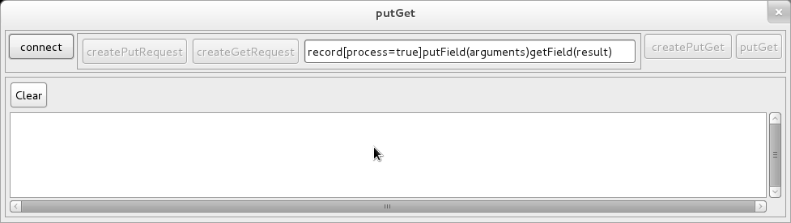
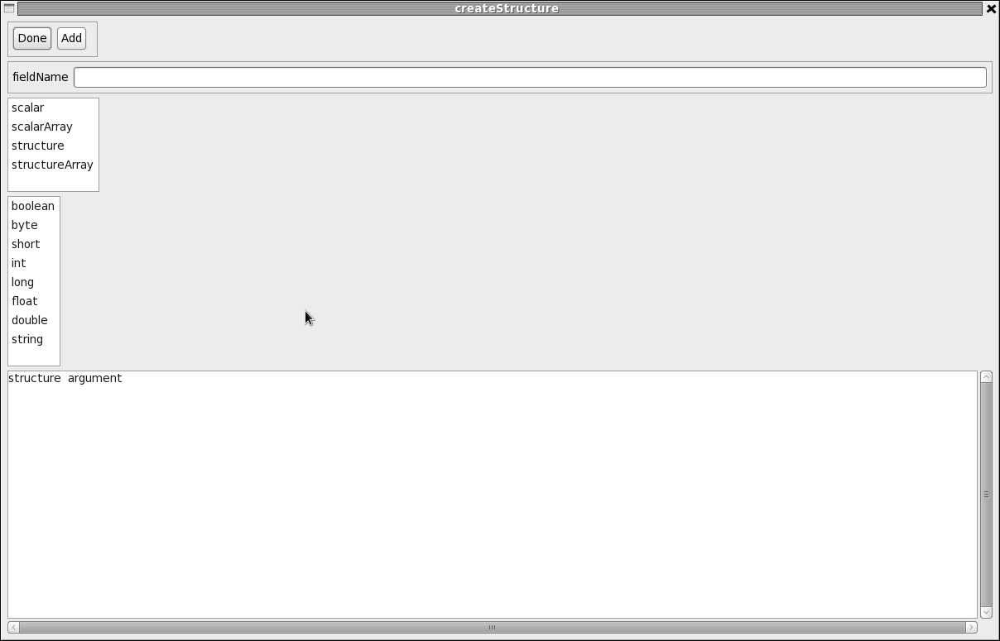

This product is available via an open source license
This document is the project and package overviews for pvIOCJava. The javaDOC is available at JavaDoc
NOTE Originally epics-pvdata was called javaIOC and consisted of a single eclipse project named javaIOC. This project is the what remains of the IOC portion of the original javaIOC. The name JavaIOC is still used in many places in this project.
A JavaIOC is a network accessable smart real time database. A database has memory resident records which can link to hardware or to other records. A record consists of a structured set of fields. A record can be processed, i.e. asked to do something. Each field has an object which implements interface PVField that provides access to the field's data. Each field of a record can optionally have associated support, which is defined by a Java interface called Support. One of the methods of Support is named process. When a process request is made the process method of each field support is called. Support is what makes the database a "smart" database.
The JavaIOC project uses project pvData, which provides the database, and pvAccess, which provides network support for pvData. This package assumes that you are familiar with pvData and pvAccess.
An Extensible Markup Language (XML) parser is provided for creating a PVDatabase. The JavaIOC adds support that allows a PVDatabase to become a smart soft realtime database. The JavaIOC attaches support code to every record and optionally to any field of a record. The support is configured via xml definitions. A structure defining support provides the name of a Java factory that creates support for a field.
The pvData overview gives a simple example of a record instance:
<record recordName = "simple"> <scalar name = "value" scalarType = "double" /> </record>
For the JavaIOC, this lis like it was declared:
<record recordName = "simple" > <auxInfo name = "supportFactory" scalarType = "string">genericFactory</auxInfo> <scalar name = "value" scalarType = "double"/> </record>
When the ioc adds a new record to the database it looks for support attached to the record. If it does not find any, it assigns generic support. The definition for generic is:
<structure structureName = "genericFactory">
<scalar name = "supportFactory" scalarType = "string">
org.epics.ioc.support.basic.GenericFactory</scalar>
</structure>
<structure structureName = "generic">
<auxInfo name = "supportFactory" scalarType = "string">genericFactory</auxInfo>
</structure>
Thus generic is a structure that has no fields and support named generic.
The overview portion of this document has four parts:
Part I describes the JavaIOC. Detailed descriptions of the JavaIOC packages are provided with each package.
EPICS is a set of Open Source software tools, libraries and applications developed collaboratively and used worldwide to create distributed soft real-time control systems for large scientific instruments such as a particle accelerators, telescopes, etc. An IOC (Input/Output Controller) is a network node that controls and/or monitors a collection of devices. An IOC contains a memory resident real time database. The real time database has a set of "smart" records.
JavaIOC is a JAVA implementation of an IOC. It has many similarities to a EPICS V3 ( the 3.13 and 3.14 releases of EPICS base) but extends the data types to support structures and arrays and allows any field to optionally have support.
JavaIOC is developed as an eclipse project. The following assumes that you have eclipse installed and have imported javaIOC into a project named "javaIOC".
In order to use the examples in the javaIOC, the environment variables IOCNAME, PVDATA, and javaIOC must be defined. For example on linux define:
export IOCNAME=laptop
export PVDATA=${HOME}/workspace/pvData
export javaIOC=${HOME}/workspace/javaIOC
Package org.epics.ioc has a Java program, org.epics.ioc.javaIOC, that does the following:
The arguments to javaIOC can be any combination of:
followed by a filenames. Each field is a list of servers to start.
For example:
-structures xml/structures.xml -records example/exampleDB.xml -dumpStructures -dumpRecords
Reads a set of files creating structures and records and then dumps the structures and records.
As a first example specify the arguments as:
-server server/pvAccessClient.txt server/caV3Client.txt \
-structures xml/structures.xml \
-records example/exampleDB.xml \
-server server/pvAccessServer.txt \
-swtshell
This:
Just try it. The following window appears:
Next do the following:
after awhile click "stop" and "disconnect" buttons
The following is displayed:

Click the connect button and the following window appears:

Click the selectLocal button and select "counter". the connectChannel window goes away. Next click startMonitor and then start. The monitor updates will appear.
Leave the monitor window running and do the following:
Now start another instance of javaIOC on another computer in the same local network with the arguments as:
-server server/pvAccessClient.txt\
-structures xml/structures.xml \
-swtshell
This starts without any local records. Use this to access the records in the javaIOC that has the example database.
The remainder of this document gives an overview of the javaIOC:
The javaIOC has both client and server Channel Access support for both caV3 and pvAccess. Eclipse project pvAccess fully supports network access to pvData. Support for caV3 means that an existing EPICS channel accesss client can access any primitive field (or an array of primitives) of a javaIOC record and that a javaIOC record can link to an EPICS IOC.
The existing features means that the javaIOC is now ready for use at least as a soft IOC.
The javaIOC implements portDriver which provides the same functionality as the asynDriver module for EPICS V3. At the present time it is not very useful because almost no driver support has been implemented.
The following javaIOC components are desirable.
Additional components are also desirable:
Thus lots of work has been done but lots of work remains.
Documentation is provided via javaDOC. Each package of the javaIOC project has a package.html overview document. The packages that currently exists are:
This package has the javaIOC class.
This is a GUI shell for an ioc. It is implemented via the Standard Widget Toolkit. Getting Started explains how to invoke it. See the package overview for a description of swtshell.
This directory and the structures subdirectory contains the xml structure definitions for the javaIOC. It also loads the xml definitions from pvData.
This directory contains the example xml files.
This package describes and implements the PVDatabase.
This package provides the framework for processing IOC database records. The subpackages of this package provide support that uses the framework. Each record instance must have associated support and each field of a record instance can optionally have support.
This package provides the code that installs structure and records into a javaIOC. It allows new structures or records to be installed into a running IOC.
This package describes and implements support for creating a PVStructure that contains a copy of a subset of the fields in a PVRecord. It is used by pvAccess.
This package describes and implements support for monitoring a subset of the fields in a PVRecord. It is a companion to pvCopy and is used by pvAccess.
This provides basic support such as noop, generic, etc.
This provides support for alarms.
This provides for channel access links, i.e. it allows records to get/put/monitor data in other records.
This provides for database links, i.e. it allows records to get/put/monitor data in other records in this javaIOC.
The provides support for calculations. A calcaulator is support that produces a result that is assigned to a value field. Included is support named expressionCalculator, which supports scalar expressions that have standard Java syntax.
This provides remote procedure call support for pvAccess channel access clients. It allows remore clients to list the records and structures in a javaIOC database,. display information about a javaIOC and about a record in a javaIOC.
This contains examples of support for "device" abstractions.
This package is Channel Access V3, e.g. channel access Version 3. Server support was implemented by Matej Sekoranja (COSYLAB). Client support is also implemented. Both the client and server require JCA/CAJ, which is supplied by COSYLAB..
This package connects pvAccess to the javaIOC. It implements a Channe; as described by pvAccess. It can be used directly by other records in the same javaIOC for the pvAccess faculities or can be used by remote pvAccess to access records in this javaIOC.
These packages implement portDriver, which is support for accessing and controlling hardware. It is modeled after the EPICS asynDriver and thus provides support for synchronous and asynchronous devices. Each device is accessed via a port. Each port provides access to one or more devices.
This directory defines the interfaces for portDriver.
This directory contains test port drivers.
This directory has a portDriver that implements the VXI11 protocal. Some testing has been done but more is required befoe it is robust.
The syntax for both structure and record definitions is XML based. In addition XML based macro substitution and include is supported. Project pvData describes the XML syntax. This section gives definitions for a javaIOC application.
Support is defined via a structure definition. Support is assigned to a field via an auxInfo attached to the field. For example the definition for alarm support is:
<structure structureName = "alarmSupportFactory">
<scalar name = "supportFactory" scalarType = "string">
org.epics.ioc.support.alarm.AlarmSupportFactory</scalar>
</structure>
<structure structureName = "alarm" extends = "org.epics.pvData.alarm" >
<auxInfo name = "supportFactory" scalarType = "string">alarmSupportFactory</auxInfo>
</structure>
Channel Access for pvData is implemented as a separate eclipse project named pvAccess. See it for details. This project provides the code that implements the pvAccess Channel interface. It can be used by local records directly or by the server for remote pvAccess..
This project provides both client and server support for epics V3 channel access.
For channel access this project has the following features.
Package org.epics.ioc.support describes and implements code directly related to record processing. The package overview has a section "Record Processing: Theory of Operation" that provides a description of record processing.
Sub-packagea of org.epics.ioc.support describe and implement all the support code that comes with javaIOC. Applications can add additional support.
When a set of javaIOC record instances are created and initialized, a recordProcess object is created for each record instance. The primary function of recordProcess is to call record support code, which may in turn call field support code. RecordProcess has methods for the following:
The primary purpose of recordProcess is to be the "gatekeeper" for record processing. Only one object can process a record. A record can be declared to be self processed which allows an arbitrary number of clients to request processing. The default is self process true. Methods are available to request being the record processor and to request processing. A process can be synchronous or asynchronous. An asynchronous operation is an operation that blocks, e.g. file I/O. recordProcess provides methods that allow asynchronous support but that only lock a record instance while the record is being accessed.
Whenever any field of a record is being accessed or whenever anything is done that can modify the state of a record, the record must be locked. In most cases recordProcess automatically takes care of locking and unlocking.
Each record instance must have associated support and each field of a record can optionally have support.
Support implements interface Support:
public interface Support extends Requester {
String getSupportName();
SupportState getSupportState();
PVRecordField getPVRecordField();
void initialize();
void start(AfterStart afterStart);
void stop();
void uninitialize();
void process(SupportProcessRequester supportProcessRequester);
}
where
The primary purpose of a support module is to help with record processing. Most support does something with a "value" field. For example the support for a channel access input link will get a value and put it in the "value" field.
Typical support code does the following core functions:
There is no separate concept of record support. Record support just happens to be the support called by recordProcess, i.e. it is the highest level support for a record instance. The record support that comes with javaIOC is also designed to also be structure support, i.e. support for a structure field embeded within a record.
Support code should not be aware of specific structure types. A support modules works with some set of fields that it locates at initialization. While processing it uses the PV interfaces to access the fields. Thus support is generic. If a structure has the fields required by the support then the support can be used to help support that structure.
An extreme example is generic support. This can used for a record itself or for any field that is a stucture. All that it does is look at all the fields in the structure that it supports. For each field that has support it calls the support.
javaIOC/xml the structure definitions for the javaIOC. It also includes the xml definitions from pvData. Applications can add new structure definitions and support. This section just gives a few example of using these database definitions. The complete set of definitions are described in the second part of this document.
The following are a few examples of record instances. The examples uses the following support
The following creates a record instance of type double. It is an input record because input is initialized to a Channel Access inputLink.
<record recordName = "doubleInput">
<structure name = "alarm" extends = "alarm" />
<structure name = "timeStamp" extends = "timeStamp" />
<scalar name = "value" scalarType = "double" />
<structure name = "display" extends = "display" />
<structure name = "input" extends = "caInputLink">
<scalar name = "pvname">counter</scalar>
<scalar name = "request">value,alarm</scalar>
</structure>
</record>
The following creates a record instance of type double. It is an output record because output is initialized to a Channel Access outputLink.
<record recordName = "doubleOutput">
<structure name = "alarm" extends = "alarm" />
<structure name = "timeStamp" extends = "timeStamp" />
<scalar name = "value" scalarType = "double" />
<structure name = "display" extends = "display" />
<structure name = "output" extends = "caOutputLink">
<scalar name = "pvname">someOutput</scalar>
</structure>
</record>
The following creates an instance of an aiRecord. The raw ADC value is read via channelAccess support and converted via linearConvertInput support.
<record recordName = "ai">
<scalar name = "value" scalarType = "double" />
<structure name = "alarm" extends = "alarm" />
<structure name = "timeStamp" extends = "timeStamp" />
<structure name = "input" extends = "linearConvertInput">
<structure name = "linearConvert">
<scalar name = "deviceHigh">2047</scalar>
<scalar name = "deviceLow">-2048</scalar>
<scalar name = "engUnitsLow">0.0</scalar>
<scalar name = "engUnitsHigh">10.0</scalar>
</structure>
<structure name = "input" extends = "portDriverLink">
<scalar name = "portName">somePort</scalar>
<scalar name = "deviceName">0</scalar>
<scalar name = "timeout">.2</scalar>
<structure name = "input" extends = "pdrvInt32Input"/>
</structure>
</structure>
</record>
The following creates an instance of an aoRecord. The value is converted via linearConvertOutput support to a rawValue which is written via portDriver support.
<record recordName = "ao">
<scalar name = "value" scalarType = "double" />
<structure name = "alarm" extends = "alarm" />
<structure name = "timeStamp" extends = "timeStamp" />
<structure name = "output" extends = "linearConvertOutput">
<structure name = "linearConvert">
<scalar name = "deviceHigh">2047</scalar>
<scalar name = "deviceLow">-2048</scalar>
<scalar name = "engUnitsLow">0.0</scalar>
<scalar name = "engUnitsHigh">10.0</scalar>
</structure>
<structure name = "output" extends = "portDriverLink">
<scalar name = "portName">somePort</scalar>
<scalar name = "deviceName">0</scalar>
<scalar name = "timeout">.2</scalar>
<structure name = "output" extends = "pdrvInt32Output"/>
</structure>
</structure>
</record>
The following creates a powerSupply instance that does no input or output. The power.value must be set via channel access.
<record recordName = "psSimple" >
<structure name = "alarm" extends = "alarm" />
<structure name = "timeStamp" extends = "timeStamp" />
<structure name = "voltage">
<scalar name = "value" scalarType = "double">10.0</scalar>
</structure>
<structure name = "current">
<auxInfo name = "supportFactory" scalarType = "string">org.epics.ioc.genericFactory</auxInfo>
<scalar name = "value" scalarType = "double">
<auxInfo name = "supportFactory" scalarType = "string">org.epics.ioc.powerSupplyFactory</auxInfo>
</scalar>
</structure>
<structure name = "power">
<scalar name = "value" scalarType = "double">10.0</scalar>
</structure>
<structure name = "scan" extends = "scan">
<scalar name = "processAfterStart">true</scalar>
</structure>
</record>
The following creates a powerSupply record that gets its voltage and writes its current via channel access.
<record recordName = "psLinked" >
<structure name = "alarm" extends = "alarm" />
<structure name = "timeStamp" extends = "timeStamp" />
<structure name = "voltage" extends = "generic">
<scalar name = "value" scalarType = "double" />
<structure name = "input" extends = "caInputLink">
<scalar name = "pvname">adcVoltageSupported</scalar>
<scalar name = "process">true</scalar>
</structure>
</structure>
<structure name = "current" extends = "generic">
<scalar name = "value" scalarType = "double" >
<auxInfo name = "supportFactory" scalarType = "string">org.epics.ioc.powerSupplyFactory</auxInfo>
</scalar>
<structure name = "output" extends = "caOutputLink">
<scalar name = "pvname">current</scalar>
<scalar name = "request">record[process=true]</scalar>
</structure>
</structure>
<structure name = "power">
<scalar name = "value" scalarType = "double" />
</structure>
</record>
The following creates a powerSupply record that gets its voltage and writes its current via embeded support.
<record recordName = "psEmbeded">
<structure name = "alarm" extends = "alarm" />
<structure name = "timeStamp" extends = "timeStamp" />
<structure name = "voltage" extends = "generic">
<scalar name = "value" scalarType = "double" />
<structure name = "alarm" extends = "alarm" />
<structure name = "input" extends = "linearConvertInput">
<structure name = "linearConvert">
<scalar name = "deviceHigh">4095</scalar>
<scalar name = "deviceLow">0</scalar>
<scalar name = "engUnitsLow">0.0</scalar>
<scalar name = "engUnitsHigh">10.0</scalar>
</structure>
<structure name = "input" extends = "caInputLink">
<scalar name = "pvname">adcVoltageEmbeded</scalar>
</structure>
</structure>
</structure>
<structure name = "current" extends = "generic">
<scalar name = "value" scalarType = "double">
<auxInfo name = "supportFactory" scalarType = "string">org.epics.ioc.powerSupplyFactory</auxInfo>
</scalar>
<structure name = "alarm" extends = "alarm" />
<structure name = "output" extends = "linearConvertOutput">
<structure name = "linearConvert">
<scalar name = "deviceHigh">4095</scalar>
<scalar name = "deviceLow">0</scalar>
<scalar name = "engUnitsLow">0.0</scalar>
<scalar name = "engUnitsHigh">10.0</scalar>
</structure>
<structure name = "output" extends = "caOutputLink">
<scalar name = "pvname">dacCurrentEmbeded</scalar>
<scalar name = "request">record[process=true]</scalar>
</structure>
</structure>
</structure>
<structure name = "power">
<scalar name = "value" scalarType = "double" />
</record>
The Data Model supports general purpose client tools. A set of structures are defined that support the data model. A record supports the data model if it follows a few simple guidelines.
The model can briefly be described as follows: Clients access a field named value, which may be a field in the top level structure of a record or in a substructure. All other fields in the structure are considered properties of the value field. The fieldname is the property name. The value is usually a data field, i.e. a scalar type or an array with the elementType being scalar. All other fields of the structure support the value. Typical property fields are timeStamp, alarm, display, control, and history.
The timeStamp is a special case. It it appears anywhere in the structure hieraracy above the value field it is considered a property
For example the following record has a single value field. The value field has propertys alarm, timeStamp, and display.
<record recordName = "someRecord" >
<structure name = "alarm" extends = "alarm" />
<structure name = "timeStamp" extends = "timeStamp" />
<scalar name = "value" scalarType = "double" />
<structure name = "display" extends = "display" >
<scalar name = "description">Sample Description</scalar>
<scalar name = "format">%f</scalar>
<scalar name = "resolution">1</scalar>
<scalar name = "units">volts</scalar>
<structure name = "limit">
<scalar name = "low">0.0</scalar>
<scalar name = "high">10.0</scalar>
</structure>
</structure>
</record>
The following example has three value fields each with propertys alarm and timeStamp.
<record recordName = "psSimple">
<structure name = "alarm" extends = "alarm" />
<structure name = "timeStamp" extends = "timeStamp" />
<structure name = "voltage">
<scalar name = "value" scalarType = "double">10.0</scalar>
<structure name = "alarm" extends = "alarm" />
</structure>
<structure name = "current">
<auxInfo name = "supportFactory" scalarType = "string">org.epics.ioc.genericFactory</auxInfo>
<scalar name = "value" scalarType = "double">
<auxInfo name = "supportFactory" scalarType = "string">org.epics.ioc.powerSupplyFactory</auxInfo>
</scalar>
<structure name = "alarm" extends = "alarm" />
</structure>
<structure name = "power">
<scalar name = "value" scalarType = "double">10.0</scalar>
<structure name = "alarm" extends = "alarm" />
</structure>
<structure name = "scan" extends = "scan">
<scalar name = "processAfterStart">true</scalar>
</structure>
</record>
A client could ask for power.value, current.value, or voltage.value.
This data model supports existing EPICS V3 channel access clients. More powerful or special purpose clients can handle structured data. Such clients can access a structure. For example a client can ask for an entire record. An example is swtshell.
A javaIOC structure follows the javaIOC Data Model if it has a set of fields that have names and types that support the data model. It can have additional fields, that can also be considered properties. The following field names have special meaning, i.e. are properties for general purpose clients.
In addition the javaIOC structure can have additional fields that support the value field but are not recognized by most general purpose client tools. Typical examples are:
The model allows for device records. A device record has fields that are structures that support the javaIOC data model. For example a powerSupport record can have fields power, voltage, current that each support the javaIOC data model.
The set of structures for standard properties for general purpose client tools are defined in pvData.
Part III describes the Database Definitions provided with the javaIOC.
The create, and support definitions implemented by javaIOC are defined. In addition a set of structure definitions that use the support are provided. A brief summary is:
This package overview does not discuss the algorithms implemented by the support implementations. See package org.epics.ioc.support and sub-packages for details.
This file includes all definitions needed for the support provided by javaIOC.
<database>
<import name = "org.epics.ioc.*" />
<include addPath = "${JAVAIOC}/xml/structure" />
<package name = "org.epics.ioc" />
<include href = "enumerated.xml" />
<include href = "timeStamp.xml" />
<include href = "limit.xml" />
<include href = "display.xml" />
<include href = "deadband.xml" />
<include href = "channelAccess.xml" />
<include href = "generic.xml" />
<include href = "commonFields.xml" />
<include href = "control.xml" />
<include href = "alarm.xml" />
<include href = "supportState.xml" />
<include href = "caLink.xml" />
<include href = "dbLink.xml" />
<include href = "analog.xml" />
<include href = "event.xml" />
<include href = "calc.xml" />
<include href = "delay.xml" />
<include href = "rpc.xml" />
<include href = "powerSupply.xml" />
<include href = "portDriver.xml" />
<include removePath = "${JAVAIOC}/xml/structure" />:qa
</database>
This file includes RPC record definition and support provided by the javaIOC.
<database>
<import name = "org.epics.ioc.*" />
<include addPath = "${JAVAIOC}/xml/record" />
<package name = "org.epics.ioc" />
<include href = "rpc.xml" />
<include removePath = "${JAVAIOC}/xml/record" />
</database>
The single record is:
<database>
<import name = "org.epics.ioc.*" />
<import name = "org.epics.pvData.*" />
<record recordName = "${IOCNAME}recordListRPC" extends = "recordList" />
<record recordName = "${IOCNAME}structureListRPC" extends = "structureList" />
<record recordName = "${IOCNAME}iocShowRPC" extends = "iocShow" />
<record recordName = "${IOCNAME}recordShowRPC" extends = "recordShow" />
<record recordName = "${IOCNAME}supportStateSetRPC" extends = "supportStateSet" />
</database>
These two files crate a set of RPC records for a javaIOC. The record types are defined in structure/rpc.xml below.
This file contains database definitions related to alarms. Note that pvData also defines alarms as seen by general purpose tools.
See package org.epics.ioc.support.alarm for a description of the algorithm for raising alarms.
After defining the alarm severities, it defines a structure alarm. This is the structure for a field, usually named alarm, that provides the alarm severity and a message describing why an alarm was raised. A record can have an alarm field and each structure field in a record can optionally have an alarm field, i.e. a hierarachy of alarms is supported. If a structure has an alarm field then when it's support is called to raise an alarm, the support looks up the parent tree for the first alarm field it finds and raises an alarm equal to it's own alarm severity. Thus the top level alarm field for the record always has an alarm severity greater than or equal to all lower level alarms.
The remaining definitions are for checking alarms for value fields. Definitions and support are available for the numeric types, boolean, and enumerated.
Look at file xml/structure/alarm.xml to see the actual definitions.
The definitions for byte, short, int, long, float, and double are all the same except for the data type. The algorithn is the same as the algorithm used by the ai and ao records from EPICS V3.
Structure booleanAlarm has the fields:
Enumerated alarms are for a data type that is an enumerated structure.
Structure enumeratedAlarm has the fields:
This is the support for analog I/O. See org.epics.ioc.support.basic for details
Structure linearConvert is for linear conversions. The slope and intercept can be specified directly or can be computed from the other four fields. Normally the record instance defines engUnitsLow and engUnitsHigh and support code provides values for deviceHigh and deviceLow but other combinations are also permitted. Structure linearConvert has the fields:
Structure linearConvertInput is for converting a raw value to an enginerering units value. It has the fields:
Structure linearConvertOutput is for converting a raw value to an enginerering units value. It has the fields:
This is for rate limited output. The output value incrementally reaches the desired value. The structure has the fields:
This is the support for calculations. See org.epics.ioc.support.calc for details. Note that expressionCalculator is the default calculator..
This is the support for a links to other records. See org.epics.ioc.support.ca for details.
Structure caProcessLink has the fields:
Structure caMonitorLink has the fields:
Structure caMonitorNotifyLink has the fields:
Structure caInputLink has the fields:
Structure caOutputLink has the fields:
Structure dbProcessLink has the fields:
Structure caInputLink has the fields:
Structure caOutputLink has the fields:
This file contains database definitions for fields scan and timeStamp.
Definitions for the following structuress:
This is a structure and support for control limits.
This is the support that delays before completing. It is used for testing. See org.epics.ioc.support.basic for details.
This is the support for announcing events. See org.epics.ioc.support.basic for details.
Generic is the default support for many record types. It just calls the support for any fields that have support. See org.epics.ioc.support.basic for details.
This is the support for portDriver. See org.epics.ioc.support.pdrv and org.epics.ioc.portDriver for details.
This includes portDriver related files.
This contains for RPC records and support:
This provides a list of record names selected via a regular expression. See swtshell for an example of how a client issues a request.
This provides a list of structure names selected via a regular expression. See swtshell for an example of how a client issues a request.
This provides information about tjhe javaIOC: badRecords, threads, and memory usage. It also provides the ability to ask java to garbage collect.
This provides the following features:
This allows a client to set the support state for a record.
The following sections provide documentation for packages that belong to pvIOCJava.
This package has a single class called JavaIOC. It's purpose is to start a JavaIOC.
NOTE: The environment variables IOCNAME, PVDATA, PVACCESS. and JAVAIOC should be defined.
JavaIOC is developed as part of an eclipse project. It uses two other eclipse projects: pvData and pvAccess. One way to start it is to check out the eclipse projects and then use then run JavaIOC as a java application. The following assumes that you have eclipse installed and have imported pvIOCJava into a project named "pvIOCJava". In addition project pvDataJavai and pvAccessJava must also exist as eclipse projects.
JavaIOC does the following:
The arguments to JavaIOC can be any combination of:
followed by filenames. Each field is a list of servers to start. See javaIOC/server for a list of the server files supplied by javaIOC itself.
Open the src tree and the select org.epics.ioc.JavaIOC and then run as Java Application. If this is the first time or it is not the configuration desired then stop the running JavaIOC.
With the run menu select "run configurations". Then select Arguments. Then add the desired arguments as described above and then run.
The JavaIOC can also be started without eclipse. In the same directory have a file named source and files that start JavaIOC. The following is an example that works on linux or macOS.
This is a sample source file:
pwd=$PWD
# The following assumes that pvDataJava, pvAccessJava, and pvIOCJava
# are eclipse projects in $HOME/hg
export WORKSPACE=$HOME/hg
export PVDATA=${WORKSPACE}/pvDataJava
export PVACCESS=${WORKSPACE}/pvAccessJava
export JAVAIOC=${WORKSPACE}/pvIOCJava
export CLASSPATH=${CLASSPATH}:${PVDATA}/bin
export CLASSPATH=${CLASSPATH}:${PVACCESS}/bin
export CLASSPATH=${CLASSPATH}:${JAVAIOC}/bin
export CLASSPATH=${CLASSPATH}:${JAVAIOC}jar/CAJ.jar
export CLASSPATH=${CLASSPATH}:${JAVAIOC}jar/JCA.jar
# The following MUST be changed to locate the release of swt on your system
export CLASSPATH=${CLASSPATH}:/usr/lib/eclipse/swt.jar
The following is the contents of a file named startExample
#! /bin/bash
source source
java \
-server \
org.epics.ioc.JavaIOC \
-structures ${JAVAIOC}/xml/structures.xml \
-records ${JAVAIOC}/example/exampleDB.xml \
-server ${JAVAIOC}/server/pvAccessServer.txt \
-swtshell
To start the example just type:
./startExample
This package provides a GUI shell implemented via the SWT toolkit that comes with eclipse. The default JavaIOC package overview document gives brief instructions for starting the swtshell. If you want to communicate with another javaIOC then the option "-server server/pvAccessClient.txt" must be given when the javaIOC is started. If you want to communicate with a V3 EPICS IOC then the option "-server server/caV3Client.txt" must be given. Both options can be given.
The following window appears when swtshell is started:
The window has the following buttons:
NOTE: After text is typed into any text input window, the enter key must be pressed.
The channelList, get, put, process,putGet,channelRPC, monitor,array, and structureArray buttons each start a new window. Each window provides the ability to connect to a PV (Process Variable).
The window gets data from a local or remote IOC. The data is accessed via Channel Access, which can be either V3 or V4 channelAccess
For EPICS V3 Channel Access only the following data can be accessed:
See package org.epics.ioc.caV3 for details about caV3.
This obtains a list of a subset, selected by a regular expression, of the records in a javaIOC. A name can be selected and dropped into a connect window descibed in the next sub-section.
When channelList is selected from the main swtshell window the following window appears.

The provider is normally CAV4 but could also be selected as local, i.e. the javaIOC that is in the same process as swtshell. The icname must be specified. A regular expression selects the set of records to list. The above example selects all records with names ending in "RPC". The default regular expression ".*" selects all records. When the enter key is pressed in the regularExpression, the list of channels is read via channel access.
The implementation issues a channel access putGet request to get the channel list It requres that the javaIOC have an RPC record ( RPC records are descibed below) that provides the record list. The record must be named "${IOCNAME}recordListRPC" where IOCNAME is the name of the javaIOC.
The process,get, put, putGet, channelRPC, monitor, and array windows all have a connect button. When this button is pressed the following window appears:
If selectLocalRecord is clicked then a list of all the records in the local javaIOC is presented. When a record is selected a request is made to create a channel connected to the record and control returned to the window that has the connect button.
For a remote record a pvname can be entered. Note that the record name can be obtained from the channelList described in the previous sub-section. When return is clicked a request is made to create a channel to the selected record and control returned to the window that has the connect button.
The get, put, putGet and monotor windows all have a createRequest button, which can activated after connecting to a channel. createRequest allows you to select an arbitarary set of fields from the PVRecord to which the channel is connected. All also show a text window with the curent request string displayed. This text window can be modified or the createRequest button can be clicked to use introspection to select a set of fields.
When the createRequest button is pressed the following window appears:

Again the text window can be edited. If options are provided for fields thety must be manually entered.
When the introspect button is clicked a window like the following appears. The details depend on the record structure.

This window allows the user to select an arbitrary set of fields from the PVRecord to which the channel is attached. When the arrow for a structure field is clicked the fields for that structure appear. A field is selected by clicking the button next to the field name. If a structure field is selected the entire structure is selected.
A request can also be specified via a text window and then clicking the request button. The rules for specifying the request via a text string are specified by org.epics.pvData.pvCopy See the package overview for details.
The following window appears when the process button is pushed:

The connect button is for connecting and disconnecting to/from a channel. The createProcess button is for creating and destroying a channelProcess request. The process button sends a process request to the channel access server.
Clicking the get button of the swtshell window creates the following window. The following shows the window after connecting to a channel and clicking createGet.:

The first row has the following widgets:
The following window appears when the put button is pushed:

Except for put the top row is just like get.
When the put button is clicked then what happens depends of how many fields where selected from the PVRecord. If only a single scalar or array field was selected, then a text entry box apppears. When a value is entered and the return key is pressed then this value is sent via channel access.
If more than a single scalar or array field was selected then when put is clicked a window appears that allows the user to provide values to each scalar or array field of the selected fields. This window is:

This display allows the user to give values to any of the scalar or array fields.
If a primitive or array of primitives is selected then when edit is clicked the following happens:
When done is clicked the modified fields are sent to the channel access server and written to the PVRecord.
The following window appears when the putGet button is pushed. It is similar to get and put except that both a putRequest and a getRequest must be specified.

A typical use of putGet is to issue a remote procedure call. An RPC record, by convention, has the following:
A client issues an RPC request as follows:
To use the putGet swt window to issue an RPC the client connects to a RPC record, selects process, and for the createPutRequest selects arguments from the following window.

Then result is selected from the createGetRequest window.

The following shows an example result.
The following window appears when the channelRPC button is pushed. A channelRPC returns a new PVStructure for each request. The record must support a channelRPC request.

The createArgument and argument controls are used to create the introspection interface for the data the client will pass to the server. The text window that shows the value "argument" is the field name of the top level structure for the argument. It can be changed to any valid field name, e. g. "NTTable". When the createArgument button is clicked the following window appears:

You enter a fieldName and select a type. If the type is scalar or scalarArray then you must also select a scalarType. When you click add the new field will appear in the console window. If you select type structure or structureArray then when you select add a new structureArray window will appear. You follow the same procedure to create a sub structure.When you click done the createStructure window disappears.
The following window appears when the array button is pushed:

This window has a connect/disconnect button and a createArray/destroyArray button. It has a text entry for subField. The get button issues a array get request. The offset and count can be specified. The result is written into the value field of the put row. The put button issues a put array request. The offset can be specified. The value field provides the array values. The setLength button is used to set the length and/or capacity of the array. A value of -1 means leave as is.
This is used to get and modify elements of a PVStructureArray. You must get before issuing a put. The puts will modify the data obtained via the get and then put the data back.
The following window appears when the structureArray button is pushed:

This window has a connect/disconnect button and a createArray/destroyArray button. It has a text entry for subField. The get button issues a array get request. The offset and count can be specified. The result is written to the consoleText window. You must issue a get before using put.
The put row acts on the data received from a put. You change elements by giving a value to index and clicking putElement. A tree structured window just like for put appears. This is changing the local data. When you click put the data is written to the actual record. The setLength button is used to set the length and/or capacity of the array. A value of -1 means leave as is.
The following window appears when the monitor button is pushed:
The controls in the first row are similat to get and put. Note that the queueSize can be set.
The other controls provide:
The following window appears when the loadDatabase button is pushed:

This is used to load additional IOCDB definitions to a running IOC. It has the following controls:
The following window appears when the introspectDatabase button is pushed:

The top menubar allows the use to see all the structure definitions in the master database.
The next three row allows the user to select and interact with a local record. The select button is used to select a local record. The text window after select shows the currently selected record and can also be used to enter a record name. The remaining buttons apply to the selected button. They are:
The third row has two buttons that show information. They are:
The following window appears when the portDriver button is pushed:

The first row has buttons to select a port and a device. The other rows are for setting trace options and for connect and enable commands.
The following window appears when the iocConsole button is pushed:

When this is started, it calls iocdb.addRequester where iocdb is the master IOCDB. Whenever any code sends a message to the iocdb, the message is displayed on the iocConsole window. Note that iocdb puts the messages on a queue and has a separate thead that send the messages to the requesters.
One way to create structures and records for a PVDatabase is via XMLToPVDatabaseFactory, which parses structure and record definitions from an xml file, creates structure and record instances and adds then to a PVDatabase. This overview first defines the xml syntax and then interfaces and code for reading the xml files.
<?xml version="1.0" ?> <database xmlns="urn:schemas-epics-org:javaioc:1.0" xmlns:xsi="http://www.w3.org/2001/XMLSchema-instance" xsi:schemaLocation="urn:schemas-epics-org:javaioc:1.0 javaioc.xsd" xmlns:model="urn:schemas-cosylab-com:model:1.0" name="database"> <!-- arbitrary set of structure and record definitions --> </database>
An auxInfo defines additional information for a record, structure, or field. It is for use by applications that require additional information for a field. An arbitrary number of auxInfo can be created for any field.
An auxInfo is defined as follows:
<auxInfo name = "auxInfoName" scalarType = "scalarType"> value </auxInfo>
where:
The following auxInfo is supported for every field:
<auxInfo name = "pvReplaceFactory" scalarType = "string">
value
</auxInfobu>
value must be the name of a structure that provides the name of a factory that will provide the PVField implementation.
Structure definitions exist so that a structure field of a record can be initialized with the fields of a previously defined structure definition. A structure is defined as follows:
<structure structureName = "structureName" extends = "otherStructureName" >
<!-- sequence of field -->
</structure>
where:
A record is a structure instance which has a record instance name. A record is defined as follows:
<record recordName = "recordName" extends = "structureName" >
<!-- sequence of field -->
</structure>
where:
These two elements are both related to structures defined in the previous section.
<package name = "packageName" /> <import name = "packageName" />
For both the packageName is of the form:
name.name...
or for import
name.name...*
package applys to the structureName in a structure definition: For example the following:
<package name = "org.epics.pvData" /> <structure structureName = "alarm"> <!-- field definitions --> </structure>
Is the same as:
<structure structureName = "org.epics.pvData.alarm"> <!-- field definitions --> </structure>
import applys to extends structureNames in structure, record, and field structure definitions. For example the following:
<import name = "org.epics.pvData.*" />
<import name = "org.me.myStuff.*" />
<record recordName = "xxx" extends = "myStructure">
<structure name = "alarm" extends = "alarm">
</record>
Is the same as:
<record recordName = "xxx" extends = "org.me.myStuff.myStructure">
<structure name = "alarm" extends = "org.epics.pvData.alarm">
</record>
A field of a record or structure can have one of the following tag names: scalar, scalarArray, or structure,.
A scalar field is defined as follows:
<scalar name = "fieldName" scalarType = "scalarType">
value
</scalar>
where:
An array field is defined as follows:
<array name = "fieldName" scalarType = "scalarType"
capacity = "capacity" capacityMutable = "true/false" length = "length" offset = "offset">
arrayValues
</array>
where:
arrayValues is a comma separated set of values appropriate to the element type. It can optionally be enclosed in []. Examples:
<array name = "field0" scalarType = "double">
2.3,5e10,66.0
</array>
<array name = "field1" scalarType = "double">
[2.3,5e10,66.0]
</array>
For all array elementTypes except string the convert library will remove all white space so white space is permitted. If the elementType is string then white space is not removed. Also each array element is not allowed to have the character ','. What to do? Should also allow other escape sequences like \n, etc.
A structure field is defined as follows:
<structure name = "fieldName" extends = "structureName">
<!-- sequence of field -->
</structure>
where:
Thus all Java primitrive types except char are support and are implemented via the corresponding Java type. Type string is implemented as a Java String.
For example
<scalar name = "value", scalarType = "double" />
<scalar name = "rawValue" scalarType = "int" />
<scalar name = "description" scalarType = "string" />
value for scalar fields must be specified as follows:
NOTE about byte, short, int. The syntax allows unsigned instead of signed values for hex values. For example the following is legal syntax although Java would complain.
<scalar name = "mask" scalarType = "byte">0xff</scalar>
An enumerated structure is a structure that:
If the current structure is an enumerated structure then the following syntax is allowed:
<scalar name = "choice">someChoice</scalar>
where someChoice must be one of the elements of choices. This results in the index field being initialized to the correct value.
If fieldName does not exist then a new field can be created and appended to the end of the current structure. In this case a new field will be appended to the end of the structure in which this field appears.
For example:
<record recordName = "simple" > <scalar name = "value" scalarType = "double" /> </record>
Because the record definition does not specify a scalarType = "structureName", it starts with the generic structure, which has no fields. A field with name value does not exist so it is created and appended to the structure. i.e. the record will have a single field of type double and named "value".
The following creates a record which has a structure field that represents a timeStamp..
<record recordName = "structureField" >
<structure name = "timeStamp">
<scalar name = "secondsSinceEpoch" scalarType = "long">
<scalar name = "nanoSeconds" scalarType = "int">
</structure>
</record>
The following creates a record which has a field named output that is an array of structures:
<record recordName = "complexExample">
<stucture name = "lotsOfStuff" >
<scalar name = "value" scalarType = "double">
<structure name = "output">
<structure name = "0">
<scalar name = "dest" scalarType = "string">dest0</scalar>
<stucture name = "otherInfo">
<!-- other defs -->
</structure>
</structure>
<structure name = "1">
<scalar name = "dest" scalarType = "string">dest1</scalar>
<stucture name = "otherInfo">
<!-- other defs -->
</structure>
</structure>
</structure>
</structure>
</record>
If multiple field instance definitions appear then the last instance determines how the field is initialized.
The syntax for the initializer depends on the field type.
For scalar types the initializer has the same format as the Java constants for the type. For example if the type for field value is double:
<scalar name = "value">.98</scalar>
Note: For integer data types Long.decode is used to convert a string to a long, which is then converted to the final integer data type . Thus hex values are allowed. Java does not allow the sign bit to be set. By converting first to a long all interger types except long can have the sign bit set. For example the byte value 0xff is allowed even though Java would raise an exception if Byte.decode was used. The sign problem does exist for long values.
For string types the initializer is a valid Java string constant, which can optionally be enclosed in quotes. For example:
<scalar = "units">voltage</scalar>
A structure scalar field is initialized by giving field definitions for any fields in the associated structure. For example assume that the following structure definitions have been given:
<structure structureName = "test.point">
<scalar name = "x" scalarType = "double" />
<scalar name = "y" scalarType = "double" />
</structure>
<structure structureName = "test.testStructure">
<scalar name = "value" scalarType = "double">10.0</scalar>
<structure name = "location" extends = "test.point" />
</structure>
Then the following creates a structure scalar field:
<record recordName = "structureScalarTest">
<structure name = "timeStamp" extends = "timeStamp" />
<scalar name = "value" scalarType = "structure" extends = "test.testStructure">
<scalar name = "value">100.0</scalar>
<structure name = "location">
<scalar name = "x">1.0</scalar>
<scalar name = "y">2.0</scalar>>
</structure>
</scalar>
</record>
Structure fields are initialized via a recursive definition of field.
Assume the following structure definitions:
<structure structureName = "doubleLimit">
<scalar name = "low" type ="double"/>
<scalar name = "high" type ="double"/>
</structure>
<structure structureName = "control">
<structure name = "limit" extends = "doubleLimit" />
<scalar name = "minStep" scalarType = "double" />
</structure>
limit is initilized as follows:.
<structure name = "control" extends = "control">
<structure name = "limit">
<scalar name = "low">0.0</scalar>
<scalar name = "high">10.0</scalar>
</structure>
<scalar name = "minStep">.1</scalar>
</structure>
It is permissible, in a database definition, to define a field to be a structure without providing a structure name. In this case the default is "null" which is a structure with no fields.
The default structure and auxInfo can be overridden when a field instance is defined. The syntax is:
<structure name = "fieldName" extends = "structureName">
<auxInfo name = "pvReplaceFactory" scalarType = "string">someFactory</auxinfo>
</structurte>
<array name = "fieldName" scalarType = "scalarType"
capacity = "capacity" capacityMutable = "true/false" length = "length" offset = "offset" >
valueList
</array>
where
The following perform the same initialization:
<array name = "intArray" scalarType = "double">
0.0,1.0,0.0
</array>
<array name = "intArray" scalarType = "double" length = "3">
0.0,1.0
</array>
The following initializes an array of structures
<complexArray name = "example">
<structure name = "structArray" >
<structure name = "0" extends = "doubleLimit" >
<scalar name = "low">0.0</scalar>
<scalar name = "high">10.0</scalar>
</structure>
<structure name = "1" extends = "doubleLimit">
<scalar name = "low">-10.0</scalarmit>
<scalar name = "high">10.0</scalar>
</structure>
</structure>
</array>
The first time a structure array field is created an extends must also be provided. The extended structure is used to create the array elements. For example assume that the following structures have been defined:
<structure structureName = "test.point">
<scalar name = "x" scalarType = "double" />
<scalar name = "y" scalarType = "double" />
</structure>
<structure structureName = "test.testStructure">
<scalar name = "value" scalarType = "double">10.0</scalar>
<structure name = "location" extends = "test.point" />
</structure>
Then the following creates a structure array
<record recordName = "structureArrayTest">
<structure name = "timeStamp" extends = "timeStamp" />
<array name = "value" scalarType = "structure" extends = "test.testStructure" capacity = "2">
<structure>
<scalar name = "value">100.0</scalar>
<structure name = "location">
<scalar name = "x">0.0</scalar>
<scalar name = "y">0.0</scalar>>
</structure>
</structure>
<structure>
<scalar name = "value">200.0</scalar>
<structure name = "location">
<scalar name = "x">5.0</scalar>
<scalar name = "y">10.0</scalar>>
</structure>
</structure>
</array>
</record>
<include addPath = "path" removePath = "path" href = "filename" />
Where
Macro substitution replaces a string of the form "${from}" with some other text. The syntax is:
<substitute from = "fromString" to = "toString" fromTo = "from=to,from=to,..."/>
Where:
Macro substitution can be performed on the foillowing:
NOTE: If a substitution is being performed and a substitute is not found then if the value is found in the system environment table that value is used.
The following is a template file:
<?xml version="1.0" ?>
<database>
<record recordName = "ai${recordExtension}Record">
<scalar name = "value" scalarType = "double"/>
<structure name = "timeStamp" extends = "timeStamp">
<structure name = "alarm" extends = "alarm" />
<structure name = "input" extends = "linearConvertInput" >
<structure name = "input" extends = "inputSupport">
<scalar name = "pvname">${pvname}</scalar>
<scalar name = "wait">true</scalar>
</structure>
<structure name = "linearConvert">
<scalar name = "engUnitsLow">${engUnitsLow}</scalar>
<scalar name = "engUnitsHigh">${engUnitsHigh}</scalar>
</structure>
</structure>
<structure name = "display" extends = "display" >
<scalar name = "units">volts</scalar>
<structure name = "limit">
<scalar name = "low">${displayLow}</scalar>
<scalar name = "high">${displayHigh}</scalar>
</structure>
</structure>
</record>
</database>
se>
The following creates two instance files from the template:
<?xml version="1.0" ?> <database> <include addPath = "src/org/epics/ioc/dbAccess/example" /> <substitute from = "recordExtension" to = "01" /> <substitute from = "pvname" to = "nameFor01" /> <substitute from = "displayLow" to = "0.0" /> <substitute from = "displayHigh" to = "10.0" /> <substitute from = "engUnitsLow" to = "0.0" /> <substitute from = "engUnitsHigh" to = "9.0" /> <include href = "protoAiDB.xml" /> <substitute fromTo = "recordExtension=02,pvname=nameFor02" /> <include href = "protoAiDB.xml" /> </database>
This section describes the Java support for converting files, which have XML definitions for PVData structures and records, to PVDatabase PVStructures and PVRecords.
The support has two components:
This section first shows the Java Definitions, then it discusses XML to PVDatabase parsing, and last Include and Substitute.
This is a warning for utility code that genetrates xml for PVData. The problem is the special XML characters:
These symbols are part of the xml syntax. This is a problem when the value for a string is being defined. For example:
<scalar name = "xxx" elementType = "string">value</scalar>
In order to set value = "a<b" Then one of the following must be entered.
<scalar name = "xxx" elementType = "string">a<b</scalar>
or
<scalar name = "xxx" elmentType = "string"><![CDATA[a<b]]></scalar>
I (Marty Kraimer) do not know how to determine, using SAX, what appears in the original xml source file. What appears to the ContentHandler callback is just the converted characters. What to do? One suggestion is that any code that generates PVData xml should look at all string scalar and scalar array element values. If any of the special XML characters are present then use the<![CDATA[value]]> method of encoding the value.
class XMLToPVDatabaseFactory {
static void convert(PVDatabase pvDatabase, String fileName,Requester requester,
boolean reportSubstitutionFailure,
XMLToPVDatabaseListener pvListener,
IncludeSubstituteXMLListener isListener,
IncludeSubstituteDetailsXMLListener detailsListener);
static void convert(PVDatabase pvDatabase, String fileName,Requester requester);
}
interface XMLToPVDatabaseListener {
void startStructure(PVStructure pvStructure);
void endStructure();
void startRecord(PVRecord pvRecord);
void endRecord();
void newStructureField(PVStructure pvStructure);
void endStructureField();
void startArray(PVArray pvArray);
void endArray();
void startScalar(PVScalar pvScalar);
void endScalar();
void startAuxInfo(String name,Map<String,String> attributes);
void endAuxInfo();
}
interface IncludeSubstituteXMLListener {
void endDocument();
void startElement(String name, Map<String,String> attributes);
void element(String content);
void endElement(String name);
}
interface IncludeSubstituteDetailsXMLListener {
void startElementBeforeSubstitution(String name, Map<String,String> attributes);
void elementBeforeSubstitution(String content);
void newSourceFile(String fileName);
void endSourceFile();
void addPath(String pathName);
void removePath(String pathName);
void substitute(String from,String to);
void removeSubstitute(String from);
}
interface IncludeSubstituteXMLReader {
void parse(String rootElementName,String fileName,Requester requester,
boolean reportSubstitutionFailure,
IncludeSubstituteXMLListener listener,
IncludeSubstituteDetailsXMLListener detailsListener);
void message(String message,MessageType messageType);
}
class IncludeSubstituteXMLReaderFactory {
static public IncludeSubstituteXMLReader getReader();
}
This support processes PVData XML statements. Code that wants to parse PVData XML statements calls one of the XMLToPVDatabaseFactory.convert methods. The only difference between the two methods is that the first provides access to detailed information about parsing while the second only provides errors..
This provides two methods both named convert. The first provides detailed information about parsing. It is intended for use by VDCT. The second reports all errors including substitution failues but none of the detailed information. The arguments for the first method are:
This provides a callback for the beginning and end of the parsing of PVData XML elements not related to macro substitution and include. It provides the following methods:
This support completely handles all details of Macro Substitution and Include. The code that calls this support sees only the results of substitution and include.. This support also implements the SAX2 ContentHandler and EventHandler interfaces. Instead of the SAX2 interfaces, code that uses this code must implement at least the IncludeSubstituteXMLListener interface. Support that wants additional information can also implement the IncludeSubstituteDetailsXMLListener interface. This code, in addition to macro substitution, provides a simplified version of what SAX2 provides, which also means that it does not provide access to all of SAX2.
This code does not understand the complete pvData XML syntax. It only understands the include, substitute, package, and import elements. Thus it could be used by code other than XML to PVDatabase but any such code must realize that it does not provide access to all of SAX2.
This interface must be implemented by the caller. It is a simplified version of the SAX2 ContentHandler. The methods are:
This interface can optionally be implemented by the caller. It provides details about include and substitution details. The methods are:
The interface implemented by IncludeSubstituteXMLReaderFactory. It provides two methods: parse and message. The arguments to parse have already been describes. The message method adds the location within the input xml files when this method is called.
The factory that implements macro substitution and include.
This package provides utility code for a javaIOC:
public interface ScanField {
ThreadPriority getPriority();
PVInt getPriorityIndexPV();
ScanType getScanType();
PVInt getScanTypeIndexPV();
double getRate();
PVDouble getRatePV();
String getEventName();
PVString getEventNamePV();
boolean getProcessSelf();
PVBoolean getProcessSelfPV();
boolean getProcessAfterStart();
PVBoolean getProcessAfterStartPV();
}
public enum ScanType {
passive,
event,
periodic;
public static Enumerated getScanType(PVField dbField);
}
public class ScanFieldFactory {
public static ScanField create(PVRecord dbRecord);
}
ScanField is a convenience interface for accessing the scan field of a record.
This is a Java enum which defines the scan types:
The method is:
This is a factory for creating a ScanField.
public interface EventAnnounce {
void announce();
}
public interface EventScanner {
boolean addRecord(PVRecord pvRecord);
boolean removeRecord(PVRecord pvRecord,String eventName,ThreadPriority scanPriority));
EventAnnounce addEventAnnouncer(String eventName,String announcer);
void removeEventAnnouncer(EventAnnounce eventAnnounce,String announcer);
String show(String eventName);
}
public interface PeriodicScanner {
boolean addRecord(PVRecord pvRecord);
boolean removeRecord(PVRecord pvRecord,double rate,ThreadPriority threadPriority);
String show(ThreadPriority priority);
String show(double rate);
String show(double rate,ThreadPriority priority);
}
public class ScannerFactory {
public static PeriodicScanner getPeriodicScanner();
public static EventScanner getEventScanner();
}
This is the interface for announcing an event. The event scanner implements this interface. An announcer calls eventScanner.addEventAnnouncer in order to get an EventAnnounce. The announcer then just calls:
eventAnnounce.announce();
when it wants to announce an event.
This is the interface for the event scanning facility implemented by ScannerFactory. It implements the methods:
This is the interface for the periodic scanning facility implemented by ScannerFactory. It implements the methods:
This package provides code to install structures and records into a javaIOC. A javaIOC is started via JavaIOC.main. Once started structures and records can be installed either by JavaIOC or by any thread running as part of the javaIOC.
A javaIOC has two databases: a PVDatabase and an IOCDatabase. The PVDatabase, which is described in project pvData, holds the memory resident data. The IOCDatabase provides access to the PVDatabase and to support code. Both databases are named master.
New structure instances or record instances can be installed into a running javaIOC. It is not legal to install both new structures and records at the same time. Installation is done as follows: New instances are read into a new PVDatabase named beingInstalled. If any error is detected while reading the file, nothing more is done, i.e. installation fails. If the beingInstalled database has only structure definitions the new definitions are merged into master and installation is complete. If the beingInstalled database has only record instances then the record instances are initialized and started. If any record can not be started nothing more is done, i.e. the installation fails. If all records start then an AfterStart procedure described below is performed. As part of this procedure the new record instances are merged into master. When the AfterStart procedure is done installation is done. The InstallFactory ensures that only one installation at a time is allowed.
This overview describes the following:
InstallFactory is used to install structure or records into master database of a javaIOC. Only one set of definitions at a time can be installed.
interface Install {
boolean installStructures(String xmlFile,Requester requester);
boolean installStructures(PVDatabase pvDatabase,Requester requester);
boolean installStructure(PVStructure pvStructure,Requester requester);
boolean installRecords(String xmlFile,Requester requester);
boolean installRecords(PVDatabase pvDatabase,Requester requester);
boolean installRecord(PVRecord pvRecord,Requester requester);
}
class InstallFactory {
public static Install get();
}
Three methods are provided. The first install structure definitions from file. The second installs structure definitions from a PVDatabase. The last installs a single PVStructure.
The xml file must contain xml structure definitions as described in project pvData. The file is read into a PVDatabase named beingInstalled. If the file is read successfully the second installStructures method is called.
The next method attempts to install structures from a PVDatabase. The pvDatabase must not have any records and must not have any structure that is already in master. If these checks succeed the new definitions are merged into master. The return value is (false,true) if the new structures (were not, were) installed.
The last method installs a PVStructure if the structure does not already exist in the master.
Three methods are provided. The first Install record definitions from file. The second installs records from a PVDatabase. The last installs a single PVRecord.
PVReplaceFactory.replace is called for the PCDatabase holding the new records.
An IOCDatabase is created for the PVDatabase holding the new records.
A SupportCreation named beingInstalled is created and the following steps performed
The return value is (false,true) if the new records (were not, were) installed.
A SupportCreation is used to create, initialize, and start record instances. After it is done it is no longer accessable.
public class SupportCreationFactory {
static public SupportCreation create(
IOCDatabase supportDatabase,Requester requester);
}
public interface SupportCreation {
boolean createSupport();
boolean initializeSupport();
boolean startSupport(AfterStart afterStart);
}
This has the single method which creates a SupportCreation.
After Start is a facility that allows support code and servers like Channel Access to perform various functions after new records are started but before installation completes. It is designed so that unrelated functions can execute in parallel and so that related functions can execute in the order they require
Code can request to be called back before or after the beingInstalled is merged into the master. Each request also specifies a priority. A callback should not block. When it is done it must notify AfterStart that is is done. All callbacks at a particular priority must complete before the callbacks at the next lower priority are called.
The start method of Support is defined as:
void start(AfterStart afterStart);
The support code can call afterStart.requestCallback. If so it must implement interface AfterStartRequester. When AfterStartRequester.callback is called the support code can do what it wants but should not block. Instead it should arrage for some other thread to do the work. When done the support code must call afterStart.done.
Servers, i. e. code that is not attached to a record can call AfterStartFactory.newAfterStartRegister. An example of a server is Channel Access. The NewAfterStartRequester is called each time a new AfterStart is created, i.e. every time a new set of records are being installed. The server can then call afterStart.requestCallback just like support code.
public interface AfterStartNode {}
public interface AfterStartRequester {
void callback(AfterStartNode node);
}
public class AfterStartFactory {
public static AfterStart create();
public static AfterStartNode allocNode(AfterStartRequester requester);
public static void newAfterStartRegister(NewAfterStartRequester requester);
public static void newAfterStartUnregister(NewAfterStartRequester requester);
}
public interface AfterStart {
void callRequesters(boolean afterMerge);
void requestCallback(AfterStartNode node,boolean afterMerge,ThreadPriority priority);
void done(AfterStartNode node);
void doneAndRequest(AfterStartNode node,boolean afterMerge,ThreadPriority priority);
}
public interface NewAfterStartRequester {
void callback(AfterStart afterStart);
}
Any code that calls afterStart.requestCallback must create an afterStartNode by calling AfterStartFactory.allocNode. It passes this to afterStart.requestCallback. A node can only be on one request list at a time.
This is the interface which must be implemented by code that calls afterStart.requestCallback. It has a single method which is the callback.
This is the interface which must be implemented by code that calls AfterStartFactory.NewAfterStartRegister.
This package provides support for services that are implemented as an RPC (Remote Procedure Call). PVAccess provideds two flavors of RPC: putProcessGet and channelRPC.
If the service is accessed via a putProcessGet the record that implements the RPC has the structure
record serviceName
// may be optional fields
structure arguments
// sevice specific
structure result
// service specific
If the service is accessed via a channelRPC the record that implements the RPC has the structure:
record serviceName
// may be optional fields
structure arguments
// sevice specific
The main difference between the two types of service is that for a putProcessGet the structure of the result is fixed and for a channelRPC a completely new structure is returned for each request.
This package provides support for channelRPC: It provides client and server support for implementing a network accessable service that uses PVData for all data communication between a client and the service. The service is implemented via a PVRecord that is present in a javaIOC. The client communicates with the server via a ChannelRPC (Remote Procedure Call) as defined by pvAccess.
The record name is the name of the service. The record has the following fields:
This package provides:
A sevice implementation must implement the following interfaces, which are described in detail below.
interface RPCServer {
void destroy()
Status initialize(...);
void request()
}
interface ServiceClientRequester extends Requester{
void connectResult(...);
void requestResult(...);
}
The rest of this document describes the following:
The client is implemented via the following interfaces and factory:
interface ServiceClientRequester extends Requester{
void connectResult(Status status,PVStructure pvArguments,BitSet bitSet);
void requestResult(Status status,PVStructure pvResult);
}
interface ServiceClient {
void destroy();
void waitConnect(double timeout);
void sendRequest();
void waitRequest();
}
class ServiceClientFactory {
public static ServiceClient create(String serviceName,ServiceClientRequester requester);
}
ServiceClientRequester, which must be implemented by each client, has the following methods:
ServiceClient is created by ServiceClientFactory. It has the methods:
ServiceClientFactory, which is also implemented by this project, has the following method:
The service is implemented via the following interfaces and factory:
//RPCServer defined in org.epics.ca.server.impl.local
public interface RPCServer {
void destroy();
Status initialize(
Channel channel,
PVRecord pvRecord,
ChannelRPCRequester channelRPCRequester,
PVStructure pvArgument,
BitSet bitSet,
PVStructure pvRequest);
void request();
}
class XXXServiceFactory {
public static RPCServer create();
}
RPCService, which is implemented by each service, has the following methods:
Called when a client disconnects from the ChannelRPC.
channelRPCRequester.requestDone(okStatus, pvTop);where pvTop is the newly created pvStructure.
Also the service must implement a XXXServiceFactory, which is specified in the record.factory field of the PVRecord. It has the following method:
The project provides examples in package (org.epics.pvService.example). This section describes ExampleClient and ExampleServiceFactory, which are the client and server sides of the example. The example is skeleton code for a service that, given a search string, returns a set of pvnames. Each pvName can have associated properties. The example ignores the search request. Instead it just makes up two pvnames (pvName0 and pvName1) and makes up some properties for each pvname.
The example package has a file pvService.zip that runs the example. To run the example do the following:
./serviceExample
./clientExample
./clientTable
In the window where clientExample is run you should see:
structure
{
0 = structure
{
name = pvName0
properties = structure
{
a = structure
{
value = avalue
owner = aowner
}
b = structure
{
value = bvalue
owner = bowner
}
}
}
1 = structure
{
name = pvName1
properties = structure
{
a = structure
{
value = avalue
owner = aowner
}
b = structure
{
value = bvalue
owner = bowner
}
}
}
}
all done
In the window where clientTable is run you should see:
mrk> ./clientTable
structure table
int nrows 2
structure columns
string[] name [name0,name1]
double[] value [10.0000,20.0000]
structure[] timeStamp
structure timeStamp
long secondsPastEpoch 946702800
int nanoSeconds 582000000
structure timeStamp
long secondsPastEpoch 946702801
int nanoSeconds 582000000
timeStamp[] [ 2000-01-01 00:00:00.582, 2000-01-01 00:00:01.582]
structure table
int nrows 5
structure columns
string[] name [name0,name1,name2,name3,name4]
double[] value [10.0000,20.0000,30.0000,40.0000,50.0000]
structure[] timeStamp
structure timeStamp
long secondsPastEpoch 946702800
int nanoSeconds 582000000
structure timeStamp
long secondsPastEpoch 946702801
int nanoSeconds 582000000
structure timeStamp
long secondsPastEpoch 946702802
int nanoSeconds 582000000
structure timeStamp
long secondsPastEpoch 946702803
int nanoSeconds 582000000
structure timeStamp
long secondsPastEpoch 946702804
int nanoSeconds 582000000
timeStamp[] [ 2000-01-01 00:00:00.582, 2000-01-01 00:00:01.582, 2000-01-01 00:00:02.582, 2000-01-01 00:00:03.582, 2000-01-01 00:00:04.582]
all done
The xml file that implements the example service is:
<database>
<record recordName = "exampleService" extends = "org.epics.pvService.service">
<scalar name = "factoryRPC">org.epics.pvService.example.ExampleServiceFactory</scalar>
<structure name = "arguments">
<scalar name = "search" scalarType = "string" />
</structure>
</record>
<record recordName = "tableService" extends = "org.epics.pvService.service">
<scalar name = "factoryRPC">org.epics.pvService.example.TableServiceFactory</scalar>
<structure name = "arguments">
<scalar name = "search" scalarType = "string" />
<scalar name = "number" scalarType = "int" />
</structure>
</record>
</database>
This creates two records.
Note that both records are created by extending org.epics.pvService.service. This is defined in pvService.xml.structure.service.xml:
<structure structureName = "service"> <scalar name = "factoryRPC" scalarType = "string" /> <structure name = "arguments" /> </structure>
This package provides code to install structures and records into a javaIOC. A javaIOC is started via JavaIOC.main. Once started structures and records can be installed either by JavaIOC or by any thread running as part of the javaIOC.
A javaIOC has two databases: a PVDatabase and an IOCDatabase. The PVDatabase, which is described in project pvData, holds the memory resident data. The IOCDatabase provides access to the PVDatabase and to support code. Both databases are named master.
New structure instances or record instances can be installed into a running javaIOC. It is not legal to install both new structures and records at the same time. Installation is done as follows: New instances are read into a new PVDatabase named beingInstalled. If any error is detected while reading the file, nothing more is done, i.e. installation fails. If the beingInstalled database has only structure definitions the new definitions are merged into master and installation is complete. If the beingInstalled database has only record instances then the record instances are initialized and started. If any record can not be started nothing more is done, i.e. the installation fails. If all records start then an AfterStart procedure described below is performed. As part of this procedure the new record instances are merged into master. When the AfterStart procedure is done installation is done. The InstallFactory ensures that only one installation at a time is allowed.
This overview describes the following:
InstallFactory is used to install structure or records into master database of a javaIOC. Only one set of definitions at a time can be installed.
interface Install {
boolean installStructures(String xmlFile,Requester requester);
boolean installStructures(PVDatabase pvDatabase,Requester requester);
boolean installStructure(PVStructure pvStructure,Requester requester);
boolean installRecords(String xmlFile,Requester requester);
boolean installRecords(PVDatabase pvDatabase,Requester requester);
boolean installRecord(PVRecord pvRecord,Requester requester);
}
class InstallFactory {
public static Install get();
}
Three methods are provided. The first install structure definitions from file. The second installs structure definitions from a PVDatabase. The last installs a single PVStructure.
The xml file must contain xml structure definitions as described in project pvData. The file is read into a PVDatabase named beingInstalled. If the file is read successfully the second installStructures method is called.
The next method attempts to install structures from a PVDatabase. The pvDatabase must not have any records and must not have any structure that is already in master. If these checks succeed the new definitions are merged into master. The return value is (false,true) if the new structures (were not, were) installed.
The last method installs a PVStructure if the structure does not already exist in the master.
Three methods are provided. The first Install record definitions from file. The second installs records from a PVDatabase. The last installs a single PVRecord.
PVReplaceFactory.replace is called for the PCDatabase holding the new records.
An IOCDatabase is created for the PVDatabase holding the new records.
A SupportCreation named beingInstalled is created and the following steps performed
The return value is (false,true) if the new records (were not, were) installed.
A SupportCreation is used to create, initialize, and start record instances. After it is done it is no longer accessable.
public class SupportCreationFactory {
static public SupportCreation create(
IOCDatabase supportDatabase,Requester requester);
}
public interface SupportCreation {
boolean createSupport();
boolean initializeSupport();
boolean startSupport(AfterStart afterStart);
}
This has the single method which creates a SupportCreation.
After Start is a facility that allows support code and servers like Channel Access to perform various functions after new records are started but before installation completes. It is designed so that unrelated functions can execute in parallel and so that related functions can execute in the order they require
Code can request to be called back before or after the beingInstalled is merged into the master. Each request also specifies a priority. A callback should not block. When it is done it must notify AfterStart that is is done. All callbacks at a particular priority must complete before the callbacks at the next lower priority are called.
The start method of Support is defined as:
void start(AfterStart afterStart);
The support code can call afterStart.requestCallback. If so it must implement interface AfterStartRequester. When AfterStartRequester.callback is called the support code can do what it wants but should not block. Instead it should arrage for some other thread to do the work. When done the support code must call afterStart.done.
Servers, i. e. code that is not attached to a record can call AfterStartFactory.newAfterStartRegister. An example of a server is Channel Access. The NewAfterStartRequester is called each time a new AfterStart is created, i.e. every time a new set of records are being installed. The server can then call afterStart.requestCallback just like support code.
public interface AfterStartNode {}
public interface AfterStartRequester {
void callback(AfterStartNode node);
}
public class AfterStartFactory {
public static AfterStart create();
public static AfterStartNode allocNode(AfterStartRequester requester);
public static void newAfterStartRegister(NewAfterStartRequester requester);
public static void newAfterStartUnregister(NewAfterStartRequester requester);
}
public interface AfterStart {
void callRequesters(boolean afterMerge);
void requestCallback(AfterStartNode node,boolean afterMerge,ThreadPriority priority);
void done(AfterStartNode node);
void doneAndRequest(AfterStartNode node,boolean afterMerge,ThreadPriority priority);
}
public interface NewAfterStartRequester {
void callback(AfterStart afterStart);
}
Any code that calls afterStart.requestCallback must create an afterStartNode by calling AfterStartFactory.allocNode. It passes this to afterStart.requestCallback. A node can only be on one request list at a time.
This is the interface which must be implemented by code that calls afterStart.requestCallback. It has a single method which is the callback.
This is the interface which must be implemented by code that calls AfterStartFactory.NewAfterStartRegister.
This package provides everything required to create and access a PVDatabase.
A PVDatabase consists of :
Each PVRecord has a unique record name and has top level PVStructure, which is a structured set of PVFields. A PVRecord can be:
Each field of a record has an associated PVRecordField and each structure field a PVRecordStructure.
interface PVRecordField extends Requester{
Support getSupport();
void setSupport(Support support);
PVRecordStructure getParent();
PVField getPVField();
void replacePVField(PVField newPvField);
String getFullFieldName();
String getFullName();
PVRecord getPVRecord();
void renameField(String newName);
boolean addListener(PVListener pvListener);
void removeListener(PVListener pvListener);
void postPut();
}
where
Each structure field has the following interface: Note that it extends PVRecordField
public interface PVRecordStructure extends PVRecordField {
PVRecordField[] getPVRecordFields();
PVStructure getPVStructure();
}
where
A PVlistener can attach itself to any field or fields of a record. It will be notified whenever a put is issued to the field, i.e. the field is modified. If the field is a structure then the PVListener is notified whenever that field or any subfield is modified. Please note that PVStructureScalar and PVStructureArray fields are treated as leaf fields so that the underlying fields can not have attached listeners.
public interface PVListener {
void dataPut(PVRecordField pvRecordField);
void dataPut(PVRecordStructure requested,PVRecordField pvRecordField);
void beginGroupPut(PVRecord pvRecord);
void endGroupPut(PVRecord pvRecord);
void unlisten(PVRecord pvRecord);
}
where
Any client that accesses a PVRecord must call registerClient so that the client can be notified when the record is being removed from the master database. The client must imnplement the following interface:
public interface PVRecordClient {
void detach(PVRecord pvRecord);
}
A PVRecord has a top level PVStructure that provides the following methods:
interface PVRecord extends Requester {
RecordProcess getRecordProcess();
void setRecordProcess(RecordProcess recordProcess);
PVRecordField findPVRecordField(PVField pvField);
PVRecordStructure getPVRecordStructure();
String getRecordName();
void message(String message, MessageType messageType);
void addRequester(Requester requester);
void removeRequester(Requester requester);
void lock();
void unlock();
void lockOtherRecord(PVRecord otherRecord);
void beginGroupPut();
void endGroupPut();
void registerListener(PVListener pvListener);
void unregisterListener(PVListener pvListener);
boolean isRegisteredListener(PVListener pvListener);
void removeEveryListener();
void registerClient(PVRecordClient pvRecordClient);
void unregisterClient(PVRecordClient pvRecordClient);
void detachClients();
int getNumberClients();
}
where
Whever code access a record it must be locked. The code for accessing a record should use the following pattern:
pvRecord.lock();
try {
// access the record
} finally {
pvRecord.unlock();
}
Depending on the application, for example the JavaIOC, it may be required that the thread does not block between lock and unlock.
The interface is:
interface PVDatabase extends Requester{
PVDatabase getMaster();
String getName();
void mergeIntoMaster();
PVRecord findRecord(String name);
boolean addRecord(PVRecord pvRecord);
boolean removeRecord(PVRecord pvRecord);
String[] getRecordNames();
PVRecord[] getRecords();
PVStructure findStructure(String name);
boolean addStructure(PVStructure pvStructure);
boolean removeStructure(PVStructure pvStructure);
String[] getStructureNames();
PVStructure getStructures();
void message(String message, MessageType messageType);
void addRequester(Requester requester);
void removeRequester(Requester requester);
String[] recordList(String regularExpression);
String[] structureList(String regularExpression);
String recordToString(String regularExpression);
String structureToString(String regularExpression);
}
where
Interface and factory for creating PVrecords and PVStructures.
interface PVRecordCreate {
PVRecord createPVRecord(String recordName,PVStructure pvStructure);
}
class PVRecordCreateFactory{
PVRecordCreate getPVRecordCreate();
}
where
Factory that looks for and calls factories that replace the default implementation of a field.
class PVReplaceFactory {
public static void replace(PVDatabase pvDatabase);
public static void replace(PVDatabase pvDatabase,
PVRecord pvRecord,PVRecordStructure pvRecordStructure);
public static void replace(PVDatabase pvDatabase,
PVRecord pvRecord,PVRecordField pvRecordField);
where
Look at the field and see if the field implementation should be replaced. If it is a structure field also look at the subfields.
PVDatabase is an interface for accessing a PVData database.
A PVDatabase contains structures and records. Structures provided an easy way to create an initial set of subfields of a structure field of record instances or other structures. When a structure field of a record is defined as follows:
<record name = ... />
<!-- other fields -->
<structure name = "name" extends = "structName" />
<!-- ... -->
</record>
Then the fields in the structure are initialized with a copy of the fields in structure "structName".
The Interface definition is:
interface PVDatabase extends Requester{
PVDatabase getMaster();
String getName();
void mergeIntoMaster();
PVRecord findRecord(String recordName);
boolean addRecord(PVRecord record);
boolean removeRecord(PVRecord record);
String[] getRecordNames();
PVRecord[] getRecords();
PVStructure findStructure(String structureName);
boolean addStructure(PVStructure structure);
boolean removeStructure(PVStructure structure);
String[] getStructureNames();
PVStructure[] getStructures();
void message(String message, MessageType messageType);
void addRequester(Requester requester);
void removeRequester(Requester requester);
String[] recordList(String regularExpression);
String[] structureList(String regularExpression);
String recordToString(String regularExpression);
String structureToString(String regularExpression);
}
where
This is a factort that creates a PVDatabase.
class PVDatabaseFactory {
public static PVDatabase create(String name);
public static PVDatabase getMaster();
public static PVDatabase getBeingInstalled();
}
This package describes how records are processed. Package install describes how records are initialized and started. During database creation each record is assigned an instance of RecordProcess, which coordinates record processing. In addition each record has a Support instance and each field can optionally have an associated Support instance.
The following interfaces are involved with record processing:
Every JavaIOC record instance has associated support code and each field of a record instance can optionally have associated support code. This package contains:
This package has sub-packages for the support modules implemented by the javaIOC itself. Other JavaIOC applications can implement additional support modules. The sub-packages are:
A JavaIOC Database is a "smart" database. Each record has associated support code and each field of a record can optionally have associated support.
Each record has an implementation of recordProcess associated with it. recordProcess can be requested to process the record. It in turn calls the process method of the support attached to the record. A record is also the top level structure. The record support process method calls the support for any field of the top level structure that has associated support. Any support can call other support.
A record is processed via a call to RecordProcess.process. It in turn calls the record support process method. Record support optionally calls the process methods of field support modules. Each support module can optionally call the process method of support code for subfields. Record support is just like field support except that it is attached to the record rather than to a subfield of the record.
Record processing has the following features:
Synchronous support is suport that can implemented without blocking. Asynchronous support is support that must wait. For example network requests must block. Asynchronous support does not cause record processing to block. Instead the support code returns without completing and arranges some other way to perform it's function. When it is done it again interacts with record processing to complete.
While asynchronous support is active the associated record is active and other requests to process the record will fail.
Each record instance has a lock. The lock must be held whenever any field in the record is being accessed and whenever there is any communication between support code or between support code and RecordProcess.
A record instance can have 0 or more record process requesters. A record can optionally be set to allow at most one record process requesters. Code that wants to request processing must first request a ProcesssToken. Then it can queue requests to call process.
Each record has an instance of RecordProcess. It manages all process related activities.
The methods involved in processing are:
A process requester calls this method to request processing. When a request is taken from the queue, the record is set active and the becomeProcessr method implemented by the process requester is called. The requester can optionally put data into the record and then calls process.
recordSupport.process is called. The results of processing are sent to the requester via the RecordProcessRequester methods. The requester can request the record be left active when processing completes.
Must be called if the requester asked that the record be left active when processing completes.
Called by asynchronous support when it is ready to continue processing. The record is locked and processContinueRequester.processContinue is called..
Any support code called directly or indirectly by process or processContinue can call this method. processRequestRequester.processCallback is called with the record unlocked. Support code that processes other records must only issue the process requests via this method or deadlocks can occur.
This is a method that must be implemented by all support modules. When the support is done it calls the supportProcessRequester to report completion.
Called as a result of a queueRequest.
The requester has issued a queue request but is not able to process the record, for example the record might be disabled.
The requester has lost the right to issue queue requests. One reason why this could be called is the a recod is dynamically declared to have only a single process requester.
Called with the record locked and all processing is complete.
Called with the record inlocked and processing complete.
called by whoever calls support.process. In particular recordSupport implements this interface
called by recordProcess with record unlocked.
called by recordProcess with record locked.
As an example assume that a channel access server does the following to a record:
This can be implemented as follows:
As an example assume that a record type double has the following fields:
In addition the following support modules are available.
Assume a record instance is defined as follows:
<record name = "double01" type = "generic">
<structure name = "alarm" type = "alarm" />
<structure name = "timeStamp" type = "timeStamp" />
<scalar name = "value" type = "double" />
<structure name = "display" type = "display" />
<structure name = "input" type = "inputSupport">
<scalar name = "pvname">recordForInput</scalar>
<scalar name = "process">false</scalar>
<scalar name = "propertyNames">alarm,display</scalar>
</structure>
<structure name = "link" type = "generic" >
<structure name = "process" type = "processSupport">
<scalar name = "pvname">processRecord</scalar>
<scalar name = "wait" type = "boolean" >false</scalar>
</structure>
<structure name = "output" type = "outputSupport">
<scalar name = "pvname">outputRecord</scalar>
<scalar name = "process">false</scalar>
</structure>
</structure>
</record>
When the record is processed, via a call to recordProcess.process, the following happens:
processSupport does the following:
outputSupport does the following.
generic keeps track of each support it calls. When all have called supportProcessDone then supportArray is also done.
The locking strategy is based on the following:
record.lock();
try {
...
} finally {
record.unlock();
}
record.lockOtherRecord(otherRecord);
try {
...
} finally {
otherRecord.unlock();
}
While a record is locked another record should never be locked by calling
it's record.lock directly. Doing so can lead to deadlocks. It is NOT
permissible to lock more than two records at a time.A support module implements the following methods:
The methods initialize, start, stop, and uninitialize provide the ability to dynamically modify a record.
Support is associated with a structure, record, or field definition via an auxInfo definition that has a name of "supportFactory". In addition there must be a structure definition for the factory itself. Look at the xml structure definitions that come with the javaIOC for examples.
The following are the interfaces for record processing:
public interface RecordProcess {
// general purpose methods
boolean isEnabled();
boolean setEnabled(boolean value);
boolean isActive();
PVRecord getRecord();
boolean isTrace();
boolean setTrace(boolean value);
SupportState getSupportState();
// support lifecycle methods
void initialize();
void start(AfterStart afterStart);
void stop();
void uninitialize();
// record process requester methods
ProcessToken requestProcessToken(RecordProcessRequester recordProcessRequester);
void releaseProcessToken(ProcessToken processToken);
void forceInactive();
String getRecordProcessRequesterName();
void queueProcessRequest(ProcessToken processToken);
void process(ProcessToken processToken,
boolean leaveActive, TimeStamp timeStamp);
void setInactive(ProcessToken processToken);
// support processing methods
void processContinue(
ProcessContinueRequester processContinueRequester);
void requestProcessCallback(
ProcessCallbackRequester processCallbackRequester);
void setTimeStamp(TimeStamp timeStamp);
void getTimeStamp(TimeStamp timeStamp);
// self processing method
}
public interface ProcessToken {}
public interface RecordProcessRequester extends Requester{
void becomeProcessor();
void canNotProcess(String reason);
void lostRightToProcess();
void recordProcessResult(RequestResult requestResult);
void recordProcessComplete();
}
public interface ProcessCallbackRequester extends Requester{
void processCallback();
}
public interface ProcessContinueRequester {
void processContinue();
}
public interface SupportProcessRequester {
void supportProcessDone(RequestResult requestResult);
}
An instance of RecordProcess is created for each IOCrecord. Each method falls into one of the following classes:
RecordProcess looks for the fields timeStamp, processAfterStart , and scan. It handled these fields itself. The record support code must ignore these fields.
These are methods called by code that wants a record processed.
Methods called by support code which may be record support or support called directly or indirectly by record support. Except for processContinue these methods throw an exception unless process or processContinue is running.
Methods implemented by code that requests that a record be processed.
The method implemented by code that calls requestProcessCallback.
The method implemented by code that calls processContinue.
A factory is provided to create an instance of RecordProcess for a record instance. It has the method:
public class RecordProcessFactory {
static public RecordProcess createRecordProcess(
RecordSupport recordSupport,PVRecord pvRecord);
}
This section describes the interfaces and abstract base class involved with support for fields of an IOC record. This also means support for the record itself.
Before support is ready for processing it must be ready. In addition on-line add and delete is supported. Thus it is possible to dynamically redefine link fields, array fields, etc. Unless a support module is in the ready state it's process method should not be called and if it is it should just report failure.
public enum SupportState {
readyForInitialize,
readyForStart,
ready,
zombie;
}
public static SupportState getSupportState(int value);
public static Enumerated getSupportState(PVField pvField);
SupportState has the following values:
The following are used by support code, i.e. record support, link support, and any other support code that is involved with record processing:
public interface Support extends Requester {
String getSupportName();
SupportState getSupportState();
PVField getPVField();
void initialize();
void start(AfterStart afterStart);
void stop();
void uninitialize();
void process(SupportProcessRequester supportProcessRequester);
}
public interface SupportProcessRequester {
void supportProcessDone(RequestResult requestResult);
}
Support has the methods:
Every Support module must implement the methods initialize, start, stop, and uninitialize. Initialize performs initialization related to the record instance being supported but can not access anything outside the record. Start completes all initialization including linking to the outside, e.g. to other records. Stop must remove all access to the outside. Uninitialize must remove all access to the record instance being supported.
SupportProcessRequester has the method:
Every record instance has an attached RecordSupport:
public interface RecordSupport {
RecordProcess getRecordProcess();
void setRecordProcess(RecordProcess recordProcess);
Support getSupport(PVField pvField);
void setSupport(PVField pvField,Support support);
}
public abstract class AbstractSupport implements Support {
protected AbstractSupport(String name,PVRecordField pvRecordField);
// methods from Requester
public String getRequesterName();
public void message(String message, MessageType messageType);
// methods that are rarely overridden
public SupportState getSupportState();
public PVField getPVField();
// following normally overridden
public void initialize();
public void start(AfterStart afterStart);
public void stop();
public void uninitialize();
public void process(SupportProcessRequester supportProcessRequester);
// following must always be called when support state changes
protected void setSupportState(SupportState state);
// following is for use by support code
protected boolean checkSupportState(
SupportState expectedState,String message);
}
All support code should extend AbstractSupport. Abstract Support implements all Support methods. Thus support code only has to override the methods it needs.
This package provides support for remote procedure calls from a channel access client. Two types of RPCs are possible:
A RPC is implemented via a structure that has the following fields:
The client issues a putGet with process request. The put contains the arguments and the get retrieves the result.
javaIOC/xml/structure/rpc.xml has the definitions for the structures required by the support provided by this package. The following sections provide a brief description of the arguments and result for each support.
A ChannelRPC allows a different PVStructure to be passed to the server and returned to the client for each request.
This is an example of how to implement support for a record that supports a ChannelRPC request. See the package description for org.epics.ca.client for details about ChannelRPC.
The example uses the record instance that is in test/channelRPC/channelRPCDB.xml :
<record recordName = "exampleChannelRPC">
<scalar name = "factoryRPC" scalarType = "string">org.epics.ioc.support.rpc.ExampleChannelRPCFactory</scalar>
<structure name = "element">
<scalar name = "value" scalarType = "double"/>
<structure name = "alarm" extends = "alarm"/>
<structure name = "timeStamp" extends = "timeStamp"/>
</structure>
</record>
</database>
Note that factoryName field. It must give the name of the factory that creates an object that implements interface RPCServer. The example create a PVStructure that has size subfields each of which is a clone of element. Look at the source code for details.
This returns a list of the names of a set of records specified by a regular expression. The arguments are:
The result fields are:
This returns a list of the names of a set of structures specified by a regular expression. The arguments are:
The result fields are:
This provides some useful commands for getting information about a JavaIOC. The arguments are:
The result fields are:
This provides some useful commands for getting information about a record The arguments are:
The result fields are:
This allows the support state of a record to be changed The arguments are:
The result fields are:
This package contains a set of modules that provide basic support services.
The following factories are provided:
public class GenericFactory {
public static Support create(PVRecordStructure pvRecordStructure);
}
Generic Support is used for many record/structure definitions . It is often
used because it just looks for fields that have associated support and calls
the support. It also has a few conventions so that it works with a variety of
support modules. It implements the following semantics:
The generic support does not force the support for input to do input, the support for output to do output, etc. The generic support merely calls support if it exists. The generic support also does not check the types of any fields but looks for support and calls it if it exists. Thus the generic support can be used for many different types of data and many different types of support.
public class NoopFactory {
public static Support create(PVRecordField pvRecordField);
public static Support create(PVRecordStructure pvRecordStructure);
}
This can be used for record types that just hold data. It can also be used to provide support for any field. The support acts as though it is synchronous. All Support methods are implemented by just extending AbstractSupport without overriding any methods.
Support is provided for the scan field. This support is called by recordProcess. The support handles all the fields in structure scan:
The following definitions are provided:
public class ScanFactory {
public static Support create(PVRecordStructure pvRecordStructure);
}
This is code to enforce control limits. It handles the following type of definitions:
<record name = "aoIncremental">
<scalar name = "value" type = "double">
<auxInfo name = "pvReplaceFactory" type = "string">controlLimitFactory</auxInfo>
</scalar>
<structure name = "alarm" type = "alarm" />
<structure name = "timeStamp" type = "timeStamp" />
<structure name = "control" type = "control" >
<structure name = "limit">
<scalar name = "low">0.0</scalar>
<scalar name = "high">8.0</scalar>
</structure>
</structure>
Support is available for input and output linear conversions. The xml definitions for linear conversions are:
The structure linearConversion defines the fields used for linear conversions. The fields slope and intercept are the values used to convert a rawValue to engineering units. The rawValue is an integer value usually read from an ADC (Analog to Digital Convertor). The slope and intercept can be specified directly of calculated from the low and high engineering and device values. If the later method is chosen the engUnitsLow and engUnitsHigh must be provided. deviceLow and deviceHigh are either provided automatically by support of must be provided. The following are the fields in structure lineraConversion:
public class LinearConvertFactory {
public static Support create(PVStructure pvStructure);
}
This is the factory that implements linear input conversion, i.e. it converts a rawValue to engineering units. The auxInfo must have supportName "linearConvertInputFactory" .A field for linear conversion for input is a structure containing the following fields:
public class LinearConvertFactory {
public static Support create(PVStructure pvStructure);
}
This is the factory that implements linear output conversion, i.e. it converts a value in engineering units to a rawValue.The auxInfo must have supportName "linearConvertOutputFactory". A field for linear conversion for output is a structure containing the following fields:
This is support for incremental outputs.For example it supports a record that has the following structure:
<record name = "aoIncremental">
<scalar name = "value" type = "double" />
<structure name = "alarm" type = "alarm" />
<structure name = "timeStamp" type = "timeStamp" />
<structure name = "desired" type = "incrementalDouble" >
<scalar name = "value">
<auxInfo name = "pvReplaceFactory" type = "string">controlLimitFactory</auxInfo>
</scalar>
<scalar name = "rateOfChange">.02</scalar>
<scalar name = "incremental">true</scalar>
<structure name = "control" type = "control" >
<structure name = "limit">
<scalar name = "low">0.0</scalar>
<scalar name = "high">8.0</scalar>
</structure>
</structure>
</structure>
</record>
This uses the Java definitions:
public class IncrementalFactory {
public static Support create(PVField pvField);
}
This supports the following fields:
public class EventFactory {
public static Support create(PVField pvField);
}
EventFactory implements record or structure support for announcing a scan event. The event name is given in the field:
Whenever the record is processed eventScanner.announce is called, i.e. the support announces an event. All event scanned records with the event name associated with the value field are processed. Each time process is called, the event support checks to see if the event name has changed.
This is link support that simulates asynchronous support. It uses a configStructure that has the definition:
<structure name = "delayFactory"> <scalar name = "supportFactory" type = "string"> org.epics.ioc.support.basic.DelayFactory</scalar> </structure> <structure name = "delay"> <auxInfo name = "supportFactory" type = "string">delayFactory</auxInfo> <!-- min, max, inc are delay in milliseconds --> <scalar name = "min" type = "long" /> <scalar name = "max" type = "long" /> <scalar name = "inc" type = "long" /> </structure>
where
Each time process is called it delays a number of milliseconds determined by min,max, and inc. It starts with a delay on min. Each time it proceses it increases the delay by inc until it reaches max. It then goes back to a delay of min.
The factory definition is:
public class DelaySupportFactory {
public static Support create(PVStructure pvStructure);
}
This package provides support for calculations. A calculation computes a result that is assigned to the value field. This package provides:
a + b*c * Math.sin(d)For such expressions a complete expression factory is provided.
Basic calculation support is described first and then ExpressionCalculator.
xml/structure/calx.xml defines the following:
<structure name = "calcArgsFactory">
<scalar name = "supportFactory" type = "string">
org.epics.ioc.support.calc.CalcArgsFactory</scalar>
</structure>
<structure name = "calcArg" >
<auxInfo name = "supportFactory" type = "string">genericFactory</auxInfo>
<!-- instance must define value -->
<scalar name = "name" type = "string" />
</structure>
<structure name = "expressionCalculator" >
<auxInfo name = "supportFactory" type = "string">expressionCalculatorFactory</auxInfo>
<scalar name = "expression" type = "string" />
</structure>
<structure name = "calculation" >
<auxInfo name = "supportFactory" type = "string">genericFactory</auxInfo>
<structure name = "calcArgs">
<!-- each field of calcArgs must be a calcArg structure -->
<auxInfo name = "supportFactory" type = "string">calcArgsFactory</auxInfo>
</structure>
<structure name = "calculator" type = "expressionCalculator" />
<structure name = "alarm" type = "alarm" />
</structure>
calculation is the structure used for calculations. The parent of calculation must have a field with the name value and must have a type compatible with the calculator.
Structure calculation has the fields:
calcArg is a structure that must contain at least the field
expressionCalculator is the default structure for the calculator field of structure calculation. It is the structure required by support expressioncalculator. It has a single field:
Support calcArgsFactory is the support for field calcArgs. Support expressionCalculator is the support described in the next section.
A calculation is performed by a calculation support. The following is done. When the calculation support, which is generic, is called it calls the calcArgArray support and the calculator support. For each element of calcArgArray, the calcArgArray support calls The support for any subfields that have support. The calcArgArray support extends Support to provide the additional method
PVField getPVField(String argName);
which is used by the calculator support to get arguments. The calculator support uses the calcArgArray values to compute the calculated value.
This support implements support for a structure than is a sequence of calcArg structures, which has the fields:
This is support for an expression that has the form of a valid java expression.
The following example is a counter, i.e. each time the record is processed the value field is incremented by 1.
<record name = "reallySimpleCounter">
<scalar name = "value" type = "byte" />
<structure name = "alarm" type = "alarm" />
<structure name = "timeStamp" type = "timeStamp" />
<structure name = "input" type = "calculation" >
<structure name = "calculator">
<scalar name="expression">value+1</scalar>
</structure>
</structure>
</record>
The following is an example that has arguments min, max, and inc. Each time the record is processed the current value is incremented by inc. If the result is less than or equal to max it becomes the new value; otherwise value is set to max. Note that < must be given as the xml escape sequence for < , i.e. <
<record name = "counter">
<structure name = "alarm" type = "alarm" />
<structure name = "timeStamp" type = "timeStamp" />
<scalar name = "value" type = "double" />
<structure name = "input" type = "calculation" >
<structure name = "calcArgs">
<structure name = "min">
<scalar name = "value" type = "double" >0.0</scalar>
</structure>
<structure name = "max">
<scalar name = "value" type = "double" >10.0</scalar>
</structure>
<structure name = "inc">
<scalar name = "value" type = "double" >0.5</scalar>
</structure>
</structure>
<structure name = "calculator">
<scalar name = "expression">(value+inc)<=max ? value+inc : min</scalar>
</structure>
</structure>
</record>
The next example computes the sin of an argument given in radians:
<record name = "sin">
<scalar name = "value" type = "double" />
<structure name = "alarm" type = "alarm" />
<structure name = "timeStamp" type = "timeStamp" />
<structure name = "input" type = "calculation" >
<structure name = "calcArgs">
<structure name = "a">
<scalar name = "value" type = "double" >0.5</scalar>
</structure>
</structure>
<structure name = "calculator">
<scalar name = "expression">
Math.sin(Math.PI*a)
</scalar>
</structure>
</structure>
</record>
The last example demonstrates the use of the ?: operator:
<record name = "check">
<scalar name = "value" type = "boolean" />
<structure name = "alarm" type = "alarm" />
<structure name = "timeStamp" type = "timeStamp" />
<structure name = "input" type = "calculation" >
<structure name = "calcArgs">
<structure name = "a">
<scalar name = "value" type = "byte" >0</scalar>
</structure>
<structure name = "b">
<scalar name = "value" type = "byte" >1</scalar>
</structure>
</structure>
<structure name = "calculator">
<scalar name = "expression">
(a-b)==0 ? true : false
</scalar>
</structure> </structure>
</record>
A expression is has the form of a valid Java scalar expression. The result of the expression is assigned to the value field.
The precedence is the same as the Java precedence. For example the following:
a + b*c + Math.sin(e*f)Is the same as:
((a + (b*c)) + Math.sin((e*f)))
An argument can be one of the following:
The supported unary operators are:
The supported binary operators are:
The ternary operator ?: is supported.
All the functions defined in java.lang.Math are supported.
If the arguments of an operator are all constants then the result is determioned during initialization and the operation not performed when the record is processed.
test/calc contains tests for ExpressionCalculator. After the test is initialized use the swtshell to bring up the introspectDatabase screen. Select the showBadRecordss button. No records should appear except possibly active records. The only records without checks are random, calcSimpleCounter, and calcCounter. These can be checked manually. For random issue get with process requests. For calcSimpleCounter and calcCounter just monitor the records.
This package gives some examples of how to extend AbstractCalculatorSupport. It has the following examples:
Support is provided for the alarm field itself and raising alarms for the primitive types and for an enumerated structure.
The next section describes the xml syntax for attaching alarm support to a value field and raising alarms for the value field. The remaining sections describe the support.
An alarm is defind as follows:
<structure structureName = "alarm"> <scalar name = "severity" scalarType = "int" /> <scalar name = "status" scalarType = "int" /> <scalar name = "message" scalarType = "string" /> </structure>
Thus an alarm is defined by a structure that has two fields:
The following factories are provided:
Support for raising alarms is provided for all the primitive types and for an enumerated structure. Each can be defined for any field of a record that has the corresponding type and has the field name "value". A record instance can have multiple fields with associated alarm support. Since a structure can have only one field named value, the top level of a structure can only have a single alarm support but each substructure can also have alarm support. Three basic types of support are provided: numeric, boolean, and enumerated. Each is discussed in a separate section below.
Support is provided for all the numeric scalar types: byte, short, long, float, and double. The following desription is for double but the support for the other types is similar.
The structures associated with doubleAlarm are :
<structure structureName = "doubleAlarm" > <auxInfo name = "supportFactory" scalarType = "string">org.epics.ioc.doubleAlarmFactory</auxInfo> <scalar name = "active" scalarType = "boolean" /> <scalar name = "lowAlarmLimit" scalarType = "double" /> <scalar name = "lowWarningLimit" scalarType = "double" /> <scalar name = "highWarningLimit" scalarType = "double" /> <scalar name = "highAlarmLimit" scalarType = "double" /> <scalar name = "lowAlarmSeverity" scalarType = "int" /> <scalar name = "lowWarningSeverity" scalarType = "int" /> <scalar name = "highWarningSeverity" scalarType = "int" /> <scalar name = "highAlarmSeverity" scalarType = "int" /> <scalar name = "hystersis" scalarType = "double" /> </structure>
The doubleAlarm structure must appear in a structure at the same level as a double scalar field named value. There must be an alarm field at the same level.:q
An example for a double field is:
<record recordName = "simpleCounter" >
<structure name = "alarm" extends = "alarm" />
<structure name = "timeStamp" extends = "timeStamp" />
<scalar name = "value" scalarType = "int" />
<structure name = "input" extends = "calculation" >
<structure name = "calculator">
<scalar name ="expression">(value+1)<=10 ? value+1 : 0</scalar>
</structure>
</structure>
<structure name = "valueAlarm" extends = "intAlarm">
<scalar name = "active">true</scalar>
<scalar name = "lowAlarmLimit">2</scalar>
<scalar name = "lowAlarmSeverity">2</scalar>
<scalar name = "lowWarningLimit">4</scalar>
<scalar name = "lowWarningSeverity">1</scalar>
<scalar name = "highWarningLimit">8</scalar>
<scalar name = "highWarningSeverity">1</scalar>
<scalar name = "highAlarmLimit">10</scalar>
<scalar name = "highAlarmSeverity">2</scalar>
</structure>
</record>
This example reproduces the semantics of alarm support for an EPICS V3 ai record but the details are different. The above xml definition is for a record instance but it could also apply to a substructure of a record if record is replaced by structure in the above example. What is important is that the structure has fields named value and alarm and that a structure field that extends doubleAlarm is defined.
A example of attaching alarm support to a boolean record or structure is:
<record recordName = "booleanExample">
<scalar name = "value" scalarType = "boolean"/>
<structure name = "alarm" extends = "alarm" />
<structure name = "timeStamp" extends = "timeStamp" />
<structure name = "valueAlarm" extends = "booleanAlarm">
<scalar name = "active">true</scalar>
<scalar name = "falseSeverity">1</scalar>
<scalar name = "trueSeverity">2</scalar>
</structure>
</record>
The booleanAlarm structure also has a fields named changeOfStateAlarm and changeOfStateMessage. It semantics should be easy to see.
Before explaining the example let's first define the structure associated with enumerated alarm support.
<structure structureName = "enumeratedAlarm"> <auxInfo name = "supportFactory" scalarType = "string">org.epics.ioc.enumeratedAlarmFactory</auxInfo> <scalar name = "active" scalarType = "boolean" /> <array name = "stateSeverity" scalarType = "int" /> <scalar name = "changeStateSeverity" scalarType = "int" /> </structure>
An enumerated structure appears in a structure at the same level as an enumerated field named value. It has the fields:
The following shows how to create a record with enumerated alarms.
<record recordName = "enumerated">
<structure name = "value" extends = "enumerated">
<array name = "choices">zero,one,two,three,four</array>
</structure>
<structure name = "alarm" extends = "alarm" />
<structure name = "timeStamp" extends = "timeStamp" />
<structure name = "valueAlarm" extends = "enumeratedAlarm">
<scalar name = "active">true</scalar>
<scalar name = "changeStateSeverity">0</scalar>
<array name = "stateSeverity">2,1,0,1,2</array>
</structure>
</record>
AlarmSupport is support for a field named which must have type structure and the structure must be an alarm structure. Within the structure hierarchy of a record multiple alarm fields can exist. Some support, e.g. generic, calls the support for the alarm field defined in the top level structure (defined in common.xml). If multiple alarm fields reside in a record then the top level alarm field, which is what the outside world normally accesses has a severity at least as great as any of the lower level alarms.
interface AlarmSupport extends Support{
void beginProcess();
void endProcess();
boolean setAlarm(String message, AlarmSeverity severity,AlarmStatus status);
Alarm getAlarm();
}
class AlarmSupportFactory {
public static Support create(PVRecordStructure,pvRecordStructure)
public static AlarmSupport getAlarmSupport(PVRecordField pvRecordField);
}
AlarmSupport provides the methods:
AlarmFactory provides the static methods:
Support is provided for alarms for the following types of fields: boolean, numeric, and enumerated.
public class BooleanAlarmFactory {
public static Support create(PVRecordStructure pvRecordStructure);
}
This provides support for reporting alarms for boolean fields. The configurationStructure must be a structure booleanAlarm, which has the fields:
public class ByteAlarmFactory {
public static Support create(PVRecordStructure pvRecordStructure);
}
public class ShortAlarmFactory {
public static Support create(PVRecordStructure pvRecordStructure);
}
public class IntAlarmFactory {
public static Support create(PVRecordStructure pvRecordStructure);
}
public class LongAlarmFactory {
public static Support create(PVRecordStructure pvRecordStructure);
}
public class FloatAlarmFactory {
public static Support create(PVRecordStructure pvRecordStructure);
}
public class DoubleAlarmFactory {
public static Support create(PVRecordStructure pvRecordStructure);
}
The above factories provide alarm support for the associated type of field, e.g. FloatAlarmFactory provides alarm support for a field of type float. The support for each type except that float and double also support hystersis: If value goes into alarm this is the amount it must come out of alarm before the alarm severity is modified. This prevents alarm .
public class EnumeratedAlarmFactory {
public static Support create(PVRecordStructure pvRecordStructure);
}
The above factory provides support for an enumerated structure field.
The enumeratedAlarm structure has the following fields:
This is support for channel access links. It is implemented by making client calls to CAJv4. It provides an implementation of support for the following:
Each requires that other support code, e.g. record support knows how to call them.
The types of data that can be transfered are.
where
Look at the structure definitions in javaIOC/dbd/structures/caLink.xml for a description of how the various structures are defined.
The following is an example of a definition for using caInputLink.
<record recordName = "exampleInput">
<scalar name = "value" scalarType = "double"/>
<structure name = "alarm" extends = "alarm" />
<structure name = "timeStamp" extends = "timeStamp" />
<structure name = "display" extends = "display" />
<structure name = "input" extends = "caInputLink">
<scalar name = "providerName">pvAccess</scalar>
<scalar name = "pvname">targetRecord</scalar>
<scalar name = "request" scalarType = "string">value,alarm,display</scalar>
</structure>
</record>
The request must provide a request definition as defined in package org.epics.pvData.pvCopy. It can be given as either a scalar string or as a structure. The example above uses the easiest method, which is to define a scalar string field. The value of the field is a comma separated list of top level fields in the record to which the support is attached. The example asks to get the value, alarm, and display from the target record.
This is support for channel access links. It is implemented by making client calls to org.epics.ioc.dbLink. It provides an implementation of support for the following:
Each requires that other support code, e.g. record support knows how to call them.
The types of data that can be transfered are.
where
Look at the structure definitions in javaIOC/dbd/structures/dbLink.xml for a description of how the various structures are defined.
public class PowerSupplyFactory {
public static Support create(PVStructure pvStructure);
}
This is an example of support for a power supply. Given a voltage and power it computes the current. It supports fields for reading the voltage and for writing the current. The complete set of fields it suppports are:
portDriver is a general purpose facility for interfacing support code to low level drivers.
This package overview describes the portDriver framework but not interfaces, drivers, or support for accessing a portDriver via JavaIOC records. The following other packages are related to portDriver.
portDriver is a general purpose facility for interfacing support code to low level drivers. Devices are accessed via a port. portDriver allows non-blocking support that works with both blocking and non-blocking drivers.
A primary target for portDriver is support for fields of JavaIOC records. However much of it is independent of the javaIOC.
portDriver has the following key concepts:
Rules are defined for providing diagnostic messages. Provided support and drivers follow the rules, a user can obtain several levels of diagnostic information that can be displayed on the console, written to a file, or sent to an error logging facility.
Support code communicates with devices via the I/O interfaces.
Drivers take care of the details of how to communicate with a device and implement interfaces for use by support. Interfaces are defined for both message and register based devices.
A port, which has a portName, identifies a communication path to one or more device instances. For example a GPIB port can have up to 15 devices connected to it. An RS232 port communicates with a single device. Drivers register a port. Support connects to a port.
Port provides exclusive access to a driver via calls to user.queueRequest or user.lockPort/user.unlockPort. Once support has access, it can make an arbitrary number of calls to the I/O interfaces knowing that no other support can call the driver. Support and drivers do not need to implement queues or semaphores since Port does this for them.
portDriver provides many facilities for communicating with RS232, RS485, GPIB, and ethernet.
This version provides
Some hardware support is currently ready for use but testing so far is minimal. Lots remains to be done. The CLS (Canadian Light Source) has kindly lent me some xvi11 based hardware which has been used for the tests.
Future
portDriver is modeled after asynDriver. See asynDriver. for details about asynDriver.
Special thanks goes to Mark Rivers and Eric Norum who both made major contributions to asynDriver and to Dirk Zimoch for developing STEAMS.
portDriver is a software layer between support code, e.g. javaIOC support, and drivers that communicate with devices. It supports both blocking and non-blocking communication and can be used with both register and message based devices. portDriver uses the following terminology:
Synchronous/asynchronous and message/register are orthogonal concepts. For example a register based driver can be either synchronous or asynchronous. The terminology register vs message is adapted from VXI.
Standard I/O interfaces are defined. For example if support does all its communication via reads and writes consisting of 8 bit bytes (octets), then it should work with any driver that implements interface Serial.
One or more devices can be attached to a port. For example, only one device can be attached to an RS-232 port, but up to 15 devices can be attached to a GPIB port.
A device driver can implement multiple interfaces.
portDriver uses some features of the javaIOC but it can be used by other code, e.g. a sequence program when one is created for the javaIOC.
This implements Port, Device, User, and Trace. It has static methods to:
Port and Device keep track of the following states:
Is the port or device connected? This state is initialized to disconnected.
Is the port or device enabled? This state is initialized to enabled.
Does Port or Device call connect if it finds the port or device disconnected? This is initialized to the state specified in the call to createPort. If autoConnect is true then Port and Device automatically connect. This is done by periodically calling the portDriver.connect or deviceDriver.connect.
Whenever any of the states change for a port or device, then all users that previously called exceptionCallbackAdd for that port or device are called.
Drivers must call exceptionConnect whenever they connect to a port or device and exceptionDisconnect whenever they disconnect.
The report methods can be called by any thread, but the caller is blocked until the report finishes. lockPort, connect, disconnect and some other Port and Device methods can block. See the documentation for these interfaces for details.
Unless stated otherwise the methods of all I/O interfaces could block and must only be called by QueueRequestCallback.callback or by calls between lockPort/unlockPort.
If a driver calls Factory.createPort with canBlock true, then portDriver creates a thread for the port. Each portThread has its own set of queues for the calls to queueRequest. Three queues are maintained which provide different priorities: low, medium, and high. portThread runs forever implementing the following algorithm:
The actual code is more complicated because it unlocks before it calls code outside asynManager. This means that the queues can be modified and exceptions may occur.
A driver can also be the user of another driver. For example a multi-drop serial driver can use a standard serial driver to perform the actual I/O. Such a driver implements interface LockPortNotify which is called whenever a user locks the multi-drop port. The driver can than call lock/unlock for the serial port so that it has exclusive access to the serial port which the multi-drip user has access.
During initialization, drivers register each communication port as well as all supported interfaces.
Support code creates a User, which is a "handle" for accessing portDriver facilities, by calling
Factory.createUser(QueueRequestCallback);An User has the following features:
User code connects to a low level driver via a call to
Port port = user.connectPort(portName);
Device device = user.connectDevice(deviceName);
This call must specify the name of the port and the name of the device It then
calls findInterface to locate the interfaces with which it calls the driver.
For example:
Octet octet = (Octet)device.findInterface(user,"octet",true);
User code can request access to a port by two methods:
The processCallback passed to createAsynUser makes calls to the port interfaces.
The caller can make calls to the I/O and also to Port and Device interfaces while the lock is held. The I/O methods and some of the Port/Device methods may block and thus should NOT be used by code that should not block, e.g. synchronous device support for EPICS records.
A recordType and support portCreate is provided. An instance creates a port. The recordType has the following fields:
The following is an example port instance.
<record name = "syncInt32Port" type = "portCreate">
<scalar name = "factoryName">org.epics.ioc.pdrv.testDriver.Int32DriverFactory</scalar>
<scalar name = "portName">syncInt32Port</scalar>
<structure name = "driverParameters" type = "int32Driver" >
<scalar name = "delay">0.0</scalar>
<scalar name = "numberRegisters">2</scalar>
<scalar name = "low">-2048</scalar>
<scalar name = "high">2047</scalar>
</structure>
</record>
A recordType and support portDeviceControl is provided. It allows a user to interact with a port or a device connected to a port. The record has the following fields:
This is the factory for creating portDriver objects.
public class Factory {
public static User createUser(QueueRequestCallback asynQueueRequestCallback);
public static Port createPort(
String portName,PortDriver portDriver,String driverName,
boolean canBlock,boolean autoConnect,ThreadPriority priority);
public static String[] getPortNames();
public static Port getPort(String portName);
}
User createUser(QueueRequestCallback asynQueueRequestCallback);
Create a User. This is called by code that wants to access a port and/or the devices connected to the port.
The arguments are:
Port createPort(
String portName,PortDriver portDriver,String driverName,
boolean canBlock,boolean autoConnect,ThreadPriority priority);
Create a port. This is called by a driver to register a new port. The Port interface is created and returned.
The arguments are:
String[] getPortNames();
Get an array containing the name of each port.
Port getPort(String portName);
Get the Port for the specified portName. If the port does not exist null is returned.
The arguments are:
User is the interface for accessing a port and/or device. It is created by Factory and used by client code.
public interface User {
public static final int REASON_SIGNAL = -1;
User duplicateUser(QueueRequestCallback queueRequestCallback);
Port connectPort(String portName);
void disconnectPort();
Port getPort();
Device connectDevice(String deviceName);
void disconnectDevice();
Device getDevice();
void queueRequest(QueuePriority queuePriority);
void cancelRequest();
Status lockPort();
Status lockPortForConnect();
Status lockDeviceForConnect();
void unlockPort();
void setMessage(String message);
String getMessage();
void setTimeout(double timeout);
double getTimeout();
void setPortDriverPvt(Object portDriverPvt);
Object getPortDriverPvt();
void setDeviceDriverPvt(Object deviceDriverPvt);
Object getDeviceDriverPvt();
void setUserPvt(Object userPvt);
Object getUserPvt();
void setReason(int reason);
int getReason();
void setAuxStatus(int auxStatus);
int getAuxStatus();
void setBoolean(boolean value);
boolean getBoolean();
void setInt(int value);
int getInt();
void setDouble(double value);
double getDouble();
void setString(String value);
String getString();
}
Many methods return a status which is defined by the following:
public enum Status {
success,
timeout,
overflow,
error
}
where
setReason,getReason described below have an integer argument. The following are some generic reasons:
public static final int REASON_SIGNAL = -1;
where
Create a new User that is connected to the same port and device. The new user will also have the same reason and timeout as the orginal.
User duplicateUser(QueueRequestCallback queueRequestCallback);
where
Any user that wants to make asynchronous I/O requests but does not want to block while making the request can call queueRequest. An example is link support for javaIOC records. Such support must not block or it will block the record instance itself.
If queueRequest is called for a port that can block than the request is queued. The port has an associated thread. When the request is taken from the queue, the port is locked and the requestors callback is called. If queueRequest is called for a port that can not block then the port is locked and the requestors callback is called synchronously.
The port thread keeps three FIFO queues with the following priorities:
public enum QueuePriority {
low,
medium,
high
}
The requestor must implement the following interface:
public interface QueueRequestCallback {
void callback(Status status,User user);
}
This interface is passed to Factory.createUser. The arguments to callback are:
If the callback is called with status success than it can make multiple calls to the device I/O interfaces.
A queueRequest is made via a call to
void queueRequest(QueuePriority queuePriority);
At any time a user can call
void cancelRequest();
If a request is queued it is removed from the queue. If no request is queued than nothing happens. Note that it is possible for the callback to be called between the time when cancel is called and when it returns.
If a user is willing to block during asynchronous port I/O requests then it can just call lockPort/unlockPort.
Status lockPort();
Status lockPortForConnect();
Status lockDeviceForConnect();
void unlockPort();
Code that uses lockPort should follow the pattern:
user.lockPort();
try {
// whatever
} finally {
user.unlockPort();
}
The other lock methods are for calling port.connect and device.connect.
Port connectPort(String portName);
void disconnectPort();
connectPort connects the user to a port and disconnect disconnects. If the port does not exist connectPort returns null. If the user is also connected to a device then disconnectPort calls disconnectDevice. Note that these methods only connects/disconnects the user to/from the port. Thus it does not effect the connect/disconnect state of the port itself.
Port getPort();
Get the port to which this user is connected. This can be null.
Device connectDevice(String deviceName);
void disconnectDevice();
The user must be connected to a port before connecting to a device. If the
device does not exist connectDevice returns null.
connectDevice connects the user to a device and disconnect disconnects. Note that these methods only connects/disconnects the user to/from the device. Thus it does not effect the connect/disconnect state of the device itself.
Device getDevice();
Get the device to which this user is connected. This can be null.
void setMessage(String message);
String getMessage();
Methods that return a Status that does not have the value Status.success must also call user.setMessage to explain why the method failed. The user can then call getMessage to find the reason.
void setTimeout(double timeout);
double getTimeout();
Asynchronous I/O operations can block forever. For example a serial line could break. Each user that makes asynchronous request must call setTimeout. A timeout value of <= 0.0 means infinity. A portDriver or deviceDriver calls getTimeout to get the timeout. It is the timeout for an individual I/O request. For example for a serial driver it could mean the time to read/write a single byte.
void setPortDriverPvt(Object portDriverPvt);
Object getPortDriverPvt();
void setDeviceDriverPvt(Object deviceDriverPvt);
Object getDeviceDriverPvt();
These are methods for the port or device driver. Some drivers may have to keep data for each user. If a driver does than it must implement interface package org.epics.ioc.portDriver.interfaces.DriverUser and the user must find and use it. It has the methods:
void create(User user,PVStructure drvParams);
void dispose(User user);
After the user connects to a port or device that implement DriverUser it must call driverUser.create and when it disconnects it must call driverUser.dispose. DriverUser.create can allocate data for the user and call setPortDriverPvt or setDeviceDriverPvt. When the user calls a driver method the driver can call getPortDriver or getDeviceDriver to get the private data for the user. DriverUser.dispose should remove all provate state and data fot the user.
void setUserPvt(Object userPvt);
Object getUserPvt();
These are for private use by the user.
The set/get methods are for passing data between a user and a driver. Normally it is the driver that calls a set method and the user that calls a get method but the reverse is also possible. Both user and driver must understand when the methods are used. The interfaces defined in package org.epics.ioc.portDriver.interfaces make use of these methods. For example the octet interface use setInt to tell the user how many elements were transfered.
Both Port and Device provide a methods exceptionListenerAdd and exceptionListenerRemove. The listener is called whenever the connection state of a device changes. i.e. the connect state itself, the enable state, or the autoConnect state.
The type of exception is defined by:
public enum ConnectExceptionType {
connect,
enable,
autoConnect
}
where
The listener must implement the interface:
public interface ConnectExceptionListener {
void exception(ConnectExceptionType connectException);
}
A port manages user access to the I/O. All methods except connecy/disconnect can be called without locking the port.
The complete set of definitions for Port are:
public interface Port {
String report(boolean reportDevices,int details);
Device[] getDevices();
Trace getTrace();
String getDriverName();
String getPortName();
boolean canBlock();
void enable(boolean trueFalse);
void autoConnect(boolean trueFalse);
Device getDevice(User user, int addr);
Status connect(User user);
Status disconnect(User user);
boolean isConnected();
boolean isEnabled();
boolean isAutoConnect();
Status exceptionListenerAdd(User user,ConnectExceptionListener connectExceptionListener);
Status exceptionListenerRemove(User user);
void scanQueues();
void registerLockPortNotify(LockPortNotify lockPortNotify);
void unregisterLockPortNotify();
Device createDevice(DeviceDriver deviceDriver, int addr);
void exceptionConnect();
void exceptionDisconnect();
}
After a user has connected to a port via a call to user.connectPort it can connect to a device by calling port.getDevice.
Device getDevice(User user, int addr);
Most users do not ask the port to connect or disconnect but a specialized client may. For example javaIOC link support is provided for connect/disconnect requests. This allows a port to be connected or disconnected via a Channel Access client. A client must either cann queueRequest or call lockPort/unlockPort to call these methods.
Status connect(User user);
Status disconnect(User user);
The following can be used by any code that is interested.
String report(boolean reportDevices,int details);
Device[] getDevices();
Interface[] getInterfaces();
String getDriverName();
String getPortName();
boolean canBlock();
where
The following can be used by any code that is interested.
void enable(boolean trueFalse);
void autoConnect(boolean trueFalse);
boolean isConnected();
boolean isEnabled();
boolean isAutoConnect();
Status exceptionListenerAdd(User user,ConnectExceptionListener connectExceptionListener);
Status exceptionListenerRemove(User user);
where
These are methods called by a driver.
Device createDevice(DeviceDriver deviceDriver, int addr);
void exceptionConnect();
void exceptionDisconnect();
Trace getTrace();
void scanQueues();
where
A driver can be the user of another driver. For example a multidrop the serial driver can use a serial port driver to do the actual I/O and just add the multidrop protocal. In order to work properly the multidrop driver must ensure that it has exclusive access to the serial driver whenever a user has access to the multidrop driver. This it needs to know when a user has successfully called lockPort. The driver that wants to be the user of another driver must implement the following:
public interface LockPortNotify {
void lock(User user);
void unlock();
}
where
The port methods are :
void registerLockPortNotify(LockPortNotify lockPortNotify); void unregisterLockPortNotify();
where
A device provides methods related to a device. The complete set of definitions for Device are:
public interface Device {
String report(int details);
Interface[] getInterfaces();
String getDeviceName();
String getFullName();
Port getPort();
Trace getTrace();
void enable(boolean trueFalse);
void autoConnect(boolean trueFalse);
boolean isConnected();
boolean isEnabled();
boolean isAutoConnect();
Status exceptionListenerAdd(User user,ConnectExceptionListener connectExceptionListener);
Status exceptionListenerRemove(User user);
Interface findInterface(User user,String interfaceName);
Status lockPort(User user);
Status connect(User user);
Status disconnect(User user);
Status blockOtherUsers(User user);
void unblockOtherUsers(User user);
boolean isBlockedByOtherUser(User user);
void registerInterface(Interface iface);
void exceptionConnect();
void exceptionDisconnect();
}
This is used by a user to locate an interface for the device. If the driver does not implement the requested interface null is returned.
Interface findInterface(User user,
String interfaceName);
where the arguments are:
Most users do not handle the device connecting or disconnecting but a specialized client may. For example javaIOC link support is provided for connect/disconnect requests. This allows a device to be connected or disconnected via a Channel Access client.
Status connect(User user);
Status disconnect(User user);
A user can block other users from accessing a device. This only works for asynchronous drivers.
Status blockOtherUsers(User user); void unblockOtherUsers(User user);
The following can be used by any code that is interested.
String report(int details);
Interface[] getInterfaces();
String getDeviceName();
Port getPort();
where
The following can be used by any code that is interested.
void enable(boolean trueFalse);
void autoConnect(boolean trueFalse);
boolean isConnected();
boolean isEnabled();
boolean isAutoConnect();
boolean isBlockedByOtherUser(User user);
Status exceptionListenerAdd(User user,ConnectExceptionListener connectExceptionListener);
Status exceptionListenerRemove(User user);
where
These are methods called by a driver.
void registerInterface(Interface iface);
void exceptionConnect();
void exceptionDisconnect();
Trace getTrace();
where
Both Port and Device provide access to a Trace facility, which allows diagnostic messages to be generated on a port or device basis. Both support, e.g. javaIOC record support, and drivers are expected to support the trace facility.
The Java definitions for Trace are:
public interface Trace {
public static final int ERROR = 0x0001;
public static final int SUPPORT = 0x0002;
public static final int DRIVER = 0x0008;
public static final int FLOW = 0x0010;
public static final int IO_NODATA = 0x0000;
public static final int IO_ASCII = 0x0001;
public static final int IO_ESCAPE = 0x0002;
public static final int IO_HEX = 0x0004;
void setMask(int mask);
int getMask();
void setIOMask(int mask);
int getIOMask();
void setFile(Writer file);
Writer getFile();
void setIOTruncateSize(int size);
int getIOTruncateSize();
Status optionChangeListenerAdd(User user,
TraceOptionChangeListener traceOptionChangeListener);
Status optionChangeListenerRemove(User user);
void print(int reason,String message);
void print(int reason,String format, Object... args);
void printIO(int reason, byte[] buffer,long len,String message);
void printIO(int reason, byte[] buffer,long len,String format,Object... args);
}
public class TraceFactory {
public static Trace create() {
return new TraceImpl();
}
}
TraceFactory is a factory that implements Trace. It can be used independent of portDriver.
The trace mask specifies when to generate messages.
public static final int ERROR = 0x0001;
public static final int SUPPORT = 0x0002;
public static final int DRIVER = 0x0008;
public static final int FLOW = 0x0010;
void setMask(int mask);
int getMask();
where
device.setMask(ERROR|SUPPORT|DRIVER);will cause message to be generated whenever an error detected, when support level code calls an interface method, and when a device driver method is called.
The traceIO mask specifies what to generate for octet data values.
public static final int IO_NODATA = 0x0000;
public static final int IO_ASCII = 0x0001;
public static final int IO_ESCAPE = 0x0002;
public static final int IO_HEX = 0x0004;
void setIOMask(int mask);
int getIOMask();
void setIOTruncateSize(int size);
int getIOTruncateSize();
where
The destination for trace messages.
void setFile(Writer file);
Writer getFile();
where
Code that wants to listen for option change must implement the following:
public interface TraceOptionChangeListener {
void optionChange();
}
The Trace methods for a listener are:
Status optionChangeListenerAdd(User user,
TraceOptionChangeListener traceOptionChangeListener);
Status optionChangeListenerRemove(User user);
print is called to generate messages and printIO to generate messages and also the value of octet data.
void print(int reason,String message);
void print(int reason,String format, Object... args);
void printIO(int reason, byte[] buffer,long len,String message);
void printIO(int reason, byte[] buffer,long len,String format,Object... args);
where
Every driver must implement the following methods:
public interface PortDriver {
String report(int details);
Device createDevice(User user, int addr);
Status connect(User user);
Status disconnect(User user);
}
where
The driver implements the following for each device it acesses.
public interface DeviceDriver {
String report(int details);
Status connect(User user);
Status disconnect(User user);
}
where
The following is a complete list of all the Java definitions for package org.epics.ioc.portDriver.
The I/O interfaces implemented by drivers (port or device) are defined in package package org.epics.ioc.portDriver.interfaces
public class Factory {
public static User createUser(QueueRequestCallback asynQueueRequestCallback);
public static Port createPort(
String portName,PortDriver portDriver,
String driverName,boolean canBlock,
boolean autoConnect,ThreadPriority priority);
public static String[] getPortNames();
public static Port getPort(String portName);
}
public enum Status {
success,
timeout,
overflow,
error
}
public interface User {
public static final int REASON_SIGNAL = -1;
User duplicateUser(QueueRequestCallback queueRequestCallback);
Port connectPort(String portName);
void disconnectPort();
Port getPort();
Device connectDevice(String deviceName);
void disconnectDevice();
Device getDevice();
void queueRequest(QueuePriority queuePriority);
void cancelRequest();
Status lockPort();
Status lockPortForConnect();
Status lockDeviceForConnect();
void unlockPort();
void setMessage(String message);
String getMessage();
void setTimeout(double timeout);
double getTimeout();
void setPortDriverPvt(Object portDriverPvt);
Object getPortDriverPvt();
void setDeviceDriverPvt(Object deviceDriverPvt);
Object getDeviceDriverPvt();
void setUserPvt(Object userPvt);
Object getUserPvt();
void setReason(int reason);
int getReason();
void setAuxStatus(int auxStatus);
int getAuxStatus();
void setBoolean(boolean value);
boolean getBoolean();
void setInt(int value);
int getInt();
void setDouble(double value);
double getDouble();
void setString(String value);
String getString();
}
public enum ConnectException {
connect,
enable,
autoConnect
}
public interface ConnectExceptionListener {
void exception(ConnectException connectException);
}
public enum QueuePriority {
low,
medium,
high
}
public interface QueueRequestCallback {
void callback(Status status,User user);
}
public interface LockPortNotify {
void lock(User user);
void unlock();
}
public interface Port {
String report(boolean reportDevices,int details);
Device[] getDevices();
Trace getTrace();
String getDriverName();
String getPortName();
boolean canBlock();
void enable(boolean trueFalse);
void autoConnect(boolean trueFalse);
Device getDevice(User user, String deviceName);
boolean isConnected();
boolean isEnabled();
boolean isAutoConnect();
Status exceptionListenerAdd(User user,ConnectExceptionListener connectExceptionListener);
Status exceptionListenerRemove(User user);
void scanQueues();
Status connect(User user);
Status disconnect(User user);
void registerLockPortNotify(LockPortNotify lockPortNotify);
void unregisterLockPortNotify();
Device createDevice(DeviceDriver deviceDriver, String deviceName);
void exceptionConnect();
void exceptionDisconnect();
}
public interface Device {
String report(int details);
Interface[] getInterfaces();
String getDeviceName();
Port getPort();
Trace getTrace();
void enable(boolean trueFalse);
void autoConnect(boolean trueFalse);
boolean isConnected();
boolean isEnabled();
boolean isAutoConnect();
Status exceptionListenerAdd(User user,ConnectExceptionListener connectExceptionListener);
Status exceptionListenerRemove(User user);
Interface findInterface(User user,String interfaceName);
Status connect(User user);
Status disconnect(User user);
Status blockOtherUsers(User user);
void unblockOtherUsers(User user);
boolean isBlockedByOtherUser(User user);
void registerInterface(Interface iface);
void exceptionConnect();
void exceptionDisconnect();
}
public interface TraceOptionChangeListener {
void optionChange();
}
public interface Trace {
public static final int ERROR = 0x0001;
public static final int SUPPORT = 0x0002;
public static final int DRIVER = 0x0008;
public static final int FLOW = 0x0010;
public static final int IO_NODATA = 0x0000;
public static final int IO_ASCII = 0x0001;
public static final int IO_ESCAPE = 0x0002;
public static final int IO_HEX = 0x0004;
void setMask(int mask);
int getMask();
void setIOMask(int mask);
int getIOMask();
void setFile(Writer file);
Writer getFile();
void setIOTruncateSize(int size);
int getIOTruncateSize();
Status optionChangeListenerAdd(User user,
TraceOptionChangeListener traceOptionChangeListener);
void optionChangeListenerRemove(User user);
void print(int reason,String message);
void print(int reason,String format, Object... args);
void printIO(int reason, byte[] buffer,long len,String message);
void printIO(int reason, byte[] buffer,long len,String format,Object... args);
}
public interface DeviceDriver {
String report(int details);
Status connect(User user);
Status disconnect(User user);
}
public interface PortDriver {
String report(int details);
Device createDevice(User user,String deviceName);
Status connect(User user);
Status disconnect(User user);
}
This package contains portDriver interfaces for communication with a port or device. A driver implements one or more of these interfaces and a user calls interface methods to communicate with a device..
For each interface, this package defines four components:
This package overview has the following sections:
Interface is the base interface for all portDriver interfaces.
public interface Interface {
String getInterfaceName();
Device getDevice();
}
where
Option is for drivers that accept run time options.
public interface Option extends Interface{
Status setOption(User user,String key, String value);
String getOption(User user,String key);
}
It extends Interface to include the methods:
DriverUser is an interface for drivers that require per-user information. A user calls create when it connects to the port or device and calls dispose when the user disconnects. The driver can keep private data for each user.
public interface DriverUser {
void create(User user,PVStructure drvParams));
void dispose(User user);
}
where
An abstract class for drivers that implement interfaces.
public abstract class AbstractInterface implements Interface {
protected Device device;
protected String interfaceName;
protected Trace trace;
protected AbstractInterface(Device device,String interfaceName);
protected void print(int reason,String message);
protected void print(int reason,String format, Object... args);
public Device getDevice();
public String getInterfaceName();
}
where
This is the interface for serial communication. It supports I/O of 8 bit bytes and also has support for control characters that terminate serial messages.
The interface implemented by a user that calls addInterruptListener.
public interface SerialInterruptListener {
void interrupt(byte[] data,int nbytes);
}
where
The interface methods are:
public interface Serial extends Interface {
public static final int EOM_CNT = 0x0001;
public static final int EOM_EOS = 0x0002;
public static final int EOM_END = 0x0004;
Status write(User user,byte[] data,int nbytes);
Status read(User user,byte[] data,int nbytes);
Status flush(User user);
Status setInputEos(User user,byte[] eos,int eosLen);
Status getInputEos(User user,byte[] eos);
Status setOutputEos(User user,byte[] eos,int eosLen);
Status getOutputEos(User user,byte[] eos);
Status addInterruptUser(User user,
SerialInterruptListener serialInterruptListener);
Status removeInterruptUser(User user,
SerialInterruptListener serialInterruptListener);
void interruptOccurred(byte[] data,int nbytes);
}
where
public abstract class AbstractSerial
extends AbstractInterface
implements Serial
{
protected AbstractSerial(Device device);
protected void interruptOccurred(byte[] data,int nbytes);
public Status addInterruptUser(User user,
SerialInterruptListener serialInterruptListener);
public Status removeInterruptUser(User user,
SerialInterruptListener serialInterruptListener);
public abstract Status write(User user,byte[] data,int nbytes);
public abstract Status read(User user,byte[] data,int nbytes);
public abstract Status flush(User user) ;
public Status setInputEos(User user,byte[] eos,int eosLen);
public Status getInputEos(User user,byte[] eos);
public Status setOutputEos(User user,byte[] eos,int eosLen);
public Status getOutputEos(User user,byte[] eos);
public void interruptOccurred(byte[] data,int nbytes);
}
where
The reason why an interrupt Occurred.
public enum DigitalInterruptReason {
zeroToOne,
oneToZero,
transition
}
where
The interface implemented by a user that calls addInterruptListener.
public interface UInt32DigitalInterruptListener {
void interrupt(int value);
}
where
The interface methods are:
public interface UInt32Digital extends Interface{
String[] getChoices(User user);
Status write(User user, int value, int mask);
Status read(User user, int mask);
Status setInterrupt(User user, int mask, DigitalInterruptReason reason);
Status getInterrupt(User user, int mask, DigitalInterruptReason reason);
Status clearInterrupt(User user,int mask);
Status addInterruptUser(User user,
UInt32DigitalInterruptListener uint32DigitalInterruptListener,int mask);
Status removeInterruptUser(User user,
UInt32DigitalInterruptListener uint32DigitalInterruptListener);
void interruptOccurred(int data);
}
where
public abstract class AbstractUInt32Digital
extends AbstractInterface
implements UInt32Digital
{
protected AbstractUInt32Digital(Device device);
public String[] getChoices(User user);
protected void interruptOccurred(int data,DigitalInterruptReason reason);
public Status setInterrupt(User user, DigitalInterruptReason reason);
public Status addInterruptUser(User user,
UInt32DigitalInterruptListener uint32DigitalInterruptListener,int mask);
public Status removeInterruptUser(User user,
UInt32DigitalInterruptListener uint32DigitalInterruptListener);
public Status addInterruptUser(User user,
UInt32DigitalInterruptListener uint32DigitalInterruptListener,int mask);
public Status removeInterruptUser(User user,
UInt32DigitalInterruptListener uint32DigitalInterruptListener);
public Status setInterrupt(User user, int mask, DigitalInterruptReason reason);
public Status getInterrupt(User user, int mask, DigitalInterruptReason reason);
public Status clearInterrupt(User user,int mask);
public void interruptOccurred(int data);
abstract public Status read(User user, int mask);
abstract public Status write(User user, int value, int mask);
}
where
int32 is implemented by a driver that supports a 32 bit integer. An example is a driver for an ADC (Analog to Digital Converter). Unless it is more than a 32 bit ADC it can support this interface by using the low order bits and sign extending the high order bits..
The interface implemented by a user that calls addInterruptListener.
public interface Int32InterruptListener {
void interrupt(int value);
}
where
The interface methods are:
public interface Int32 extends Interface {
Status write(User user, int value);
Status read(User user);
Status getBounds(User user, int[]bounds);
Status addInterruptUser(User user,
Int32InterruptListener int32InterruptListener);
Status removeInterruptUser(User user,
Int32InterruptListener int32InterruptListener);
void interruptOccurred(int data);
}
where
bounds[0] = 0; bounds[1] = 4095;
A driver implements int32 by extending the following abstract base class:
public abstract class AbstractInt32
extends AbstractInterface
implements Int32
{
protected AbstractInt32(Device device);
protected void interruptOccurred(int data);
public Status getBounds(User user, int[] bounds);
public Status addInterruptUser(User user,
Int32InterruptListener int32InterruptListener);
public Status removeInterruptUser(User user,
Int32InterruptListener int32InterruptListener);
public Status getBounds(User user, int[] bounds);
public abstract Status read(User user);
public abstract Status write(User user, int value);
}
where
int32Array is implemented by a driver that supports a array of 32 bit integers.
The interface implemented by a user that calls addInterruptListener.
public interface Int32ArrayInterruptListener{
void interrupt(Int32Array int32Array);
}
where
The implementation must implement PVIntArray, which is used for all I/O. In addition the following methods are implemented:
public interface Int32Array extends Interface{
PVIntArray getPVIntArray();
Status startRead(User user);
Status endRead(User user);
Status startWrite(User user);
Status endWrite(User user);
Status addInterruptUser(User user,
Int32ArrayInterruptListener int32ArrayListener);
Status removeInterruptUser(User user,
Int32ArrayInterruptListener int32ArrayListener);
void interruptOccurred();
}
where
A driver implements int32Array by extending the following abstract base class:
public abstract class AbstractInt32Array
extends AbstractArrayInterface
implements Int32Array
{
protected AbstractInt32Array(PVIntArray pvIntArray,Device device);
public PVIntArray getPVIntArray();
public void interruptOccurred();
public Status addInterruptUser(User user,
Int32ArrayInterruptListener int32ArrayInterruptListener);
public Status removeInterruptUser(User user,
Int32ArrayInterruptListener int32ArrayInterruptListener);
public Status startRead(User user);
public Status endRead(User user);
public Status startWrite(User user);
public Status endWrite(User user);
}
where
float64 is implemented by drivers that support a double value.
The interface implemented by a user that calls addInterruptListener.
public interface Float64InterruptListener {
void interrupt(double value);
}
where
The interface methods are:
public interface Float64 extends Interface {
double[] getDisplayLimits(User user);
String getUnits(User user);
Status write(User user, double value);
Status read(User user);
Status addInterruptUser(User user,
Float64InterruptListener float64InterruptListener);
Status removeInterruptUser(User user,
Float64InterruptListener float64InterruptListener);
void interruptOccurred(double data);
}
where
A driver implements int32Array by extending the following abstract base class:
public abstract class AbstractFloat64
extends AbstractInterface
implements Float64
{
protected AbstractFloat64(Device device);
public double[] getDisplayLimits(User user);
public String getUnits(User user);
protected void interruptOccurred(double data);
public Status addInterruptUser(User user,
Float64InterruptListener float64InterruptListener);
public Status removeInterruptUser(User user,
Float64InterruptListener float64InterruptListener);
public abstract Status read(User user);
public abstract Status write(User user, double value) ;
}
where
float64Array is implemented by a driver that supports a array of doubles.
The interface implemented by a user that calls addInterruptListener.
public interface Float64ArrayInterruptListener{
void interrupt(Float64Array float64Array);
}
where
The implementation must implement PVDoubleArray, which is used for all I/O. In addition the following methods are implemented:
public interface Float64Array extends Interface{
PVDoubleArray getPVDoubleArray();
Status startRead(User user);
Status endRead(User user);
Status startWrite(User user);
Status endWrite(User user);
Status addInterruptUser(User user,
Float64ArrayInterruptListener float64ArrayListener);
Status removeInterruptUser(User user,
Float64ArrayInterruptListener float64ArrayListener);
}
where
A driver implements float64Array by extending the following abstract base class:
public abstract class AbstractFloat64Array
extends AbstractPVArray implements Float64Array
{
protected AbstractFloat64Array(
PVField parent,Array array,int capacity,boolean capacityMutable,
Device device,String interfaceName);
public Status endRead(User user);
public Status endWrite(User user);
public Status startRead(User user);
public Status startWrite(User user);
public void interruptOccurred();
public String getInterfaceName();
public Status addInterruptUser(User user,
Float64ArrayInterruptListener float64ArrayInterruptListener);
public Status removeInterruptUser(User user,
Float64ArrayInterruptListener float64ArrayInterruptListener);
}
where
A driver that implements GPIB inplements both GpibController and GpibDevice. For the controller it it implement a psuedo device which is accessed via interface GpibController. The name for this device should be the same as the port name. For each actual device it implements interface GpibDevice.
gpibController has the definition:
public interface GpibSrqHandler {
public void srqHandler(GpibController controller);
}
public interface GpibController {
Status ifc(User user);
Status getBusAddress(User user);
Status setBusAddress(User user,int address);
Status isRemote(User user);
Status isSRQ(User user);
Status isNDAC(User user);
Status isSystemController(User user);
Status isControllerInCharge(User user);
Status isTalker(User user);
Status isListener(User user);
Status setATN(User user,boolean state);
Status setREN(User user,boolean state);
Status passControl(User user,int addr);
Status sendCommand(User user,byte data[]);
Status enableSRQ (User user,boolean state);
void registerSrqHandler(GpibSrqHandler srqHandler);
}
where
gpibDevice has the definition:
public interface GpibDevice {
Status trigger(User user);
Status clear(User user);
Status lock(User user);
Status unlock(User user);
boolean getEOI();
void setEOI(boolean eoi);
Status getStatusByte(User user);
Status remote(User user);
Status local(User user);
}
where
Consult package org.epics.ioc.support.pdrv.serial for an explaination of how to communicate with a serial device.
This is the first support for talking to serial devices. Currently the only support is for internet to serial servers like the MOXA boxes. Only very simple tests have been done. In the future more support, including local serial ports will be implemented.
A structure IPSerialDriver defines fields for configuring an Internet Protocol driver.
<structure name = "IPSerialDriver">
<scalar name = "host" type = "string" />
<scalar name = "port" type = "int" />
<scalar name = "eosInput" type = "string" />
<scalar name = "eosOutput" type = "string" />
</structure>
A record must be defined for each port to a vxi11 controller.
<record name = "???" type = "portCreate">
<scalar name = "factoryName">org.epics.ioc.pdrv.serial.IPSerialDriverFactory</scalar>
<scalar name = "portName">???</scalar>
<structure name = "driverParameters" type = "IPSerialDriver" >
<scalar name = "host">???</scalar>
<scalar name = "port">???</scalar>
<scalar name = "eosInput">???</scalar>
<scalar name = "eosOutput">???</scalar>
</structure>
</record>
The following example creates a port and a record instance that sends a string to serial port of a MOXA UC7408 and reads the response. The MOXA has a null modem connector attached to the serial port so it just receives what is sent.
<record name = "IPSerialPort" type = "portCreate">
<scalar name = "factoryName">org.epics.ioc.pdrv.serial.IPSerialDriverFactory</scalar>
<scalar name = "portName">IPserialPort</scalar>
<structure name = "driverParameters" type = "IPSerialDriver" >
<scalar name = "host">192.168.1.9</scalar>
<scalar name = "port">4001</scalar>
<scalar name = "eosInput">LFCR</scalar>
<scalar name = "eosOutput">LFCR</scalar>
</structure>
</record>
<record name = "stringOut">
<scalar name = "value" type = "string"/>
<structure name = "alarm" type = "alarm" />
<structure name = "timeStamp" type = "timeStamp" />
<structure name = "outlink" type = "portDriverLink">
<scalar name = "portName">IPserialPort</scalar>
<scalar name = "deviceName">0</scalar>
<scalar name = "timeout">.2</scalar>
<structure name = "output" type = "pdrvOctetOutput"/>
</structure>
<structure name = "link" type = "caProcessLink">
<scalar name = "pvname">stringIn</scalar>
</structure>
</record>
<record name = "stringIn">
<scalar name = "value" type = "string"/>
<structure name = "alarm" type = "alarm" />
<structure name = "timeStamp" type = "timeStamp" />
<structure name = "link" type = "portDriverLink">
<scalar name = "portName">IPserialPort</scalar>
<scalar name = "deviceName">0</scalar>
<scalar name = "timeout">.2</scalar>
<structure name = "input" type = "pdrvOctetInput"/>
</structure>
</record>
The code currently consists of just one implementation module:
In the future code will be implemented for local serial ports.
NOTE: The GPIBController and GPIBDevice commands hane not been tested. Only minimal testing has been done.
This package describes JavaIOC support for communication with devices that are accessable via the VXI-11 communication protocal. The VXI-11 standard consists of the following documents(PDF Format):
The protocal use the SUN ONC RPC (Remote Procedure Call) network standard. The complete VXI-11 ONC interface definition is provided in an appendix of the Protocal Specification. The interface specifications appear in package org.epics.ioc.pdrv.vxi11.rpc.
Remote Tea is an open sounce implementation of ONC RPC. The jar file for Remote Tea is included with the Java IOC. Remote Tea was used to generate, from the ONC interface definitions, the java files that appear in package org.epics.ioc.pdrv.vxi11.rpc.
The code in this package provides a portDriver driver that uses Remote Tea and the generated files to interface to VXI-11 devices. It implements the following interfaces:
VXI-11 allows both primary (PAD) and secondary (SAD) addresses, each of which must be an integer >=0. The following conventions are used for deviceNames:
A structure vxi11Driver defines fields for configuring a vxi11 driver.
<structure name = "vxi11Driver">
<scalar name = "hostName" type = "string" />
<scalar name = "vxiName" type = "string" />
<scalar name = "lockTimeout" type = "int" />
<scalar name = "eosInput" type = "string" />
<scalar name = "eosOutput" type = "string" />
</structure>
NOTE: The only value accepted for eosInput and eosOutput are NL, which is a new line.
A record must be defined for each port to a vxi11 controller.
<record name = "???" type = "portCreate">
<scalar name = "factoryName">org.epics.ioc.pdrv.vxi11.DriverFactory</scalar>
<scalar name = "portName">???</scalar>
<structure name = "driverParameters" type = "vxi11Driver" >
<scalar name = "hostName">???</scalar>
<scalar name = "vxiName">???</scalar>
<scalar name = "eosInput">????</scalar>
<scalar name = "eosOutput">????</scalar>
</structure>
</record>
The following example creates a port and a record instance that sends a command to a GPIB device and reads the response, which is a string that has a float value.
<record name = "serialPort" type = "portCreate">
<scalar name = "factoryName">org.epics.ioc.pdrv.vxi11.DriverFactory</scalar>
<scalar name = "portName">serialPort</scalar>
<structure name = "driverParameters" type = "vxi11Driver" >
<scalar name = "hostName">192.168.1.10</scalar>
<scalar name = "vxiName">hpib</scalar>
</structure>
</record>
<record name = "serialToDouble">
<scalar name = "value" type = "double"/>
<structure name = "alarm" type = "alarm" />
<structure name = "timeStamp" type = "timeStamp" />
<structure name = "link" type = "portDriverLink">
<scalar name = "portName">serialPort</scalar>
<scalar name = "deviceName">3</scalar>
<scalar name = "timeout">.2</scalar>
<structure name = "command" type = "pdrvStringNoop">
<scalar name = "value">:FETC?</scalar>
<structure name = "output" type = "pdrvOctetOutput"/>
</structure>
<structure name = "input" type = "pdrvStringToScalar">
<structure name = "input" type = "pdrvOctetInput"/>
</structure>
</structure>
</record>
The code consists of two implementation modules:
The code was split into two modules for code clarity. The design and even some of the code was taken from Java code that Eric Norum implemented while he was working at the Canadian Light Source.
This package contains the general purpose code for support that communicates with a portDriver. The actual support code, which extends code supplied by this package, resides in subpackages. This package provides the following:
A portDriverLink is a structure field that links to a portDriver. The structure can have an arbitrary number of fields with support that communicates with the portDriver. A field of a portDriverLink must not have other types of support. The support for portDriverLink allocates a User and connects to a port and to a device.
When a portDriverLink is processed it does the following for each subfield of the portDriverLink structure. It first calls beginProcess for each PortDriverSupport. It then calls user.queueRequest. When it is called back, it calls the queueCallback of each PortDriverSupport. When the last returns it calls processContinue. When it is called back, it calls the endProcess method of each PortDriverSupport. It then completes processing.
Thus with one queueRequest multiple PortDriverSupports can access the portDriver. An example of how this is used is serial support. Consider the following example:
<record name = "intToSerial">
<scalar name = "value" type = "int">1000</scalar>
<structure name = "alarm" type = "alarm" />
<structure name = "timeStamp" type = "timeStamp" />
<structure name = "link" type = "portDriverLink">
<scalar name = "portName">serialPort</scalar>
<scalar name = "deviceName">3</scalar>
<scalar name = "timeout">.2</scalar>
<structure name = "command" type = "pdrvScalarCommand">
<scalar name = "prefix">:VOLT:DC:RANG:UPP</scalar>
<structure name = "output" type = "pdrvSerialOutput"/>
</structure>
<structure name = "discardResponse" type = "pdrvStringNoop">
<structure name = "query" type = "pdrvScalarQuery">
<scalar name = "request">:VOLT:DC:RANG:UPP?</scalar>
<structure name = "output" type = "pdrvSerialOutput"/>
<structure name = "input" type = "pdrvSerialInput"/>
</structure>
</structure>
</structure>
</record>
The field named link is a portDriverLink. The structures of type pdrvScalarCommand, pdrvSerialOutput, pdrvStringNoop, pdrvSerialOutput, and pdrvSerialInput are all PortDriverSupport code implemented in subpackage serial. The link support code calls the support for pdrvScalarCommand and for pdrvStringNoop.
pdrvScalarCommand creates a string that is the prefix followed by intToSerial.value converted to a string when is field intToSerial.link.command.command. It then calls the support for pdrvSerialOutput. Thus the string sent to the portDriver is ":VOLT:DC:RANG:UPP 1000"
pdrbStringNoop calls the support for pdrvScalarQuery, which calls pdrvSerialOutput and then pdrvSerialInput. The end result is that the string value "1010.000000" appears in field intToSerial.link.discardResponse.query.response. I do not know why this instrument returned this value instead of 1000.
The xml definition for structure portDriverLink is:
<structure name = "portDriverLinkFactory">
<scalar name = "supportFactory" type = "string">
org.epics.ioc.support.pdrv.PortDriverLinkFactory</scalar>
</structure>
<structure name = "portDriverLink">
<auxInfo name = "supportFactory" type = "string">portDriverLinkFactory</auxInfo>
<scalar name = "portName" type = "string" />
<scalar name = "deviceName" type = "string" />
<!-- timeout only used for asynchronous ports -->
<scalar name = "timeout" type = "double">1.0</scalar>
<structure name = "alarm" type = "alarm" />
</structure>
<structure name = "portDriverInterruptLink">
<scalar name = "portName" type = "string" />
<scalar name = "deviceName" type = "string" />
</structure>
An interrupt link is for support code that receives portDriver interrupts. This support code does not make read/write requests to a portDriver, rather it is called by portDriver interrupts. This it is handled completely different than a portDriverLink.
The Java defininitions are:
interface PortDriverLink {
User getUser();
AlarmSupport getAlarmSupport();
byte[] getByteBuffer();
byte[] expandByteBuffer(int size);
}
public class PortDriverLinkFactory {
public static Support create(PVStructure pvStructure);
}
public abstract class AbstractPortDriverInterruptLink extends AbstractSupport
implements RecordProcessRequester,QueueRequestCallback
{
protected AbstractPortDriverInterruptLink(String supportName,PVStructure pvStructure) ;
protected static Convert convert = ConvertFactory.getConvert();
protected static PVProperty pvProperty = PVPropertyFactory.getPVProperty();
protected String supportName;
protected PVStructure pvStructure;
protected String fullName = null;
protected PVRecord pvRecord = null;
protected String recordName = null;
protected RecordProcess recordProcess = null;
protected PVField valuePVField = null;
protected AlarmSupport alarmSupport = null;
protected PVString pvPortName = null;
protected PVString pvDeviceName = null;
protected PVBoolean pvProcess = null;
protected User user = null;
protected Port port = null;
protected Trace portTrace = null;
protected Device device = null;
protected Trace deviceTrace = null;
protected SupportProcessRequester supportProcessRequester = null;
public void initialize(RecordSupport recordSupport);
public void uninitialize();
public void start();
public void stop();
public boolean isProcess();
public void callback(Status status, User user);
public void recordProcessComplete();
public void recordProcessResult(RequestResult requestResult) {}
}
AbstractPortDriverSupport is the base class for all non-interrupt PortDriverSupport code. It does most initialization required by support code and, very important, it calls beginProcess, queueCallback, and endProcess for subfields of the structure it supports. The Java defininitions are:
interface PortDriverSupport extends Support {
void setPortDriverLink(PortDriverLink portDriverLink);
void beginProcess();
void endProcess();
void queueCallback();
}
public abstract class AbstractPortDriverSupport extends GenericBase
implements PortDriverSupport
{
protected AbstractPortDriverSupport(String supportName,PVStructure pvStructure);
protected static Convert convert = ConvertFactory.getConvert();
protected static PVProperty pvProperty = PVPropertyFactory.getPVProperty();
protected static final String emptyString = "";
protected String supportName;
protected PVStructure pvStructure;
protected PVRecord pvRecord = null;
protected String recordName = null;
protected String fullName = null;
protected PVField valuePVField = null;
protected AlarmSupport alarmSupport = null;
protected PortDriverLink portDriverLink = null;
protected User user = null;
protected Port port = null;
protected Device device = null;
protected Trace portTrace = null;
protected Trace deviceTrace = null;
protected SupportProcessRequester supportProcessRequester = null;
public void setPortDriverLink(PortDriverLink portDriverLink);
public void initialize(RecordSupport recordSupport);
public void uninitialize();
public void start();
public void stop();
public void process(SupportProcessRequester supportProcessRequester);
public void beginProcess();
public void endProcess();
public void queueCallback();
public void message(String message,MessageType messageType)
}
Again this package has the complete implementation of PortDriverLink. The Java defininition is:
public class PortDriverLinkFactory {
public static Support create(PVStructure pvStructure);
}
A portDriver instance is created via JavaIOC database records that are created with type "portCreate". A field named "driverParameters" is a structure containing driver specific confifuration information. The xml definition for structure portCreate is:
<structure name = "portCreateFactory">
<scalar name = "supportFactory" type = "string">
org.epics.ioc.support.pdrv.PortCreateFactory</scalar>
</structure>
<structure name = "portCreate">
<auxInfo name = "supportFactory" type = "string">portCreateFactory</auxInfo>
<scalar name = "factoryName" type = "string" />
<scalar name = "portName" type = "string" />
<scalar name = "autoConnect" type = "boolean">true</scalar>
<structure name = "priority" type = "scanPriority" />
</structure>
An example is:
<record name = "serialPort" type = "portCreate">
<scalar name = "factoryName">org.epics.ioc.pdrv.vxi11.DriverFactory</scalar>
<scalar name = "portName">serialPort</scalar>
<structure name = "driverParameters" type = "vxi11Driver" >
<scalar name = "hostName">192.168.1.10</scalar>
<scalar name = "vxiName">hpib</scalar>
</structure>
</record>
The Java defininition for the factory is:
public class PortCreateFactory {
public static Support create(PVStructure pvStructure);
}
A record instance can be created for a port and device instance. This record can be used to control options for the port and device. Since these options can be set after start, they will occur before any records are processed. For example trace options can be set before the first connect call isissued. The xml definition for structure portDeviceControl is:
<structure name = "portDeviceControlFactory">
<scalar name = "supportFactory" type = "string">
org.epics.ioc.support.pdrv.PortDeviceControlFactory</scalar>
</structure>
<structure name = "portDeviceControl">
<auxInfo name = "supportFactory" type = "string">portDeviceControlFactory</auxInfo>
<scalar name = "message" type = "string" />
<scalar name = "portName" type = "string" />
<scalar name = "deviceName" type = "string" />
<scalar name = "processAtStart" type = "boolean">false</scalar>
<scalar name = "connect" type = "boolean">false</scalar>
<scalar name = "enable" type = "boolean">true</scalar>
<scalar name = "autoConnect" type = "boolean">truer</scalar>
<scalar name = "traceMask" type = "int">1</scalar>
<scalar name = "traceIOMask" type = "int">0</scalar>
<scalar name = "traceIOTruncateSize" type = "int">80</scalar>
<scalar name = "report" type = "boolean">false</scalar>
<scalar name = "reportDetails" type = "int">3</scalar>
</structure>
An example is:
<record name = "serialDeviceControl" type = "portDeviceControl" >
<scalar name = "portName">serialPort</scalar>
<scalar name = "deviceName">3</scalar>
<scalar name = "traceMask">0xfff</scalar>
<scalar name = "traceIOMask">0xfff</scalar>
<scalar name = "processAtStart">true</scalar>
</record>
The Java defininitions are:
public class PortDeviceControlFactory {
public static Support create(PVStructure pvStructure);
}
This package implements portDriver support for scalars. Currently it only has support for Int32 and Float64. In the future support will also be provided for all the ScalarTypes types.
The xml definitions are:
<structure name = "pdrvInt32InputFactory">
<scalar name = "supportFactory" type = "string">
org.epics.ioc.support.pdrv.scalar.SupportFactory</scalar>
</structure>
<structure name = "pdrvInt32Input">
<auxInfo name = "supportFactory" type = "string">pdrvInt32InputFactory</auxInfo>
</structure>
<structure name = "pdrvInt32InterruptFactory">
<scalar name = "supportFactory" type = "string">
org.epics.ioc.support.pdrv.scalar.SupportFactory</scalar>
</structure>
<structure name = "pdrvInt32Interrupt" type = "portDriverInterruptLink">
<auxInfo name = "supportFactory" type = "string">pdrvInt32InterruptFactory</auxInfo>
<scalar name = "process" type = "boolean">false</scalar>
</structure>
<structure name = "pdrvInt32AverageFactory">
<scalar name = "supportFactory" type = "string">
org.epics.ioc.support.pdrv.scalar.SupportFactory</scalar>
</structure>
<structure name = "pdrvInt32Average" type = "portDriverInterruptLink">
<auxInfo name = "supportFactory" type = "string">pdrvInt32AverageFactory</auxInfo>
</structure>
<structure name = "pdrvInt32OutputFactory">
<scalar name = "supportFactory" type = "string">
org.epics.ioc.support.pdrv.scalar.SupportFactory</scalar>
</structure>
<structure name = "pdrvInt32Output">
<auxInfo name = "supportFactory" type = "string">pdrvInt32OutputFactory</auxInfo>
</structure>
An example is:
<record name = "syncInt32Out">
<scalar name = "value" type = "int"/>
<structure name = "alarm" type = "alarm" />
<structure name = "timeStamp" type = "timeStamp" />
<structure name = "outlink" type = "portDriverLink">
<scalar name = "portName">syncInt32Port</scalar>
<scalar name = "deviceName">0</scalar>
<scalar name = "timeout">.2</scalar>
<structure name = "output" type = "pdrvInt32Output"/>
</structure>
<structure name = "link" type = "caProcessLink">
<scalar name = "pvname">syncInt32In</scalar>
</structure>
</record>
<record name = "syncInt32In">
<scalar name = "value" type = "int"/>
<structure name = "alarm" type = "alarm" />
<structure name = "timeStamp" type = "timeStamp" />
<structure name = "link" type = "portDriverLink">
<scalar name = "portName">syncInt32Port</scalar>
<scalar name = "deviceName">0</scalar>
<scalar name = "timeout">.2</scalar>
<structure name = "input" type = "pdrvInt32Input"/>
</structure>
</record>
<record name = "syncInt32Interrupt">
<scalar name = "value" type = "int"/>
<structure name = "alarm" type = "alarm" />
<structure name = "timeStamp" type = "timeStamp" />
<structure name = "input" type = "pdrvInt32Interrupt">
<scalar name = "portName">syncInt32Port</scalar>
<scalar name = "deviceName">0</scalar>
<scalar name = "process" >true</scalar>
</structure>
</record>
<record name = "syncInt32InAverage">
<scalar name = "value" type = "double"/>
<structure name = "alarm" type = "alarm" />
<structure name = "timeStamp" type = "timeStamp" />
<structure name = "scan" type = "scan">
<structure name = "type"><scalar name = "choice">periodic</scalar></structure>
<scalar name = "rate">5.0</scalar>
</structure>
<structure name = "link" type = "pdrvInt32Average">
<scalar name = "portName">syncInt32Port</scalar>
<scalar name = "deviceName">0</scalar>
</structure>
</record>
The xml definitions are:
<structure name = "pdrvFloat64InputFactory">
<scalar name = "supportFactory" type = "string">
org.epics.ioc.support.pdrv.scalar.SupportFactory</scalar>
</structure>
<structure name = "pdrvFloat64Input">
<auxInfo name = "supportFactory" type = "string">pdrvFloat64InputFactory</auxInfo>
</structure>
<structure name = "pdrvFloat64InterruptFactory">
<scalar name = "supportFactory" type = "string">
org.epics.ioc.support.pdrv.scalar.SupportFactory</scalar>
</structure>
<structure name = "pdrvFloat64Interrupt" type = "portDriverInterruptLink">
<auxInfo name = "supportFactory" type = "string">pdrvFloat64InterruptFactory</auxInfo>
<scalar name = "process" type = "boolean">false</scalar>
</structure>
<structure name = "pdrvFloat64AverageFactory">
<scalar name = "supportFactory" type = "string">
org.epics.ioc.support.pdrv.scalar.SupportFactory</scalar>
</structure>
<structure name = "pdrvFloat64Average" type = "portDriverInterruptLink">
<auxInfo name = "supportFactory" type = "string">pdrvFloat64AverageFactory</auxInfo>
</structure>
<structure name = "pdrvFloat64OutputFactory">
<scalar name = "supportFactory" type = "string">
org.epics.ioc.support.pdrv.scalar.SupportFactory</scalar>
</structure>
<structure name = "pdrvFloat64Output">
<auxInfo name = "supportFactory" type = "string">pdrvFloat64OutputFactory</auxInfo>
</structure>
<structure name = "pdrvFloat64InputFactory">
<scalar name = "supportFactory" type = "string">
org.epics.ioc.support.pdrv.scalar.SupportFactory</scalar>
</structure>
<structure name = "pdrvFloat64Input">
<auxInfo name = "supportFactory" type = "string">pdrvFloat64InputFactory</auxInfo>
</structure>
<structure name = "pdrvFloat64InterruptFactory">
<scalar name = "supportFactory" type = "string">
org.epics.ioc.support.pdrv.scalar.SupportFactory</scalar>
</structure>
<structure name = "pdrvFloat64Interrupt" type = "portDriverInterruptLink">
<auxInfo name = "supportFactory" type = "string">pdrvFloat64InterruptFactory</auxInfo>
<scalar name = "process" type = "boolean">false</scalar>
</structure>
<structure name = "pdrvFloat64AverageFactory">
<scalar name = "supportFactory" type = "string">
org.epics.ioc.support.pdrv.scalar.SupportFactory</scalar>
</structure>
<structure name = "pdrvFloat64Average" type = "portDriverInterruptLink">
<auxInfo name = "supportFactory" type = "string">pdrvFloat64AverageFactory</auxInfo>
</structure>
<structure name = "pdrvFloat64OutputFactory">
<scalar name = "supportFactory" type = "string">
org.epics.ioc.support.pdrv.scalar.SupportFactory</scalar>
</structure>
<structure name = "pdrvFloat64Output">
<auxInfo name = "supportFactory" type = "string">pdrvFloat64OutputFactory</auxInfo>
</structure>
An example is:
<record name = "syncFloat64Out">
<scalar name = "value" type = "double"/>
<structure name = "alarm" type = "alarm" />
<structure name = "timeStamp" type = "timeStamp" />
<structure name = "outlink" type = "portDriverLink">
<scalar name = "portName">syncFloat64Port</scalar>
<scalar name = "deviceName">0</scalar>
<scalar name = "timeout">.2</scalar>
<structure name = "output" type = "pdrvFloat64Output"/>
</structure>
<structure name = "link" type = "caProcessLink">
<scalar name = "pvname">syncFloat64In</scalar>
</structure>
</record>
<record name = "syncFloat64In">
<scalar name = "value" type = "double"/>
<structure name = "alarm" type = "alarm" />
<structure name = "timeStamp" type = "timeStamp" />
<structure name = "link" type = "portDriverLink">
<scalar name = "portName">syncFloat64Port</scalar>
<scalar name = "deviceName">0</scalar>
<scalar name = "timeout">.2</scalar>
<structure name = "input" type = "pdrvFloat64Input"/>
</structure>
</record>
<record name = "syncFloat64Interrupt">
<scalar name = "value" type = "double"/>
<structure name = "alarm" type = "alarm" />
<structure name = "timeStamp" type = "timeStamp" />
<structure name = "input" type = "pdrvFloat64Interrupt">
<scalar name = "portName">syncFloat64Port</scalar>
<scalar name = "deviceName">0</scalar>
<scalar name = "process" >true</scalar>
</structure>
</record>
<record name = "syncFloat64InAverage">
<scalar name = "value" type = "double"/>
<structure name = "alarm" type = "alarm" />
<structure name = "timeStamp" type = "timeStamp" />
<structure name = "scan" type = "scan">
<structure name = "type"><scalar name = "choice">periodic</scalar></structure>
<scalar name = "rate">5.0</scalar>
</structure>
<structure name = "link" type = "pdrvFloat64Average">
<scalar name = "portName">syncFloat64Port</scalar>
<scalar name = "deviceName">0</scalar>
</structure>
</record>
The Java definitions are:
public class SupportFactory {
public static Support create(PVStructure pvStructure);
}
public class BaseInt32Input;
public class BaseInt32Average;
public class BaseInt32Output;
public class BaseInt32Interrupt;
public class BaseFloat64Input;
public class BaseFloat64Average;
public class BaseFloat64Output;
public class BaseFloat64Interrupt;
The factory creates all the supported types. Each base class is a complete implementation.
This package implements portDriver support for arrays. Currently it only has support for Int32 and Float64 arrays. In the future support will also be provided for all the ScalarArray types.
The xml definitions are:
<structure name = "pdrvInt32ArrayInputFactory">
<scalar name = "supportFactory" type = "string">
org.epics.ioc.support.pdrv.array.SupportFactory</scalar>
</structure>
<structure name = "pdrvInt32ArrayInput">
<auxInfo name = "supportFactory" type = "string">pdrvInt32ArrayInputFactory</auxInfo>
</structure>
<structure name = "pdrvInt32ArrayInterruptFactory">
<scalar name = "supportFactory" type = "string">
org.epics.ioc.support.pdrv.array.SupportFactory</scalar>
</structure>
<structure name = "pdrvInt32ArrayInterrupt" type = "portDriverInterruptLink">
<auxInfo name = "supportFactory" type = "string">pdrvInt32ArrayInterruptFactory</auxInfo>
<scalar name = "process" type = "boolean">false</scalar>
</structure>
<structure name = "pdrvInt32ArrayOutputFactory">
<scalar name = "supportFactory" type = "string">
org.epics.ioc.support.pdrv.array.SupportFactory</scalar>
</structure>
<structure name = "pdrvInt32ArrayOutput">
<auxInfo name = "supportFactory" type = "string">pdrvInt32ArrayOutputFactory</auxInfo>
</structure>
An example is:
<record name = "arrayOutput">
<array name = "value" type = "int" />
<structure name = "alarm" type = "alarm" />
<structure name = "timeStamp" type = "timeStamp" />
<structure name = "outlink" type = "portDriverLink">
<scalar name = "portName">syncInt32ArrayPort</scalar>
<scalar name = "deviceName">0</scalar>
<scalar name = "timeout">.2</scalar>
<structure name = "output" type = "pdrvInt32ArrayOutput"/>
</structure>
<structure name = "link" type = "caProcessLink">
<scalar name = "pvname">syncInt32ArrayInput</scalar>
</structure>
</record>
<record name = "arrayInput">
<array name = "value" type = "int" />
<structure name = "alarm" type = "alarm" />
<structure name = "timeStamp" type = "timeStamp" />
<structure name = "link" type = "portDriverLink">
<scalar name = "portName">syncInt32ArrayPort</scalar>
<scalar name = "deviceName">0</scalar>
<scalar name = "timeout">.2</scalar>
<structure name = "input" type = "pdrvInt32ArrayInput"/>
</structure>
</record>
<record name = "arrayInterrupt">
<array name = "value" type = "int" />
<structure name = "alarm" type = "alarm" />
<structure name = "timeStamp" type = "timeStamp" />
<structure name = "input" type = "pdrvInt32ArrayInterrupt">
<scalar name = "portName">syncInt32ArrayPort</scalar>
<scalar name = "deviceName">0</scalar>
<scalar name = "process" >true</scalar>
</structure>
</record>
The xml definitions are:
<structure name = "pdrvFloat64ArrayInputFactory">
<scalar name = "supportFactory" type = "string">
org.epics.ioc.support.pdrv.array.SupportFactory</scalar>
</structure>
<structure name = "pdrvFloat64ArrayInput">
<auxInfo name = "supportFactory" type = "string">pdrvFloat64ArrayInputFactory</auxInfo>
</structure>
<structure name = "pdrvFloat64ArrayInterruptFactory">
<scalar name = "supportFactory" type = "string">
org.epics.ioc.support.pdrv.array.SupportFactory</scalar>
</structure>
<structure name = "pdrvFloat64ArrayInterrupt" type = "portDriverInterruptLink">
<auxInfo name = "supportFactory" type = "string">pdrvFloat64ArrayInterruptFactory</auxInfo>
<scalar name = "process" type = "boolean">false</scalar>
</structure>
<structure name = "pdrvFloat64ArrayOutputFactory">
<scalar name = "supportFactory" type = "string">
org.epics.ioc.support.pdrv.array.SupportFactory</scalar>
</structure>
<structure name = "pdrvFloat64ArrayOutput">
<auxInfo name = "supportFactory" type = "string">pdrvFloat64ArrayOutputFactory</auxInfo>
</structure>
An example is:
<record name = "arrayOutput">
<array name = "value" type = "double" />
<structure name = "alarm" type = "alarm" />
<structure name = "timeStamp" type = "timeStamp" />
<structure name = "outlink" type = "portDriverLink">
<scalar name = "portName">syncFloat64ArrayPort</scalar>
<scalar name = "deviceName">0</scalar>
<scalar name = "timeout">.2</scalar>
<structure name = "output" type = "pdrvFloat64ArrayOutput"/>
</structure>
<structure name = "link" type = "caProcessLink">
<scalar name = "pvname">syncFloat64ArrayInput</scalar>
</structure>
</record>
<record name = "arrayInput">
<array name = "value" type = "double" />
<structure name = "alarm" type = "alarm" />
<structure name = "timeStamp" type = "timeStamp" />
<structure name = "link" type = "portDriverLink">
<scalar name = "portName">syncFloat64ArrayPort</scalar>
<scalar name = "deviceName">0</scalar>
<scalar name = "timeout">.2</scalar>
<structure name = "input" type = "pdrvFloat64ArrayInput"/>
</structure>
</record>
<record name = "arrayInterrupt">
<array name = "value" type = "double" />
<structure name = "alarm" type = "alarm" />
<structure name = "timeStamp" type = "timeStamp" />
<structure name = "input" type = "pdrvFloat64ArrayInterrupt">
<scalar name = "portName">syncFloat64ArrayPort</scalar>
<scalar name = "deviceName">0</scalar>
<scalar name = "process" >true</scalar>
</structure>
</record>
The Java definitions are:
public class SupportFactory {
public static Support create(PVStructure pvStructure);
}
public class BaseInt32ArrayInput;
public class BaseInt32ArrayOutput;
public class BaseInt32ArrayInterrupt;
public class BaseFloat64ArrayInput;
public class BaseFloat64ArrayOutput;
public class BaseFloat64ArrayInterrupt;
The factory creates all the supported types. Each base class is a complete implementation.
This package implements portDriver support for digital I/O. This support needs more work. It should have support that works for a driver that supports Int32. Currently there is only support for a driver that support interface Uint32Digital.
The xml definitions are:
<structure name = "digitalInputFactory">
<scalar name = "supportFactory" type = "string">
org.epics.ioc.support.basic.DigitalFactory</scalar>
</structure>
<structure name = "digitalOutputFactory">
<scalar name = "supportFactory" type = "string">
org.epics.ioc.support.basic.DigitalFactory</scalar>
</structure>
<structure name = "digitalState">
<scalar name = "name" type = "string" />
<scalar name = "value" type = "int" />
<structure name = "severity" type = "alarmSeverity" />
<scalar name = "message" type = "string" />
</structure>
<structure name = "digital">
<auxInfo name = "supportFactory" type = "string">genericFactory</auxInfo>
<scalar name = "value" type = "int" />
<structure name = "input" type = "generic"/>
<!-- each field of states must be as digitalState structure -->
<!-- supportName can be digitalInput or digitalOutput -->
<structure name = "states" />
</structure>
If the value field is an enumerated structure then the support will automatically give a value to value.choices based on the digitalState.name fields on the digital.states array.
Some examples for an enumerated value field are:
<record name = "syncDigitalOut">
<scalar name = "value" type = "int"/>
<structure name = "alarm" type = "alarm" />
<structure name = "timeStamp" type = "timeStamp" />
<structure name = "outlink" type = "portDriverLink">
<scalar name = "portName">syncDigitalPort</scalar>
<scalar name = "deviceName">0</scalar>
<scalar name = "timeout">.2</scalar>
<structure name = "output" type = "pdrvUInt32DigitalOutput">
<scalar name = "mask">15</scalar>
</structure>
</structure>
<structure name = "link" type = "generic">
<structure name = "1" type = "caProcessLink">
<scalar name = "pvname">syncDigitalIn1</scalar>
<scalar name = "wait" type = "boolean">false</scalar>
</structure>
<structure name = "2" type = "caProcessLink">
<scalar name = "pvname">syncDigitalIn2</scalar>
<scalar name = "wait" type = "boolean">false</scalar>
</structure>
<structure name = "3" type = "caProcessLink">
<scalar name = "pvname">syncDigitalIn3</scalar>
<scalar name = "wait" type = "boolean">false</scalar>
</structure>
<structure name = "4" type = "caProcessLink">
<scalar name = "pvname">syncDigitalIn4</scalar>
<scalar name = "wait" type = "boolean">false</scalar>
</structure>
<structure name = "5" type = "caProcessLink">
<scalar name = "pvname">syncDigitalIn5</scalar>
</structure>
</structure>
</record>
<record name = "syncDigitalIn1">
<structure name = "value" type = "enumerated"/>
<structure name = "alarm" type = "alarm" />
<structure name = "timeStamp" type = "timeStamp" />
<structure name = "input" type = "digital">
<structure name = "link" type = "portDriverLink">
<scalar name = "portName">syncDigitalPort</scalar>
<scalar name = "deviceName">0</scalar>
<scalar name = "timeout">.2</scalar>
<structure name = "input" type = "pdrvUInt32DigitalInput">
<scalar name = "mask">0x1</scalar>
</structure>
</structure>
<structure name = "states">
<auxInfo name = "supportFactory" type = "string">digitalInputFactory</auxInfo>
<structure name = "0" type = "digitalState">
<scalar name = "name">off</scalar>
<scalar name = "value">0</scalar>
<structure name = "severity"><scalar name = "choice">none</scalar></structure>
</structure>
<structure name = "1" type = "digitalState">
<scalar name = "name">on</scalar>
<scalar name = "value">1</scalar>
<structure name = "severity"><scalar name = "choice">minor</scalar></structure>
<scalar name = "message">on is minor alarm</scalar>
</structure>
</structure>
</structure>
<structure name = "valueAlarm" type = "enumeratedAlarm">
<scalar name = "active">true</scalar>
<structure name = "changeStateAlarm">
<structure name = "severity"><scalar name = "choice">none</scalar></structure>
<scalar name = "message">Change State</scalar>
</structure>
</structure>
</record>
<record name = "syncDigitalIn2">
<structure name = "value" type = "enumerated"/>
<structure name = "alarm" type = "alarm" />
<structure name = "timeStamp" type = "timeStamp" />
<structure name = "input" type = "digital">
<structure name = "link" type = "portDriverLink">
<scalar name = "portName">syncDigitalPort</scalar>
<scalar name = "deviceName">0</scalar>
<scalar name = "timeout">.2</scalar>
<structure name = "input" type = "pdrvUInt32DigitalInput">
<scalar name = "mask">0x2</scalar>
</structure>
</structure>
<structure name = "states">
<auxInfo name = "supportFactory" type = "string">digitalInputFactory</auxInfo>
<structure name = "0" type = "digitalState">
<scalar name = "name">off</scalar>
<scalar name = "value">0</scalar>
<structure name = "severity"><scalar name = "choice">none</scalar></structure>
</structure>
<structure name = "1" type = "digitalState">
<scalar name = "name">on</scalar>
<scalar name = "value">1</scalar>
<structure name = "severity"><scalar name = "choice">minor</scalar></structure>
<scalar name = "message">on is minor alarm</scalar>
</structure>
</structure>
</structure>
<structure name = "valueAlarm" type = "enumeratedAlarm">
<scalar name = "active">true</scalar>
<structure name = "changeStateAlarm">
<structure name = "severity"><scalar name = "choice">none</scalar></structure>
<scalar name = "message">Change State</scalar>
</structure>
</structure>
</record>
<record name = "syncDigitalIn5">
<structure name = "value" type = "enumerated"/>
<structure name = "alarm" type = "alarm" />
<structure name = "timeStamp" type = "timeStamp" />
<structure name = "input" type = "digital">
<structure name = "link" type = "portDriverLink">
<scalar name = "portName">syncDigitalPort</scalar>
<scalar name = "deviceName">0</scalar>
<scalar name = "timeout">.2</scalar>
<structure name = "input" type = "pdrvUInt32DigitalInput">
<scalar name = "mask">0xf</scalar>
</structure>
</structure>
<structure name = "states">
<auxInfo name = "supportFactory" type = "string">digitalInputFactory</auxInfo>
<structure name = "0" type = "digitalState">
<scalar name = "name">zero</scalar>
<scalar name = "value">0</scalar>
<structure name = "severity"><scalar name = "choice">none</scalar></structure>
</structure>
<structure name = "1" type = "digitalState">
<scalar name = "name">one</scalar>
<scalar name = "value">0x1</scalar>
<structure name = "severity"><scalar name = "choice">minor</scalar></structure>
<scalar name = "message">one is minor alarm</scalar>
</structure>
<structure name = "2" type = "digitalState">
<scalar name = "name">two</scalar>
<scalar name = "value">0x2</scalar>
<structure name = "severity"><scalar name = "choice">major</scalar></structure>
<scalar name = "message">two is major alarm</scalar>
</structure>
<structure name = "3" type = "digitalState">
<scalar name = "name">three</scalar>
<scalar name = "value">0x3</scalar>
<structure name = "severity"><scalar name = "choice">none</scalar></structure>
</structure>
<structure name = "4" type = "digitalState">
<scalar name = "name">four</scalar>
<scalar name = "value">0x4</scalar>
<structure name = "severity"><scalar name = "choice">major</scalar></structure>
</structure>
<structure name = "5" type = "digitalState">
<scalar name = "name">eight</scalar>
<scalar name = "value">0x8</scalar>
<structure name = "severity"><scalar name = "choice">none</scalar></structure>
</structure>
</structure>
</structure>
<structure name = "valueAlarm" type = "enumeratedAlarm">
<scalar name = "active">true</scalar>
<structure name = "changeStateAlarm">
<structure name = "severity"><scalar name = "choice">none</scalar></structure>
<scalar name = "message">Change State</scalar>
</structure>
</structure>
</record>
Some examples for a boolean value field are:
<record name = "syncBooleanOut">
<scalar name = "value" type = "int"/>
<structure name = "alarm" type = "alarm" />
<structure name = "timeStamp" type = "timeStamp" />
<structure name = "outlink" type = "portDriverLink">
<scalar name = "portName">syncBooleanPort</scalar>
<scalar name = "deviceName">0</scalar>
<scalar name = "timeout">.2</scalar>
<structure name = "output" type = "pdrvUInt32DigitalOutput">
<scalar name = "mask">32767</scalar>
</structure>
</structure>
<structure name = "link" type = "generic">
<structure name = "1" type = "caProcessLink">
<scalar name = "pvname">syncBooleanIn1</scalar>
<scalar name = "wait" type = "boolean">false</scalar>
</structure>
<structure name = "2" type = "caProcessLink">
<scalar name = "pvname">syncBooleanIn2</scalar>
<scalar name = "wait" type = "boolean">false</scalar>
</structure>
<structure name = "3" type = "caProcessLink">
<scalar name = "pvname">syncBooleanIn3</scalar>
</structure>
</structure>
</record>
<record name = "syncBooleanIn1">
<scalar name = "value" type = "boolean"/>
<structure name = "alarm" type = "alarm" />
<structure name = "timeStamp" type = "timeStamp" />
<structure name = "link" type = "portDriverLink">
<scalar name = "portName">syncBooleanPort</scalar>
<scalar name = "deviceName">0</scalar>
<scalar name = "timeout">.2</scalar>
<structure name = "input" type = "pdrvUInt32DigitalInput">
<scalar name = "mask">0x1</scalar>
</structure>
</structure>
<structure name = "valueAlarm" type = "booleanAlarm">
<scalar name = "active">true</scalar>
<structure name = "falseAlarm"><scalar name = "choice">minor</scalar></structure>
<scalar name = "falseMessage">false alarm</scalar>
<structure name = "trueAlarm"><scalar name = "choice">major</scalar></structure>
<scalar name = "trueMessage">true alarm</scalar>
</structure>
</record>
<record name = "syncBooleanIn2">
<scalar name = "value" type = "boolean"/>
<structure name = "alarm" type = "alarm" />
<structure name = "timeStamp" type = "timeStamp" />
<structure name = "link" type = "portDriverLink">
<scalar name = "portName">syncBooleanPort</scalar>
<scalar name = "deviceName">0</scalar>
<scalar name = "timeout">.2</scalar>
<structure name = "input" type = "pdrvUInt32DigitalInput">
<scalar name = "mask">0x2</scalar>
</structure>
</structure>
<structure name = "valueAlarm" type = "booleanAlarm">
<scalar name = "active">true</scalar>
<structure name = "falseAlarm"><scalar name = "choice">minor</scalar></structure>
<scalar name = "falseMessage">false alarm</scalar>
<structure name = "trueAlarm"><scalar name = "choice">major</scalar></structure>
<scalar name = "trueMessage">true alarm</scalar>
</structure>
</record>
The Java definitions are:
public class SupportFactory {
public static Support create(PVStructure pvStructure);
}
public class BaseUInt32DigitalInput;
public class BaseUInt32DigitalOutput;
public class BaseUInt32DigitalInterrupt;
The factory creates all the supported types. Each base class is a complete implementation.
This package implements portDriver support for serial I/O, i. e. it interfaces to port drivers that implement interface Serial. It currently supports the following:
In addition two additional supports are provided.
Communication with a serial device normally uses more than one support. Most communication with a serial device consists of either a command or a query. For devices that support SCPI (Standard Commands for Programmable Instruments) this is the normal mode of communication.
An example of a command is:
<record name = "intToSerial">
<scalar name = "value" type = "int">1000</scalar>
<structure name = "alarm" type = "alarm" />
<structure name = "timeStamp" type = "timeStamp" />
<structure name = "link" type = "portDriverLink">
<scalar name = "portName">serialPort</scalar>
<scalar name = "deviceName">3</scalar>
<scalar name = "timeout">.2</scalar>
<structure name = "command" type = "pdrvScalarCommand">
<scalar name = "prefix">:VOLT:DC:RANG:UPP</scalar>
<structure name = "output" type = "pdrvSerialOutput"/>
</structure>
</structure>
</record>
When the record is processed the following happens:
An example of a query that returns a double value is:
<record name = "serialToDouble">
<scalar name = "value" type = "double"/>
<structure name = "alarm" type = "alarm" />
<structure name = "timeStamp" type = "timeStamp" />
<structure name = "link" type = "portDriverLink">
<scalar name = "portName">serialPort</scalar>
<scalar name = "deviceName">3</scalar>
<scalar name = "timeout">.2</scalar>
<structure name = "query" type = "pdrvScalarQuery">
<scalar name = "request">:FETC?</scalar>
<structure name = "output" type = "pdrvSerialOutput"/>
<structure name = "input" type = "pdrvSerialInput"/>
</structure>
</structure>
</record>
When the record is processed the following happens:
An example of a query that returns a string value is:
<record name = "getIDN">
<scalar name = "value" type = "string"/>
<structure name = "alarm" type = "alarm" />
<structure name = "timeStamp" type = "timeStamp" />
<structure name = "link" type = "portDriverLink">
<scalar name = "portName">serialPort</scalar>
<scalar name = "deviceName">3</scalar>
<scalar name = "timeout">.2</scalar>
<structure name = "query" type = "pdrvScalarQuery">
<scalar name = "request">*IDN?</scalar>
<structure name = "output" type = "pdrvSerialOutput"/>
</structure>
<structure name = "input" type = "pdrvSerialInput"/>
</structure>
</record>
The xml definitions are:
<structure name = "pdrvSerialInputFactory">
<scalar name = "supportFactory" type = "string">
org.epics.ioc.support.pdrv.serial.SupportFactory</scalar>
</structure>
<structure name = "pdrvSerialInput" >
<auxInfo name = "supportFactory" type = "string">pdrvSerialInputFactory</auxInfo>
<scalar name = "size" type = "int">80</scalar>
</structure>
<structure name = "pdrvSerialInterruptFactory">
<scalar name = "supportFactory" type = "string">
org.epics.ioc.support.pdrv.serial.SupportFactory</scalar>
</structure>
<structure name = "pdrvSerialInterrupt" type = "portDriverInterruptLink" >
<auxInfo name = "supportFactory" type = "string">pdrvSerialInterruptFactory</auxInfo>
<scalar name = "size" type = "int">80</scalar>
<scalar name = "process" type = "boolean">false</scalar>
</structure>
<structure name = "pdrvSerialOutputFactory">
<scalar name = "supportFactory" type = "string">
org.epics.ioc.support.pdrv.serial.SupportFactory</scalar>
</structure>
<structure name = "pdrvSerialOutput" >
<auxInfo name = "supportFactory" type = "string">pdrvSerialOutputFactory</auxInfo>
<scalar name = "size" type = "int">80</scalar>
</structure>
<structure name = "pdrvStringNoopFactory">
<scalar name = "supportFactory" type = "string">
org.epics.ioc.support.pdrv.serial.SupportFactory</scalar>
</structure>
<structure name = "pdrvStringNoop" >
<auxInfo name = "supportFactory" type = "string">pdrvStringNoopFactory</auxInfo>
<scalar name = "value" type = "string"/>
</structure>
<structure name = "pdrvScalarCommandFactory">
<scalar name = "supportFactory" type = "string">
org.epics.ioc.support.pdrv.serial.SupportFactory</scalar>
</structure>
<structure name = "pdrvScalarCommand" >
<auxInfo name = "supportFactory" type = "string">pdrvScalarCommandFactory</auxInfo>
<scalar name = "prefix" type = "string"/>
<scalar name = "command" type = "string"/>
</structure>
<structure name = "pdrvScalarQueryFactory">
<scalar name = "supportFactory" type = "string">
org.epics.ioc.support.pdrv.serial.SupportFactory</scalar>
</structure>
<structure name = "pdrvScalarQuery" >
<auxInfo name = "supportFactory" type = "string">pdrvScalarQueryFactory</auxInfo>
<scalar name = "request" type = "string"/>
<scalar name = "prefix" type = "string"/>
<scalar name = "response" type = "string" />
</structure>
<structure name = "pdrvSerialDiscardFactory">
<scalar name = "supportFactory" type = "string">
org.epics.ioc.support.pdrv.serial.SupportFactory</scalar>
</structure>
<structure name = "pdrvSerialDiscard" >
<auxInfo name = "supportFactory" type = "string">pdrvSerialDiscardFactory</auxInfo>
<scalar name = "size" type = "int">80</scalar>
</structure>
The Java definitions are:
public class SupportFactory {
public static Support create(PVStructure pvStructure);
}
public class BaseSerialInput;
public class BaseSerialOutput;
public class BaseSerialInterrupt;
public class BaseScalarCommand;
public class BaseScalarQuery;
public class BaseSerialNoop;
public class BaseSerialDiscard;
The factory creates all the supported types. Each base class is a complete implementation.
This allows a pvAccess client to access JavaIOC records.
This allows code in the JavaIOc to access remote pvAccess servers.
NOTE FOR Casual Users: For users that just want to create pvRequest arguments for pvAccess skip to the next section.
This package provides support for copying PVData between a client and server. For example the client can be a pvAccess client and the server a pvAccess server. It allows a client to access an arbitrary set of fields of a PVRecord that exists on the server. This package does not provide support for transfering the data between client and server but provides support for code that does, e. g. it can be used by channel access. In the examples below the data transfer code is called channel access.
The Channel interface provided by pvAccess has create calls for each type of request, e. g. createChannelGet, createChannelPut, etc. Each of these has an argument "PVStructure pvRequest". The pvRequest describes two things: 1) The set of fields of the record to which the channel is connected, and 2) record and field options. This package provides two services: 1) a utility method that, given a specially encoded string, creates a pvRequest structure that can be passed to the Channel create methods. and 2) Implements the mapping between the client request fields and the record.
The next section describes the utility for creating a pvRequest. This is the only section of interest to users. The remaining sections are of interest to developers including developers who create new services.
The third section describes the layout of a pvRequest structure. This is of interest to developers of client applications that use new services.
The remaining sections describe the code implemented by this package.
This package uses the field offsets provided by PVField and also requires that user code creates a org.epics.pvData.misc.BitSet.
PVField provides support for locating a field within a PVStructure or PVRecord via a field offset. PVField provides the methods:
A BitSet which has a bit for each field of a top level PVStructure can be created via:
BitSet bitSet = new BitSet(pvStructure.getNumberFields());
The offsets for bitSet match the fieldOffsets. On the client side of Channel Access only a BitSet created from the PVStructure is required. On the server side PVCopy provides a way to map between the field in a PVRecord and the fields in the PVStructure. A copy of the PVStructure resides on both the Channel Access client and server. The client and server exchange data via these two PVStructures. PVCopy maps between the PVStructure and the PVRecord on the server side of Channel Access.
This package provides the following:
Issuing the request:
PVStructure pvRequest = CreateRequestFactory.createRequest(String request,this);
creates a pvRequest argument for the various create methods provided by interface Channel. NOTE: The full path is org.epics.ca.client.CreateRequestFactory.
Before starting lets first give some examples that satisfy clients such as Synoptic Display, Alarm, and Archive tools. These clients only want access to some combination of the following fields: value, alarm, timeStamp, display, and control. If the request is for a record that has these all as top level fields the request string is just a comma separated list of the field names. For example:
PVStructure pvRequest = CreateRequestFactory.createRequest("value,alarm,timeStamp",this);
If the record is does not have the desired field at the top level then the field can still be accessed with a simple string. For example:
pvRequest = CreateRequestFactory.createRequest("power.value,alarm,timeStamp,power.display",this);
Will get the top level alarm and timeStamp and the value and alarm from a structure named power. Thus the above works for a record that is structured as follows:
powerSupply
alarm
timeStamp
power
value
display
...
...
The only option most clients want is to request that a record be processed as part of a get or put requests. This is done via requests like the following:
pvRequest = CreateRequestFactory.createRequest("record[process=true]field(value,alarm,timeStamp)",this);
A request is of the form:
record[option,...]field(fieldDef,...)putField(fieldDef,...)getField(fieldDef,...)
OR
fieldDef,...
Thus a request consists of record options and sets of field definitions or just field definitions. A record option is of the form:
record[name=value,...]
This will generate the equivalent of :
<structure name = "record">
<scaler name = "name" scalarType = "string">value</scalar>
<!-- other options -->
</structure>
A field,putFeld,getField is a comma separated set of fieldDefs which are of the form:
fullFieldName[option,...] // options are optionalor
fieldName{request} // recursive definition
A fullFieldName is the full name of a field in the PVRecord. The name in a generated data structure will have just the field name. If fieldName{request} is given then the generated data structure will have a structure field with subfields. Note that request is a recursive definition.
If request is null or an empty string than the entire PVRecord is selected.
The following examples are for either a simple record or for a power supply record. These are records that have one of the following structures:
simpleRecord
value
alarm
timeStamp
display
.. other fields like input, etc
powerSupply
alarm
timeStamp
power
value
alarm
.. other fields
voltage
value
alarm
.. other fields
current
value
alarm
.. other fields
.. other fields
The following gets the alarm, timeStamp, and power.value.
PVStructure pvRequest = CreateRequestFactory.createRequest("alarm,timeStamp,power.value",this);
The following does the same thing.
PVStructure pvRequest = CreateRequestFactory.createRequest("field(alarm,timeStamp,power.value)",this);
In either case the PVStructure holding data for the requester will have the structure:
top
alarm // from record.alarm
timeStamp // from record.timeStamp
value // from record.power.value
Note that if the actual record does not have a requested field than it will not be present in the structure returned to the client.
The following is the same except that a record option and an option for the value field will be given.
PVStructure pvRequest = CreateRequestFactory.createRequest{
"record[process=true]field(alarm,timeStamp,power.value[shareData=true])",this);
The options are to process the record and to share the value data with the power.value field in the PVRecord.
The following:
PVStructure pvRequest = CreateRequestFactory.createRequest(
"field(alarm,timeStamp"
+ ",power{power.value,power.alarm}"
+ ",current{current.value,current.alarm}"
+ ",voltage{voltage.value,voltage.alarm})",this);
Defines a client structure as follows:
top
alarm // from record.alarm
timeStamp // from record.timeStamp
power // appears because of pvRequest
value // from record.power.value
alarm // from record.power.alarm
current // appears because of pvRequest
value // from record.current.value
alarm // from record.current.alar.
voltage // appears because of pvRequest
value // from record.voltage.value
alarm // from record.voltage.alarm
pvRequest is a PVStructure that describes 1) record options and 2) field requests and options. It has the following structure:
<structure>
<structure name = "record">
<!-- 0 or more options with the definition-->
<scalar name = "optionName" scalarType = "string">value</scalar>
</structure>
<structure name = "field"> <!-- or putField and separate definition for getField -->
<!-- 0 or 1 fieldList definition -->
<scalar name = "fieldList" scalarType = "string">
fullPVRecordFieldName,...,fullPVRecordFieldName
</scalar>
<!-- 0 or more fieldName definitions of the form -->
<structure name = "fieldName">
<!-- 0 or 1 definition of -->
<structure name = "leaf">
<scalar name = "source" scalarType = "string">
fullPVRecordFieldName
</scalar>
<!-- 0 or more options for field -->
</structure>
<!-- If not a leaf than 1 or more-->
<structure name = "fieldName">
<!-- recursive definition of field-->
</structure>
</structure
</structure
</structure>
OR
<structure>
<!-- 0 or 1 fieldList definition -->
<scalar name = "fieldList" scalarType = "string">
fullPVRecordFieldName,...,fullPVRecordFieldName
</scalar>
<!-- 0 or more fieldName definitions of the form -->
<structure name = "fieldName">
<!-- 0 or 1 definition of -->
<structure name = "leaf">
<scalar name = "source" scalarType = "string">
fullPVRecordFieldName
</scalar>
<!-- 0 or more options for field -->
</structure>
<!-- If not a leaf than 1 or more-->
<structure name = "fieldName">
<!-- recursive definition-->
</structure>
</structure
</structure>
where
<scalar name = "optionName" scalarType = "string">value</scalar>
Note:
Two examples of options are process and shareData.
Process is a record option:
<structure name = "record">
<scalar name = "process" scalarType = "string">true</scalar>
</structure>
For example if process is an option to createGet then the record will be processed before data is fetched. NOTE: scalarType boolean is also supported.
The following is an example of a field option:
<structure name = "field">
...
<structure name = "value">
<structure name = "leaf">
<scalar name = "source" scalarType = "string">value</scalar>
<scalar name = "shareData" scalarType = "string">true</scalar>
</structure>
</structure>
...
</structure>
This is a request to share the actual data rather than creating a copy.
A pvRequest structure can be created via the PVDataCreate interface implemented by PVDataCreateFactory or by a call to CreateRequestFactory.createRequest.
The following examples are for the simple and powerSupply records described in the previous section.
The following structure defines a request for three fields: alarm, timeStamp, and power.value
<structure>
<scalar name = "fieldList" scalarType = "string">
alarm,timeStamp,power.value
</scalar>
</structure>
The following shows how example can be done by directly calling pvDataCreate.
PVStructure pvRequest = pvDataCreate.createPVStructure(null, "", new Field[0]);
PVArrayString pvString = (PVString)pvDataCreate.createPVScalar(pvRequest,"fieldList",ScalerType.pvString);
pvString.put("alarm,timeStamp,power.value");
pvRequest.appendPVField(pvString);
The following structure defines a request for three fields: alarm, timeStamp, and power.value
<structure>
<structure name = "field">
<scalar name = "fieldList" scalarType = "string">
alarm,timeStamp,power.value
</scalar>
</structure>
</structure>
The following shows how the example can be done by directly calling pvDataCreate.
PVStructure pvRequest = pvDataCreate.createPVStructure(null, "", new Field[0]);
PVStructure pvField = pvDataCreate.createPVStructure(pvRequest,"field", new Field[0]);
PVArrayString pvString = (PVString)pvDataCreate.createPVScalar(pvField,"fieldList",ScalerType.pvString);
pvString.put("alarm,timeStamp,power.value");
pvField.appendPVField(pvString);
pvRequest.appendPVField(pvField);
In either case (quickest way or using the field notation) the PVStructure holding data for the requester will have the structure:
top
alarm // from record.alarm
timeStamp // from record.timeStamp
value // from record.power.value
Note that if the actual record does not have a requested field than it will not be present in the structure returned to the client.
The following is the same except that a record option and an option for the value field will be given.
<structure>
<structure name = "record">
<scalar name = "process" scalarType = "string">true</scalar>
</structure>
<structure name = "field">
<scalar name = "fieldList" scalarType = "string">
alarm,timeStamp
</scalar>
<structure name = "value">
<scalar name = "leaf" scalarType = "string">power.value</scalar>
<scalar name = "shareData" scalarType = "string">true</scalar>
</structure>
</structure>
</structure>
The options are to process the record and to share the value data with the power.value field in the PVRecord.
The following structure defines a request for alarm, timeStamp, power, current, and voltage. Power, current, and voltage will each be a structure with two fields: value and alarm.
<structure>
<structure name = "field">
<scalar name = "fieldList" scalarType = "string">alarm,timeStamp</scalar>
<structure name = "power">
<scalar name = "fieldList" scalarType = "string">
power.value,power.alarm
</scalar>
</structure>
<structure name = "current">
<scalar name = "fieldList" scalarType = "string">
current.value,current.alarm
</scalar>
</structure>
<structure name = "voltage">
<scalar name = "fieldList" scalarType = "string">
voltage.value,voltage.alarm
</scalar>
</structure>
</structure>
</structure>
The following shows how this can be done by directly calling pvDataCreate.
PVStructure pvRequest = pvDataCreate.createPVStructure(null, "", new Field[0]);
PVStructure pvField = pvDataCreate.createPVStructure(pvRequest,"field", new Field[0]);
PVString pvString = (PVString)pvDataCreate.createPVField(pvField,"fieldList",ScalerType.pvString);
pvString.put("alarm,timeStamp");
pvField.appendPVField(pvString);
PVStructure pvStructure = pvDataCreate.createPVStructure(pvField, "power", new Field[0]);
pvString = (PVString)pvDataCreate.createPVField(pvStructure,"fieldList",ScalerType.pvString);
pvString.put("power.value,power.alarm");
pvStructure.appendPVField(pvString)
pvField.appendPVField(pvStructure);
pvStructure = pvDataCreate.createPVStructure(pvField, "current", new Field[0]);
pvString = (PVString)pvDataCreate.createPVField(pvStructure,"fieldList"ScalerType.pvString);
pvString.put("current.value,current.alarm");
pvStructure.appendPVField(pvString)
pvField.appendPVField(pvStructure);
pvStructure = pvDataCreate.createPVStructure(pvField, "voltage", new Field[0]);
pvString = (PVString)pvDataCreate.createPVField(pvStructure,"fieldList"ScalerType.pvString);
pvString.put("voltage.value,voltage.alarm");
pvStructure.appendPVField(pvString)
pvField.appendPVField(pvStructure);
pvRequest.appendField(pvField);
In either case the resulting structure that appears to the client has the form:
pvData
alarm // from record.alarm
timeStamp // from record.timeStamp
power // appears because of pvRequest
value // from record.power.value
alarm // from record.power.alarm
current // appears because of pvRequest
value // from record.current.value
alarm // from record.current.alar.
voltage // appears because of pvRequest
value // from record.voltage.value
alarm // from record.voltage.alarm
This is the interface for mapping between a PVStructure that contain a copy of the data for a subset of the fields in a PVRecord. Note that this interface is NOT for a single PVStructure but for a single PVRecord and a single Structure introspection interface that describes a subset of the fields in the PVRecord. For example if a server supports monitor queues then the server will allocate a PVStructure for each queue element but will create a single PVCopy.
interface PVCopy {
PVRecord getPVRecord();
Structure getStructure();
PVStructure createPVStructure();
int getCopyOffset(PVField recordPVField);
int getCopyOffset(PVStructure recordPVStructure,PVField recordPVField);
PVField getRecordPVField(int structureOffset);
void initCopy(PVStructure pvCopy, BitSet bitSet,boolean recordLocked);
void updateCopySetBitSet(PVStructure copyPVStructure,BitSet bitSet,boolean lockRecord);
void updateCopyFromBitSet(PVStructure copyPVStructure,BitSet bitSet,boolean lockRecord);
boolean updateRecord(PVStructure pvCopy,BitSet bitSet,boolean lockRecord);
PVCopyMonitor createPVCopyMonitor(PVCopyMonitorRequester pvCopyMonitorRequester);
}
where
PVCopyMonitor is a PVListener for the PVRecord to which PVCopy is attached. It updates two bitSets when it receives PVListener.dataPut callbacks. changeBit shows all fields that have changed between calls to switchBitSets. overrunBitSet shows all fields that have changed value more than once between calls to switchBitSets. It notifies the PVCopyMonitorRequester when data has changed.
interface PVCopyMonitorRequester {
void dataChanged();
void unlisten();
}
interface PVCopyMonitor {
void startMonitoring(BitSet changeBitSet, BitSet overrunBitSet);
void stopMonitoring();
void switchBitSets(BitSet newChangeBitSet,BitSet newOverrunBitSet, boolean lockRecord);
}
PVCopyMonitorRequester is the interface implemented by the caller that calls PVCopy.createPVCopyMonitor:
PVCopyMonitor is the interface returned by a call to PVCopy.createPVCopyMonitor.
class PVCopyFactory {
static PVCopy create(PVRecord pvRecord,PVStructure pvRequest,String structureName);
}
create has the arguments
createRequest is an easy way to create a pvRequest structure to pass to create. It is described above.
This is a factory that replaces a scalar or scalarArray field with a version that shares the data from another field. When a get or put is issued the get or put method of the shared PVField is called.
class PVShareFactory {
public static PVScalar replace(PVScalar pvNow,PVScalar pvShare);
public static PVArray replace(PVArray pvNow,PVArray pvShare);
}
Package org.epics.pvData.monitor defines the monitor interfaces as seen by a client. See that package overview for details. This package implements the monitoring interfaces for a PVRecord.
The implementation uses PVCopy and PVCopyMonitor which are implemented in package org.epics.ioc.pvCopy. When PVCopyMonitor tells monitor that changes have occurred, monitor applies the appropriate algorithm to each changed field and if any algorithm says to raise a monitor a monitor is sent to the client.
This package implements support for the following monitor algorithms:
This section discusses how to implement new monitor algorithms in addition to the onPut, onChange, etc, implemented by this package.
The monitor algorithm must register by calling:
MonitorFactory.registerMonitorAlgorithmCreater(MonitorAlgorithmCreate monitorAlgorithmCreate)
The implementation must implement interfaces MonitorAlgorithmCreate and MonitorAlgorithm which are described below.
This is a request to create a monitor.
class MonitorFactory {
static Monitor create(PVRecord pvRecord,
MonitorRequester monitorRequester,PVStructure pvRequest);
static void registerMonitorAlgorithmCreater(MonitorAlgorithmCreate monitorAlgorithmCreate)
}
where
The following are implemented by code that implements a monitor algorithm.
interface MonitorAlgorithmCreate {
String getAlgorithmName();
MonitorAlgorithm create(
PVRecord pvRecord,
MonitorRequester monitorRequester,
PVField fromPVRecord,
PVStructure pvOptions);
}
interface MonitorAlgorithm {
String getAlgorithmName();
boolean causeMonitor();
void monitorIssued();
}
where
This package provides support for Channel Access Version 3. The server allows an existing Channel Access client to access a javaIOC database. The client allows the javaIOC to communicate with a Version 3 server, e.g. a javaIOC database can have links to records in a V3 IOC database.
In order to be available to a javaIOC, each must be started via the appropriate factory. This is just a call to the start method. For example:
org.epics.ioc.caV3.ClientFactory.start();
The client must be started before the IOC is started and the server after. The javaIOC overview provides instructions for using XMLToDatabase to start everything.
Both the client and server use the JCA/CAJ support provided by cosylab. In addition the server uses the CAS support that comes with the latest versions of JCA/CAJ.
A V3 client can access any field of a javaIOC record that is a scalar, an array of scalars, or an enumerated structure. A boolean field appears as a DBR_ENUM with choices = {"false","true"}.
A pvName has the form:
recordName.name.name...{options}
where
The following examples use the channel access utility shell commands that come with EPICS base. The database is the example/exampleDB.xml that comes with the javaIOC.
caput double 6
This writes the value 6 to the value field of a record named double.
caput double.{process=true} 5
This writes the value 5 to record double and also requests that the record be processed. The value is written before the record is processed.
caget -d 20 double.{process=true}
This gets the value field of record double. The record is processed.
caput powerSupplyArray.supply.1.power{process=true} 2
This writes the value 2 to the power.value field of the second supply of the powerSupplyArray record.
The currently supported options are:
process=true
shareData=true
For get the record is processed before the get and for put the record is processed after the put. In order for either to work, the record must not already have a recordProcessor assigned to it.
Currently no options are supported.
The client code implements a ChannelProvider that communicates with Channel Access version 3 IOCs. It allows access to all the V3 data types. The provider name is "caV3".
The channelName is of the form recordName.fieldName, where fieldName is optional. See naming conventions below for details.
The client code implements the standard ChannelProvider interface as defined by cajV4. This means that it also implements interface Channel. However only the features that make sense for caV3 are implemented.
For Channel the implementation of the following methods is:
A PV Name (Process Variable Name) must be of the form:
recordName.fieldName
where
The pvRequest passed to createChannelGet, createChannelPut, and createMonitor must define a request that makes sense for a v3 record. For all three the request should include the definition for a value field, which is associated with the fieldName of the pvName. For all it is OK to attach to a record which has a VAL field that is a DBR_ENUM. In this case the value can be retrieved as an enumerated structure or just the index or string value can be retrieved.
The following request structure will get the value, alarm, and timeStamp:
<structure name = "request">
<scalar name = "fieldList" scalarType = "string">
value,alarm,timeStamp
</scalar>
</structure>
The following will access the index of an DBR_ENUM:
<structure name = "request">
<scalar name = "value" scalarType = "string">value.index</scalar>
<scalar name = "alarm" scalarType = "string">alarm</scalar>
</structure>
The following will access the choice of an DBR_ENUM:
<structure name = "request">
<scalar name = "value" scalarType = "string">value.choice</scalar>
<scalar name = "alarm" scalarType = "string">alarm</scalar>
</structure>
The V3 data types are supported via a corresponding javaIOC data type. A V3 char is a javaIOC byte. The types short, int, float, and double are common to both. A V3 string becomes a javaIOC String. Arrays of byte,short,...,string are also supported. A V3 ENUM becomes a javaIOC enumerated structure. V3 properties (status, severity, timeStamp, display limits, and control limits) become standard pvData structures (alarm, timeStamp, display, and control).
The implementation consists of the following classes.